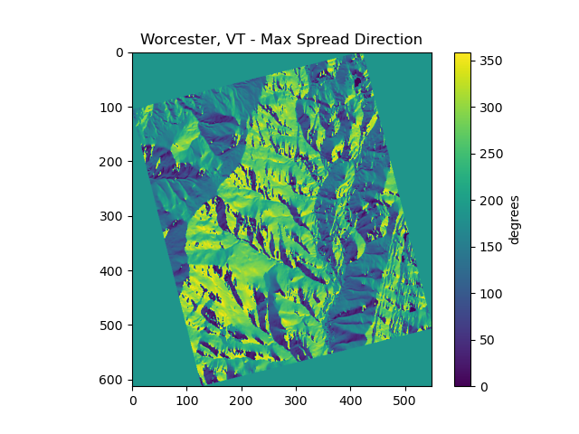

The Pyretechnics Fire Behavior Library
Copyright © 2023-2024 Spatial Informatics Group, LLC
Table of Contents
- 1. Preface
- 2. Data Model
- 3. Loading Data into the 3D Space-Time Cube (pyretechnics.space_time_cube)
- 4. [WIP] Fire Behavior Model
- 5. Fuel Model and Moisture Definitions (pyretechnics.fuel_models)
- 6. [WIP] Surface Fire Equations (pyretechnics.surface_fire)
- 7. [WIP] Crown Fire Equations (pyretechnics.crown_fire)
- 8. [WIP] Spot Fire Equations (pyretechnics.spot_fire)
- 9. [WIP] Fire Spread Algorithms (pyretechnics.eulerian_level_set)
- 10. [WIP] Fire Suppression Algorithms (pyretechnics.suppression)
- 11. [WIP] Fire Spread API
- 12. [WIP] Fire Spread Functions
- 13. [WIP] Burning All Cells as a Head-Fire (similar to FLAMMAP)
- 14. [WIP] Loading LANDFIRE Inputs
- 15. [WIP] Testing burn_cells on Worcester, VT
- 15.1. Loading Topography, Fuel Model, and Vegetation Inputs from LANDFIRE GeoTIFFs
- 15.2. Adding Constant Wind and Moisture Values
- 15.3. Burning a Single Cell in the Dataset
- 15.4. Running Burn Cells on the Test Dataset
- 15.5. Visualizing the Burned Layers
- 15.6. Comparing Pyretechnics Outputs with FLAMMAP Outputs
- 16. Appendix
1. Preface
This document is a Literate Program1, containing both the source code of the software it describes as well as the rationale used in each step of its design and implementation. The purpose of this approach is to enable both programmers and non-programmers alike to retrace the author's footsteps as they read through the text and code. By the time they have reached the end of this document, the reader should have just as strong a grasp of the system as the original programmer.
The source code repository containing this document provides a comprehensive reproducible development environment through the use of the open source GNU Guix2 transactional package manager. This tool will automatically install all the software needed to tangle, detangle, weave, test, build, and install this library on your machine without conflicting with the main package manager of your operating system. See README.md for more details.
2. Data Model
2.1. Working in a 3D Space-Time Cube
In Pyretechnics, a fire is viewed as a three-dimensional event occurring within a bounded region of space-time \((T,Y,X)\). In this mental model, the environment in which a fire develops can be visualized as a cube in which space is described in 2D by the \(X\) and \(Y\) dimensions and time projects this 2D world into 3D along the \(T\) dimension.
Note, in particular, that this is not the same thing as a three-dimensional model of fire behavior that incorporates surface elevation as the third dimension. Although terrain data (such as elevation, slope, and aspect) and tree cover characteristics (such as canopy height and canopy base height) are incorporated into the implemented spread equations in order to determine the rate, direction, and mode of fire spread, the outputs of the fire behavior algorithms in Pyretechnics currently only use two dimensions to describe spatial heterogeneity within the simulation environment. The third dimension is instead reserved for temporal variations in the model inputs and outputs.
2.2. Fires as Conical Shapes in Space-Time
All fire events begin from an ignition somewhere in space-time. As combustion and propagation occur in burnable fuels, the burned area (a.k.a "burn scar") of a fire spreads monotonically outward in space. Viewed from the lens of our 3D space-time cube, these monotonically expanding burn scars form conical solids within the simulation environment, with the bottom point of the cone representing the initial ignition point and the upper edge of the cone representing the actively burning fire perimeter. Of course, we only expect idealized fire cones to appear in environments with homogeneous topography, weather, fuels, and fuel moisture. As these inputs become more heterogenous throughout the burned region of space-time, these idealized cones will become distorted in the directions of faster or slower spread and their perimeters may become more finely dissected. However, we use this conical shape description of fire events within the simulated space-time cube to convey both their monotonically increasing spatial area over time as well as to provide the foundation for a more visually intuitive understanding of the effect of temporally varying environmental conditions on the behavior (and thus shape) of fires.
2.3. Support for Input Datasets of Varying Dimensionality
At the beginning of a fire behavior simulation, our 3D space-time cube will be populated with all of the information that describes the environment and will remain effectively static as the fire event unfolds. This includes (but is not limited to) topography, weather, fuels, and fuel moisture. In many common simulation scenarios, we expect that topography and fuels will probably vary in space but not in time, and weather and fuel moisture may vary in both space and time. However, we use "may" in these statements because the data model within Pyretechnics is flexibly designed to allow any of these environmental input variables to take on any of these forms:
- Constant
- Constant in both space and time.
Ex: A single constant foliar moisture value could be used over the simulation area for the entire simulation duration. - Temporal
- Constant in space but variable in time.
Ex: An hourly sequence of spread rate adjustment factors could be used to globally ramp up and down fire spread rates throughout a day/night cycle, creating burn periods of arbitrary length and intensity. - Spatial
- Variable in space but constant in time.
Ex: A raster layer downloaded from LANDFIRE3 can be used to specify the spatial distribution of FBFM40 fuel model values on a landscape. - Spatio-temporal
- Variable in both space and time.
Ex: Hourly RTMA4 weather data can be loaded from a multi-band raster and used to specify the spatio-temporal distribution of wind speed and direction throughout the simulation domain.
This is accomplished by representing each such input value as an abstract datatype with a set of 3D space-time lookup functions for accessing its values within 0D, 1D, 2D, and 3D slices of the space-time cube at the simulation resolution. Such lookups should always be referentially transparent, so as to ensure that subsequent lookups with the same coordinate will always yield the same values. See section 3 for implementation details.
2.4. Support for Input Datasets of Varying Resolution
Even when dimensions are the same between input datasets, they may be provided at different resolutions from one another, provided that the following conditions are met:
- Same Projection
- All spatially varying datasets must share the same projection.
- Same Extent
- All spatial and temporal extents must match.
- Data Resolutions Divide Simulation Resolutions Evenly
- All spatial and temporal resolutions must be exact divisors of the simulation resolution.
The simulated space-time cube will share the same projection and extent as the input datasets, but its resolution may be specified by the user, provided that it meets condition 3 above. The 3D lookup functions for each input will then be responsible for translating the space-time coordinates they receive at the simulation resolution into the correct coordinates for their underlying dataset's native resolution. See section 3 for implementation details.
3. Loading Data into the 3D Space-Time Cube (pyretechnics.space_time_cube)
3.1. For Developers
The following sections define Python classes that construct 3D space-time cubes corresponding to the data model described above for various types of input datasets.
3.1.1. Module Imports
from functools import reduce import numpy as np
3.1.2. Utility Functions
def is_pos_int(x): return isinstance(x, int) and x > 0 def divide_evenly(dividend, divisor): (quotient, remainder) = divmod(dividend, divisor) if remainder == 0: return quotient else: raise ValueError(str(dividend) + " must be an exact multiple of " + str(divisor) + ".") def to_positive_index_range(index_range, axis_length): """ Translate None and negative indices to positive indices. """ (start, stop) = index_range return ( 0 if start == None else axis_length + start if start < 0 else start, axis_length if stop == None else axis_length + stop if stop < 0 else stop ) def maybe_repeat_array(array, axis_repetitions): """ Return a new array that is created by repeating the elements from the input array repetitions times along the specified array axis. Avoid allocating new memory if repetitions == 1 or if the repeated array axis has length 1. """ (axis, repetitions) = axis_repetitions if repetitions == 1: return array else: array_shape = list(np.shape(array)) if array_shape[axis] == 1: array_shape[axis] = repetitions return np.broadcast_to(array, array_shape) else: return np.repeat(array, repetitions, axis)
3.1.3. SpaceTimeCube Class
When an input dataset is already loaded into memory as either a single
scalar value or a 1D, 2D, or 3D array of values, it can be made
available to the various Pyretechnics algorithms by wrapping it in a
SpaceTimeCube object. As described in sections 2.3 and 2.4, this input data can be provided in a variety of
dimensions and resolutions, subject to some simple constraints.
The SpaceTimeCube object will be created with a tuple of
user-specified spatio-temporal resolutions, called the cube shape,
which must be equal to or exact multiples of those of the underlying
data. For memory efficiency, input values are stored within the
SpaceTimeCube object at their native resolution but can be accessed
at any spatio-temporal point or region within the SpaceTimeCube's
extent using coordinates from the cube shape resolution.
The various accessor functions provided by this class receive 3D space-time coordinates at the cube shape resolution and will correctly map them into the corresponding index within the native dataset. Whenever a bounded region of space-time is requested via an accessor function, the underlying data will be expanded to fill a new Numpy array at the cube shape resolution. Whenever possible, Numpy array broadcasting will be used instead of data copying for any constant input dimensions.
class SpaceTimeCube: """ Create an object that represents a 3D array with dimensions (T,Y,X) given by cube_shape. Internally, data is stored as a 3D Numpy array at the resolution of the provided base data. Whenever a point value or contiguous space-time region of values is requested, translate the given cube_shape coordinates into base coordinates, look up the values from the base data, expand them (if necessary) back into the cube_shape resolution, and return the resulting scalar value or array to the caller. """ def __init__(self, cube_shape, base): """ NOTE: The resolutions in cube_shape must be exact multiples of any existing dimensions in the base data. """ # Ensure that cube_shape contains 3 values or throw an error (cube_bands, cube_rows, cube_cols) = cube_shape # Ensure that cube_shape only contains positive integers or throw an error if not(all(map(is_pos_int, cube_shape))): raise ValueError("The cube_shape must only contain positive integers.") # Store the cube metadata for later self.ndim = 3 self.size = cube_bands * cube_rows * cube_cols self.shape = cube_shape self.base = base match np.ndim(base): # 0D: Constant Input case 0: self.t_repetitions = cube_bands self.y_repetitions = cube_rows self.x_repetitions = cube_cols self.data = np.asarray([[[base]]]) # 1D: Time-Series Input case 1: base_bands = len(base) self.t_repetitions = divide_evenly(cube_bands, base_bands) self.y_repetitions = cube_rows self.x_repetitions = cube_cols # Expand (base_bands) -> (base_bands,1,1) self.data = np.expand_dims(base, axis=(1,2)) # 2D: Spatial Input case 2: (base_rows, base_cols) = np.shape(base) self.t_repetitions = cube_bands self.y_repetitions = divide_evenly(cube_rows, base_rows) self.x_repetitions = divide_evenly(cube_cols, base_cols) # Expand (base_rows,base_cols) -> (1,base_rows,base_cols) self.data = np.expand_dims(base, axis=0) # 3D: Spatio-Temporal Input case 3: (base_bands, base_rows, base_cols) = np.shape(base) self.t_repetitions = divide_evenly(cube_bands, base_bands) self.y_repetitions = divide_evenly(cube_rows, base_rows) self.x_repetitions = divide_evenly(cube_cols, base_cols) self.data = np.asarray(base) # 4D+: Invalid Input case _: raise ValueError("Invalid input: base must have 0-3 dimensions.") def get(self, t, y, x): """ Return the scalar value at index (t,y,x) by translating these cube coordinates to base coordinates and looking up the value within the base data. NOTE: (t,y,x) = (0,0,0) is the upper-left corner of the array in the first timestep. NOTE: Indices may be negative. """ # Select value by spatio-temporal coordinate return self.data[t // self.t_repetitions, y // self.y_repetitions, x // self.x_repetitions] def getTimeSeries(self, t_range, y, x): """ Return the 1D array given by the slice (t_range,y,x) by translating these cube coordinates to base coordinates, looking up the array slice within the base data, and expanding it back to the cube_shape resolution. NOTE: (t,y,x) = (0,0,0) is the upper-left corner of the array in the first timestep. NOTE: Indices may be negative. NOTE: Range indices may include one or more None values and provide (inclusion, exclusion) semantics like Python array slice notation. """ # Destructure the argument range (t_start, t_stop_exclusive) = to_positive_index_range(t_range, self.shape[0]) t_stop = t_stop_exclusive - 1 # Translate high-res coordinates to low-res coordinates t_start_chunk = t_start // self.t_repetitions t_stop_chunk = t_stop // self.t_repetitions y_chunk = y // self.y_repetitions x_chunk = x // self.x_repetitions # Select the array slice that completely contains all low-res coordinates low_res_time = self.data[t_start_chunk:(t_stop_chunk + 1), y_chunk, x_chunk] # Expand the low-res slice into a high-res slice high_res_time = maybe_repeat_array(low_res_time, (0, self.t_repetitions)) # Translate high-res global coordinates to high-res slice coordinates t_chunk_origin = t_start_chunk * self.t_repetitions t_start_idx = t_start - t_chunk_origin t_stop_idx = t_stop - t_chunk_origin # Select the array slice that matches the high-res slice coordinates return high_res_time[t_start_idx:(t_stop_idx + 1)] def getSpatialPlane(self, t, y_range, x_range): """ Return the 2D array given by the slice (t,y_range,x_range) by translating these cube coordinates to base coordinates, looking up the array slice within the base data, and expanding it back to the cube_shape resolution. NOTE: (t,y,x) = (0,0,0) is the upper-left corner of the array in the first timestep. NOTE: Indices may be negative. NOTE: Range indices may include one or more None values and provide (inclusion, exclusion) semantics like Python array slice notation. """ # Destructure the argument ranges (y_start, y_stop_exclusive) = to_positive_index_range(y_range, self.shape[1]) (x_start, x_stop_exclusive) = to_positive_index_range(x_range, self.shape[2]) y_stop = y_stop_exclusive - 1 x_stop = x_stop_exclusive - 1 # Translate high-res coordinates to low-res coordinates t_chunk = t // self.t_repetitions y_start_chunk = y_start // self.y_repetitions y_stop_chunk = y_stop // self.y_repetitions x_start_chunk = x_start // self.x_repetitions x_stop_chunk = x_stop // self.x_repetitions # Select the array slice that completely contains all low-res coordinates low_res_space = self.data[t_chunk, y_start_chunk:(y_stop_chunk + 1), x_start_chunk:(x_stop_chunk + 1)] # Expand the low-res slice into a high-res slice high_res_space = reduce(maybe_repeat_array, ((0, self.y_repetitions), (1, self.x_repetitions)), low_res_space) # Translate high-res global coordinates to high-res slice coordinates y_chunk_origin = y_start_chunk * self.y_repetitions x_chunk_origin = x_start_chunk * self.x_repetitions y_start_idx = y_start - y_chunk_origin y_stop_idx = y_stop - y_chunk_origin x_start_idx = x_start - x_chunk_origin x_stop_idx = x_stop - x_chunk_origin # Select the array slice that matches the high-res slice coordinates return high_res_space[y_start_idx:(y_stop_idx + 1), x_start_idx:(x_stop_idx + 1)] def getSubcube(self, t_range, y_range, x_range): """ Return the 3D array given by the slice (t_range,y_range,x_range) by translating these cube coordinates to base coordinates, looking up the array slice within the base data, and expanding it back to the cube_shape resolution. NOTE: (t,y,x) = (0,0,0) is the upper-left corner of the array in the first timestep. NOTE: Indices may be negative. NOTE: Range indices may include one or more None values and provide (inclusion, exclusion) semantics like Python array slice notation. """ # Destructure the argument ranges (t_start, t_stop_exclusive) = to_positive_index_range(t_range, self.shape[0]) (y_start, y_stop_exclusive) = to_positive_index_range(y_range, self.shape[1]) (x_start, x_stop_exclusive) = to_positive_index_range(x_range, self.shape[2]) t_stop = t_stop_exclusive - 1 y_stop = y_stop_exclusive - 1 x_stop = x_stop_exclusive - 1 # Translate high-res coordinates to low-res coordinates t_start_chunk = t_start // self.t_repetitions t_stop_chunk = t_stop // self.t_repetitions y_start_chunk = y_start // self.y_repetitions y_stop_chunk = y_stop // self.y_repetitions x_start_chunk = x_start // self.x_repetitions x_stop_chunk = x_stop // self.x_repetitions # Select the array slice that completely contains all low-res coordinates low_res_cube = self.data[t_start_chunk:(t_stop_chunk + 1), y_start_chunk:(y_stop_chunk + 1), x_start_chunk:(x_stop_chunk + 1)] # Expand the low-res slice into a high-res slice high_res_cube = reduce(maybe_repeat_array, ((0, self.t_repetitions), (1, self.y_repetitions), (2, self.x_repetitions)), low_res_cube) # Translate high-res global coordinates to high-res slice coordinates t_chunk_origin = t_start_chunk * self.t_repetitions y_chunk_origin = y_start_chunk * self.y_repetitions x_chunk_origin = x_start_chunk * self.x_repetitions t_start_idx = t_start - t_chunk_origin t_stop_idx = t_stop - t_chunk_origin y_start_idx = y_start - y_chunk_origin y_stop_idx = y_stop - y_chunk_origin x_start_idx = x_start - x_chunk_origin x_stop_idx = x_stop - x_chunk_origin # Select the array slice that matches the high-res slice coordinates return high_res_cube[t_start_idx:(t_stop_idx + 1), y_start_idx:(y_stop_idx + 1), x_start_idx:(x_stop_idx + 1)] def __getFullyRealizedCube(self): """ Return the 3D array created by expanding the base data to the cube_shape resolution. Wherever possible, Numpy broadcasting is used to avoid memory allocation along constant array dimensions. """ match np.ndim(self.base): # 0D: Constant Input case 0: # Broadcast (0,0,0) -> (t,y,x) return np.broadcast_to(self.data, self.shape) # 1D: Time-Series Input case 1: # Repeat (t0,1,1) -> (t,1,1) repeated_array = maybe_repeat_array(self.data, (0, self.t_repetitions)) # Broadcast (t,1,1) -> (t,y,x) return np.broadcast_to(repeated_array, self.shape) # 2D: Spatial Input case 2: # Repeat (1,y0,x0) -> (1,y,x) repeated_array = reduce(maybe_repeat_array, ((1, self.y_repetitions), (2, self.x_repetitions)), self.data) # Broadcast (1,y,x) -> (t,y,x) return np.broadcast_to(repeated_array, self.shape) # 3D: Spatio-Temporal Input case 3: # Repeat (t0,y0,x0) -> (t,y,x) return reduce(maybe_repeat_array, ((0, self.t_repetitions), (1, self.y_repetitions), (2, self.x_repetitions)), self.data) def getFullyRealizedCube(self, cache=False): """ Return the 3D array created by expanding the base data to the cube_shape resolution. Wherever possible, Numpy broadcasting is used to avoid memory allocation along constant array dimensions. When cache == True, this expanded 3D array is cached within the SpaceTimeCube object for future immediate retrieval. """ if hasattr(self, "cube"): return self.cube else: cube = self.__getFullyRealizedCube() if cache is True: self.cube = cube return cube def releaseFullyRealizedCube(self): """ Deletes the cached fully realized cube if it exists. """ if hasattr(self, "cube"): delattr(self, "cube")
3.1.4. LazySpaceTimeCube Class
When a dataset is too large to fit easily into memory, it can be
partitioned into a collection of subcubes, which will be lazily loaded
on demand into a 3D cache grid of SpaceTimeCube objects provided by
the LazySpaceTimeCube class.
The LazySpaceTimeCube object will be created with a tuple of
user-specified spatio-temporal resolutions, called the cube shape,
which must be equal to or exact multiples of the subcube shape.
The various accessor functions provided by this class receive 3D
space-time coordinates at the cube shape resolution and will
correctly map them into the corresponding cache and subcube indexes.
Any intersected subcubes that are not already present in the cache
grid will be loaded on demand by calling a user-supplied
load_subcube function and stored in the cache grid for faster
retrieval later. If a bounded region of space-time that spans multiple
subcubes is requested via an accessor function, each of the
intersected subcubes will be loaded and cached, their relevant array
slices will be extracted, and these slices will be merged into a new
array at the cube shape resolution.
Fire spread simulations that use the LazySpaceTimeCube class will
only need to load into memory those subcubes which are intersected by
the expanding conical burn scar (see section 2.2). In simulations of fires that are small relative to the
extent of the full 3D space-time environment, these memory savings may
be substantial and may make it possible to run simulations over larger
extents and/or finer resolutions than have been used previously.
class LazySpaceTimeCube: """ Create an object that represents a 3D array with dimensions (T,Y,X) given by cube_shape. Internally, data is stored as an initially empty 3D array of SpaceTimeCube objects. Whenever a point value or contiguous space-time region of values is requested, identify which SpaceTimeCubes contain the requested coordinates, load them into the cache array by calling load_subcube for any that are not already present, request the values from these SpaceTimeCubes, combine them together if necessary, and return the resulting scalar value or array to the caller. """ def __init__(self, cube_shape, subcube_shape, load_subcube): """ NOTE: The resolutions in cube_shape must be exact multiples of those in subcube_shape. """ # Ensure that cube_shape and subcube_shape both contain 3 values or throw an error (cube_bands, cube_rows, cube_cols) = cube_shape (subcube_bands, subcube_rows, subcube_cols) = subcube_shape # Ensure that cube_shape and subcube_shape only contain positive integers or throw an error if not(all(map(is_pos_int, cube_shape + subcube_shape))): raise ValueError("The cube_shape and subcube_shape must only contain positive integers.") # Ensure that cube_shape is divided evenly by subcube_shape or throw an error cache_bands = divide_evenly(cube_bands, subcube_bands) cache_rows = divide_evenly(cube_rows, subcube_rows) cache_cols = divide_evenly(cube_cols, subcube_cols) # Store the cube metadata, subcube_shape, cache_shape, cache, and load_subcube functions for later self.ndim = 3 self.size = cube_bands * cube_rows * cube_cols self.shape = cube_shape self.subcube_shape = subcube_shape self.cache_shape = (cache_bands, cache_rows, cache_cols) self.cache = np.empty(self.cache_shape, dtype=object) self.load_subcube = load_subcube def __getOrLoadSubcube(self, cache_t, cache_y, cache_x): """ Return the SpaceTimeCube stored at self.cache[cache_t, cache_y, cache_x] if it has already been loaded. Otherwise, call self.load_subcube to load it, store it in self.cache, and return it. """ subcube = self.cache[cache_t, cache_y, cache_x] if subcube: return subcube else: subcube = self.load_subcube((cache_t, cache_y, cache_x), self.subcube_shape) self.cache[cache_t, cache_y, cache_x] = subcube return subcube def get(self, t, y, x): """ Return the scalar value at index (t,y,x) by translating these cube coordinates to cache and subcube coordinates, loading the matching subcube into the cache grid if not already present, and looking up the value within this subcube. NOTE: (t,y,x) = (0,0,0) is the upper-left corner of the array in the first timestep. NOTE: Indices may be negative provided that your load_subcube function can handle negative indices in its cache_index argument. """ (subcube_bands, subcube_rows, subcube_cols) = self.subcube_shape (cache_t, subcube_t) = divmod(t, subcube_bands) (cache_y, subcube_y) = divmod(y, subcube_rows) (cache_x, subcube_x) = divmod(x, subcube_cols) subcube = self.__getOrLoadSubcube(cache_t, cache_y, cache_x) return subcube.get(subcube_t, subcube_y, subcube_x) def getTimeSeries(self, t_range, y, x): """ Return the 1D array given by the slice (t_range,y,x) by translating these cube coordinates to cache and subcube coordinates, loading the matching subcubes into the cache grid if not already present, looking up the array slices within each subcube, and merging them together into a single 1D array. NOTE: (t,y,x) = (0,0,0) is the upper-left corner of the array in the first timestep. NOTE: Indices may be negative provided that your load_subcube function can handle negative indices in its cache_index argument. NOTE: Range indices may include one or more None values and provide (inclusion, exclusion) semantics like Python array slice notation. """ # Destructure the argument range (t_start, t_stop_exclusive) = to_positive_index_range(t_range, self.shape[0]) t_stop = t_stop_exclusive - 1 # Translate high-res coordinates to cache and subcube coordinates (subcube_bands, subcube_rows, subcube_cols) = self.subcube_shape (cache_t_start, subcube_t_start) = divmod(t_start, subcube_bands) (cache_t_stop, subcube_t_stop) = divmod(t_stop, subcube_bands) (cache_y, subcube_y) = divmod(y, subcube_rows) (cache_x, subcube_x) = divmod(x, subcube_cols) # Load, expand, and combine subcubes return np.concatenate( [self.__getOrLoadSubcube(cache_t, cache_y, cache_x ).getTimeSeries( (subcube_t_start if cache_t == cache_t_start else 0, subcube_t_stop + 1 if cache_t == cache_t_stop else subcube_bands), subcube_y, subcube_x ) for cache_t in range(cache_t_start, cache_t_stop + 1)] ) def getSpatialPlane(self, t, y_range, x_range): """ Return the 2D array given by the slice (t,y_range,x_range) by translating these cube coordinates to cache and subcube coordinates, loading the matching subcubes into the cache grid if not already present, looking up the array slices within each subcube, and merging them together into a single 2D array. NOTE: (t,y,x) = (0,0,0) is the upper-left corner of the array in the first timestep. NOTE: Indices may be negative provided that your load_subcube function can handle negative indices in its cache_index argument. NOTE: Range indices may include one or more None values and provide (inclusion, exclusion) semantics like Python array slice notation. """ # Destructure the argument ranges (y_start, y_stop_exclusive) = to_positive_index_range(y_range, self.shape[1]) (x_start, x_stop_exclusive) = to_positive_index_range(x_range, self.shape[2]) y_stop = y_stop_exclusive - 1 x_stop = x_stop_exclusive - 1 # Translate high-res coordinates to cache and subcube coordinates (subcube_bands, subcube_rows, subcube_cols) = self.subcube_shape (cache_t, subcube_t) = divmod(t, subcube_bands) (cache_y_start, subcube_y_start) = divmod(y_start, subcube_rows) (cache_y_stop, subcube_y_stop) = divmod(y_stop, subcube_rows) (cache_x_start, subcube_x_start) = divmod(x_start, subcube_cols) (cache_x_stop, subcube_x_stop) = divmod(x_stop, subcube_cols) # Load, expand, and combine subcubes return np.block( [[self.__getOrLoadSubcube(cache_t, cache_y, cache_x ).getSpatialPlane( subcube_t, (subcube_y_start if cache_y == cache_y_start else 0, subcube_y_stop + 1 if cache_y == cache_y_stop else subcube_rows), (subcube_x_start if cache_x == cache_x_start else 0, subcube_x_stop + 1 if cache_x == cache_x_stop else subcube_cols) ) for cache_x in range(cache_x_start, cache_x_stop + 1)] for cache_y in range(cache_y_start, cache_y_stop + 1)] ) def getSubcube(self, t_range, y_range, x_range): """ Return the 3D array given by the slice (t_range,y_range,x_range) by translating these cube coordinates to cache and subcube coordinates, loading the matching subcubes into the cache grid if not already present, looking up the array slices within each subcube, and merging them together into a single 3D array. NOTE: (t,y,x) = (0,0,0) is the upper-left corner of the array in the first timestep. NOTE: Indices may be negative provided that your load_subcube function can handle negative indices in its cache_index argument. NOTE: Range indices may include one or more None values and provide (inclusion, exclusion) semantics like Python array slice notation. """ # Destructure the argument ranges (t_start, t_stop_exclusive) = to_positive_index_range(t_range, self.shape[0]) (y_start, y_stop_exclusive) = to_positive_index_range(y_range, self.shape[1]) (x_start, x_stop_exclusive) = to_positive_index_range(x_range, self.shape[2]) t_stop = t_stop_exclusive - 1 y_stop = y_stop_exclusive - 1 x_stop = x_stop_exclusive - 1 # Translate high-res coordinates to cache and subcube coordinates (subcube_bands, subcube_rows, subcube_cols) = self.subcube_shape (cache_t_start, subcube_t_start) = divmod(t_start, subcube_bands) (cache_t_stop, subcube_t_stop) = divmod(t_stop, subcube_bands) (cache_y_start, subcube_y_start) = divmod(y_start, subcube_rows) (cache_y_stop, subcube_y_stop) = divmod(y_stop, subcube_rows) (cache_x_start, subcube_x_start) = divmod(x_start, subcube_cols) (cache_x_stop, subcube_x_stop) = divmod(x_stop, subcube_cols) # Load, expand, and combine subcubes return np.block( [[[self.__getOrLoadSubcube(cache_t, cache_y, cache_x ).getSubcube( (subcube_t_start if cache_t == cache_t_start else 0, subcube_t_stop + 1 if cache_t == cache_t_stop else subcube_bands), (subcube_y_start if cache_y == cache_y_start else 0, subcube_y_stop + 1 if cache_y == cache_y_stop else subcube_rows), (subcube_x_start if cache_x == cache_x_start else 0, subcube_x_stop + 1 if cache_x == cache_x_stop else subcube_cols) ) for cache_x in range(cache_x_start, cache_x_stop + 1)] for cache_y in range(cache_y_start, cache_y_stop + 1)] for cache_t in range(cache_t_start, cache_t_stop + 1)] ) def getFullyRealizedCube(self, cache=False): raise ValueError("getFullyRealizedCube is not implemented for LazySpaceTimeCube.\n" + "You probably don't want to do this anyway.") def releaseFullyRealizedCube(self): raise ValueError("releaseFullyRealizedCube is not implemented for LazySpaceTimeCube.\n" + "You probably don't want to do this anyway.")
3.2. For Users
In the following sections, we will use functions from numpy and the
Python standard library to construct arrays of different resolutions
in memory to use in our SpaceTimeCube and LazySpaceTimeCube
examples. In many real world applications, this array data will
probably be read in from files or databases using Python libraries
such as rasterio or psycopg2. All examples should apply equally well
in either case.
3.2.1. How to Use SpaceTimeCube
- Create a SpaceTimeCube from 0D, 1D, 2D, or 3D Input Data
import numpy as np from pyretechnics.space_time_cube import SpaceTimeCube #============================================================== # Set a Random Seed #============================================================== np.random.seed(0) #============================================================== # Specify the SpaceTimeCube Dimensions #============================================================== cube_shape = ( 240, # bands: 10 days @ 1 hour/band 1000, # rows: 30 km @ 30 meters/row 1000, # cols: 30 km @ 30 meters/col ) #===================================================================================================== # Constant Data: foliar moisture = 70% everywhere #===================================================================================================== foliar_moisture = 0.7 constant_cube = SpaceTimeCube(cube_shape, foliar_moisture) #===================================================================================================== # Temporal Data: 24-hour burn period with ramp up and ramp down for 10 days #===================================================================================================== spread_rate_adjustments = ([0] * 6 + [0.33, 0.66] + [1] * 12 + [0.66, 0.33] + [0] * 2) * 10 time_series_cube = SpaceTimeCube(cube_shape, spread_rate_adjustments) #===================================================================================================== # Spatial Data: 2D elevation raster with 1000 (30m) x 1000 (30m) cells #===================================================================================================== elevation_raster = np.random.normal(500, 100, 1000000).astype("int").reshape(1000,1000) spatial_cube = SpaceTimeCube(cube_shape, elevation_raster) #===================================================================================================== # Spatio-Temporal Data: 3D daily max wind speed raster with 10 (days) x 100 (300m) x 100 (300m) cells #===================================================================================================== wind_speed_raster = np.random.normal(30, 5, 100000).astype("int").reshape(10,100,100) spatiotemporal_cube = SpaceTimeCube(cube_shape, wind_speed_raster)
- Retrieve a Scalar Value at a Space-Time Coordinate
# Space-Time Coordinate band = 12 row = 100 col = 100 print("Value from Constant Data: Foliar Moisture") print(constant_cube.get(band, row, col), "\n") print("Value from Time Series Data: Spread Rate Adjustment") print(time_series_cube.get(band, row, col), "\n") print("Value from Spatial Data: Elevation") print(spatial_cube.get(band, row, col), "\n") print("Value from Spatio-Temporal Data: Wind Speed") print(spatiotemporal_cube.get(band, row, col))
Value from Constant Data: Foliar Moisture 0.7 Value from Time Series Data: Spread Rate Adjustment 1.0 Value from Spatial Data: Elevation 564 Value from Spatio-Temporal Data: Wind Speed 32
- Retrieve a Time Series at a Spatial Coordinate
# Space-Time Coordinates band_range = (18,30) row = 100 col = 100 print("Time Series from Constant Data: Foliar Moisture") print(constant_cube.getTimeSeries(band_range, row, col), "\n") print("Time Series from Time Series Data: Spread Rate Adjustment") print(time_series_cube.getTimeSeries(band_range, row, col), "\n") print("Time Series from Spatial Data: Elevation") print(spatial_cube.getTimeSeries(band_range, row, col), "\n") print("Time Series from Spatio-Temporal Data: Wind Speed") print(spatiotemporal_cube.getTimeSeries(band_range, row, col))
Time Series from Constant Data: Foliar Moisture [0.7 0.7 0.7 0.7 0.7 0.7 0.7 0.7 0.7 0.7 0.7 0.7] Time Series from Time Series Data: Spread Rate Adjustment [1. 1. 0.66 0.33 0. 0. 0. 0. 0. 0. 0. 0. ] Time Series from Spatial Data: Elevation [564 564 564 564 564 564 564 564 564 564 564 564] Time Series from Spatio-Temporal Data: Wind Speed [32 32 32 32 32 32 37 37 37 37 37 37]
- Retrieve a Spatial Plane at a Temporal Coordinate
# Space-Time Coordinates band = 12 row_range = (95,105) col_range = (95,105) print("Spatial Plane from Constant Data: Foliar Moisture") print(constant_cube.getSpatialPlane(band, row_range, col_range), "\n") print("Spatial Plane from Time Series Data: Spread Rate Adjustment") print(time_series_cube.getSpatialPlane(band, row_range, col_range), "\n") print("Spatial Plane from Spatial Data: Elevation") print(spatial_cube.getSpatialPlane(band, row_range, col_range), "\n") print("Spatial Plane from Spatio-Temporal Data: Wind Speed") print(spatiotemporal_cube.getSpatialPlane(band, row_range, col_range))
Spatial Plane from Constant Data: Foliar Moisture [[0.7 0.7 0.7 0.7 0.7 0.7 0.7 0.7 0.7 0.7] [0.7 0.7 0.7 0.7 0.7 0.7 0.7 0.7 0.7 0.7] [0.7 0.7 0.7 0.7 0.7 0.7 0.7 0.7 0.7 0.7] [0.7 0.7 0.7 0.7 0.7 0.7 0.7 0.7 0.7 0.7] [0.7 0.7 0.7 0.7 0.7 0.7 0.7 0.7 0.7 0.7] [0.7 0.7 0.7 0.7 0.7 0.7 0.7 0.7 0.7 0.7] [0.7 0.7 0.7 0.7 0.7 0.7 0.7 0.7 0.7 0.7] [0.7 0.7 0.7 0.7 0.7 0.7 0.7 0.7 0.7 0.7] [0.7 0.7 0.7 0.7 0.7 0.7 0.7 0.7 0.7 0.7] [0.7 0.7 0.7 0.7 0.7 0.7 0.7 0.7 0.7 0.7]] Spatial Plane from Time Series Data: Spread Rate Adjustment [[1. 1. 1. 1. 1. 1. 1. 1. 1. 1.] [1. 1. 1. 1. 1. 1. 1. 1. 1. 1.] [1. 1. 1. 1. 1. 1. 1. 1. 1. 1.] [1. 1. 1. 1. 1. 1. 1. 1. 1. 1.] [1. 1. 1. 1. 1. 1. 1. 1. 1. 1.] [1. 1. 1. 1. 1. 1. 1. 1. 1. 1.] [1. 1. 1. 1. 1. 1. 1. 1. 1. 1.] [1. 1. 1. 1. 1. 1. 1. 1. 1. 1.] [1. 1. 1. 1. 1. 1. 1. 1. 1. 1.] [1. 1. 1. 1. 1. 1. 1. 1. 1. 1.]] Spatial Plane from Spatial Data: Elevation [[574 369 544 310 517 488 565 549 450 470] [443 551 480 476 432 561 578 361 468 480] [520 712 396 393 584 292 424 391 494 586] [707 534 246 423 521 500 426 340 288 482] [542 285 607 555 645 559 461 603 330 452] [498 497 664 445 518 564 461 508 600 380] [454 500 276 487 447 591 413 378 458 508] [573 890 485 501 357 413 356 635 374 618] [535 558 491 482 539 572 598 703 463 329] [487 555 580 492 462 484 495 396 711 356]] Spatial Plane from Spatio-Temporal Data: Wind Speed [[31 31 31 31 31 31 31 31 31 31] [31 31 31 31 31 31 31 31 31 31] [31 31 31 31 31 31 31 31 31 31] [31 31 31 31 31 31 31 31 31 31] [31 31 31 31 31 31 31 31 31 31] [26 26 26 26 26 32 32 32 32 32] [26 26 26 26 26 32 32 32 32 32] [26 26 26 26 26 32 32 32 32 32] [26 26 26 26 26 32 32 32 32 32] [26 26 26 26 26 32 32 32 32 32]]
- Retrieve a Subcube within a Space-Time Region
# Space-Time Coordinates band_range = (23,25) row_range = (95,105) col_range = (95,105) print("Subcube from Constant Data: Foliar Moisture") print(constant_cube.getSubcube(band_range, row_range, col_range), "\n") print("Subcube from Time Series Data: Spread Rate Adjustment") print(time_series_cube.getSubcube(band_range, row_range, col_range), "\n") print("Subcube from Spatial Data: Elevation") print(spatial_cube.getSubcube(band_range, row_range, col_range), "\n") print("Subcube from Spatio-Temporal Data: Wind Speed") print(spatiotemporal_cube.getSubcube(band_range, row_range, col_range))
Subcube from Constant Data: Foliar Moisture [[[0.7 0.7 0.7 0.7 0.7 0.7 0.7 0.7 0.7 0.7] [0.7 0.7 0.7 0.7 0.7 0.7 0.7 0.7 0.7 0.7] [0.7 0.7 0.7 0.7 0.7 0.7 0.7 0.7 0.7 0.7] [0.7 0.7 0.7 0.7 0.7 0.7 0.7 0.7 0.7 0.7] [0.7 0.7 0.7 0.7 0.7 0.7 0.7 0.7 0.7 0.7] [0.7 0.7 0.7 0.7 0.7 0.7 0.7 0.7 0.7 0.7] [0.7 0.7 0.7 0.7 0.7 0.7 0.7 0.7 0.7 0.7] [0.7 0.7 0.7 0.7 0.7 0.7 0.7 0.7 0.7 0.7] [0.7 0.7 0.7 0.7 0.7 0.7 0.7 0.7 0.7 0.7] [0.7 0.7 0.7 0.7 0.7 0.7 0.7 0.7 0.7 0.7]] [[0.7 0.7 0.7 0.7 0.7 0.7 0.7 0.7 0.7 0.7] [0.7 0.7 0.7 0.7 0.7 0.7 0.7 0.7 0.7 0.7] [0.7 0.7 0.7 0.7 0.7 0.7 0.7 0.7 0.7 0.7] [0.7 0.7 0.7 0.7 0.7 0.7 0.7 0.7 0.7 0.7] [0.7 0.7 0.7 0.7 0.7 0.7 0.7 0.7 0.7 0.7] [0.7 0.7 0.7 0.7 0.7 0.7 0.7 0.7 0.7 0.7] [0.7 0.7 0.7 0.7 0.7 0.7 0.7 0.7 0.7 0.7] [0.7 0.7 0.7 0.7 0.7 0.7 0.7 0.7 0.7 0.7] [0.7 0.7 0.7 0.7 0.7 0.7 0.7 0.7 0.7 0.7] [0.7 0.7 0.7 0.7 0.7 0.7 0.7 0.7 0.7 0.7]]] Subcube from Time Series Data: Spread Rate Adjustment [[[0. 0. 0. 0. 0. 0. 0. 0. 0. 0.] [0. 0. 0. 0. 0. 0. 0. 0. 0. 0.] [0. 0. 0. 0. 0. 0. 0. 0. 0. 0.] [0. 0. 0. 0. 0. 0. 0. 0. 0. 0.] [0. 0. 0. 0. 0. 0. 0. 0. 0. 0.] [0. 0. 0. 0. 0. 0. 0. 0. 0. 0.] [0. 0. 0. 0. 0. 0. 0. 0. 0. 0.] [0. 0. 0. 0. 0. 0. 0. 0. 0. 0.] [0. 0. 0. 0. 0. 0. 0. 0. 0. 0.] [0. 0. 0. 0. 0. 0. 0. 0. 0. 0.]] [[0. 0. 0. 0. 0. 0. 0. 0. 0. 0.] [0. 0. 0. 0. 0. 0. 0. 0. 0. 0.] [0. 0. 0. 0. 0. 0. 0. 0. 0. 0.] [0. 0. 0. 0. 0. 0. 0. 0. 0. 0.] [0. 0. 0. 0. 0. 0. 0. 0. 0. 0.] [0. 0. 0. 0. 0. 0. 0. 0. 0. 0.] [0. 0. 0. 0. 0. 0. 0. 0. 0. 0.] [0. 0. 0. 0. 0. 0. 0. 0. 0. 0.] [0. 0. 0. 0. 0. 0. 0. 0. 0. 0.] [0. 0. 0. 0. 0. 0. 0. 0. 0. 0.]]] Subcube from Spatial Data: Elevation [[[574 369 544 310 517 488 565 549 450 470] [443 551 480 476 432 561 578 361 468 480] [520 712 396 393 584 292 424 391 494 586] [707 534 246 423 521 500 426 340 288 482] [542 285 607 555 645 559 461 603 330 452] [498 497 664 445 518 564 461 508 600 380] [454 500 276 487 447 591 413 378 458 508] [573 890 485 501 357 413 356 635 374 618] [535 558 491 482 539 572 598 703 463 329] [487 555 580 492 462 484 495 396 711 356]] [[574 369 544 310 517 488 565 549 450 470] [443 551 480 476 432 561 578 361 468 480] [520 712 396 393 584 292 424 391 494 586] [707 534 246 423 521 500 426 340 288 482] [542 285 607 555 645 559 461 603 330 452] [498 497 664 445 518 564 461 508 600 380] [454 500 276 487 447 591 413 378 458 508] [573 890 485 501 357 413 356 635 374 618] [535 558 491 482 539 572 598 703 463 329] [487 555 580 492 462 484 495 396 711 356]]] Subcube from Spatio-Temporal Data: Wind Speed [[[31 31 31 31 31 31 31 31 31 31] [31 31 31 31 31 31 31 31 31 31] [31 31 31 31 31 31 31 31 31 31] [31 31 31 31 31 31 31 31 31 31] [31 31 31 31 31 31 31 31 31 31] [26 26 26 26 26 32 32 32 32 32] [26 26 26 26 26 32 32 32 32 32] [26 26 26 26 26 32 32 32 32 32] [26 26 26 26 26 32 32 32 32 32] [26 26 26 26 26 32 32 32 32 32]] [[30 30 30 30 30 36 36 36 36 36] [30 30 30 30 30 36 36 36 36 36] [30 30 30 30 30 36 36 36 36 36] [30 30 30 30 30 36 36 36 36 36] [30 30 30 30 30 36 36 36 36 36] [34 34 34 34 34 37 37 37 37 37] [34 34 34 34 34 37 37 37 37 37] [34 34 34 34 34 37 37 37 37 37] [34 34 34 34 34 37 37 37 37 37] [34 34 34 34 34 37 37 37 37 37]]]
3.2.2. How to Use LazySpaceTimeCube
- Create a LazySpaceTimeCube from 0D, 1D, 2D, or 3D Input Data
import numpy as np from pyretechnics.space_time_cube import SpaceTimeCube, LazySpaceTimeCube #============================================================== # Set a Random Seed #============================================================== np.random.seed(0) #============================================================== # Specify the SpaceTimeCube Dimensions #============================================================== cube_shape = ( 240, # bands: 10 days @ 1 hour/band 1000, # rows: 30 km @ 30 meters/row 1000, # cols: 30 km @ 30 meters/col ) #===================================================================================================== # Constant Data: foliar moisture = 70% everywhere #===================================================================================================== foliar_moisture = 0.7 foliar_moisture_subcube_shape = cube_shape # Only 1 subcube necessary def foliar_moisture_load_subcube(_, subcube_shape): return SpaceTimeCube(subcube_shape, foliar_moisture) constant_cube = LazySpaceTimeCube(cube_shape, foliar_moisture_subcube_shape, foliar_moisture_load_subcube) #===================================================================================================== # Temporal Data: 24-hour burn period with ramp up and ramp down for 10 days #===================================================================================================== spread_rate_adjustments = ([0] * 6 + [0.33, 0.66] + [1] * 12 + [0.66, 0.33] + [0] * 2) * 10 spread_rate_adjustments_subcube_shape = (24, 1000, 1000) # 1 subcube per day (10 total) def spread_rate_adjustments_load_subcube(cache_index, subcube_shape): (cache_t, _, _) = cache_index t_start = 24 * cache_t t_stop = 24 * (cache_t + 1) return SpaceTimeCube(subcube_shape, spread_rate_adjustments[t_start:t_stop]) time_series_cube = LazySpaceTimeCube(cube_shape, spread_rate_adjustments_subcube_shape, spread_rate_adjustments_load_subcube) #===================================================================================================== # Spatial Data: 2D elevation raster with 1000 (30m) x 1000 (30m) cells #===================================================================================================== elevation_raster = np.random.normal(500, 100, 1000000).astype("int").reshape(1000,1000) elevation_raster_subcube_shape = (240, 100, 100) # 1 subcube per 100x100 cell region (10x10 = 100 total) def elevation_raster_load_subcube(cache_index, subcube_shape): (_, cache_y, cache_x) = cache_index y_start = 100 * cache_y y_stop = 100 * (cache_y + 1) x_start = 100 * cache_x x_stop = 100 * (cache_x + 1) return SpaceTimeCube(subcube_shape, elevation_raster[y_start:y_stop, x_start:x_stop]) spatial_cube = LazySpaceTimeCube(cube_shape, elevation_raster_subcube_shape, elevation_raster_load_subcube) #===================================================================================================== # Spatio-Temporal Data: 3D daily max wind speed raster with 10 (days) x 100 (300m) x 100 (300m) cells #===================================================================================================== wind_speed_raster = np.random.normal(30, 5, 100000).astype("int").reshape(10,100,100) wind_speed_raster_subcube_shape = (24, 100, 100) # 1 subcube per day per 100x100 cell region (10x10x10 = 1000 total) def wind_speed_raster_load_subcube(cache_index, subcube_shape): (cache_t, cache_y, cache_x) = cache_index t_start = cache_t t_stop = cache_t + 1 y_start = 10 * cache_y y_stop = 10 * (cache_y + 1) x_start = 10 * cache_x x_stop = 10 * (cache_x + 1) return SpaceTimeCube(subcube_shape, wind_speed_raster[t_start:t_stop, y_start:y_stop, x_start:x_stop]) spatiotemporal_cube = LazySpaceTimeCube(cube_shape, wind_speed_raster_subcube_shape, wind_speed_raster_load_subcube)
- Retrieve a Scalar Value at a Space-Time Coordinate
# Space-Time Coordinate band = 12 row = 100 col = 100 print("Value from Constant Data: Foliar Moisture") print(constant_cube.get(band, row, col), "\n") print("Value from Time Series Data: Spread Rate Adjustment") print(time_series_cube.get(band, row, col), "\n") print("Value from Spatial Data: Elevation") print(spatial_cube.get(band, row, col), "\n") print("Value from Spatio-Temporal Data: Wind Speed") print(spatiotemporal_cube.get(band, row, col))
Value from Constant Data: Foliar Moisture 0.7 Value from Time Series Data: Spread Rate Adjustment 1.0 Value from Spatial Data: Elevation 564 Value from Spatio-Temporal Data: Wind Speed 32
- Retrieve a Time Series at a Spatial Coordinate
# Space-Time Coordinates band_range = (18,30) row = 100 col = 100 print("Time Series from Constant Data: Foliar Moisture") print(constant_cube.getTimeSeries(band_range, row, col), "\n") print("Time Series from Time Series Data: Spread Rate Adjustment") print(time_series_cube.getTimeSeries(band_range, row, col), "\n") print("Time Series from Spatial Data: Elevation") print(spatial_cube.getTimeSeries(band_range, row, col), "\n") print("Time Series from Spatio-Temporal Data: Wind Speed") print(spatiotemporal_cube.getTimeSeries(band_range, row, col))
Time Series from Constant Data: Foliar Moisture [0.7 0.7 0.7 0.7 0.7 0.7 0.7 0.7 0.7 0.7 0.7 0.7] Time Series from Time Series Data: Spread Rate Adjustment [1. 1. 0.66 0.33 0. 0. 0. 0. 0. 0. 0. 0. ] Time Series from Spatial Data: Elevation [564 564 564 564 564 564 564 564 564 564 564 564] Time Series from Spatio-Temporal Data: Wind Speed [32 32 32 32 32 32 37 37 37 37 37 37]
- Retrieve a Spatial Plane at a Temporal Coordinate
# Space-Time Coordinates band = 12 row_range = (95,105) col_range = (95,105) print("Spatial Plane from Constant Data: Foliar Moisture") print(constant_cube.getSpatialPlane(band, row_range, col_range), "\n") print("Spatial Plane from Time Series Data: Spread Rate Adjustment") print(time_series_cube.getSpatialPlane(band, row_range, col_range), "\n") print("Spatial Plane from Spatial Data: Elevation") print(spatial_cube.getSpatialPlane(band, row_range, col_range), "\n") print("Spatial Plane from Spatio-Temporal Data: Wind Speed") print(spatiotemporal_cube.getSpatialPlane(band, row_range, col_range))
Spatial Plane from Constant Data: Foliar Moisture [[0.7 0.7 0.7 0.7 0.7 0.7 0.7 0.7 0.7 0.7] [0.7 0.7 0.7 0.7 0.7 0.7 0.7 0.7 0.7 0.7] [0.7 0.7 0.7 0.7 0.7 0.7 0.7 0.7 0.7 0.7] [0.7 0.7 0.7 0.7 0.7 0.7 0.7 0.7 0.7 0.7] [0.7 0.7 0.7 0.7 0.7 0.7 0.7 0.7 0.7 0.7] [0.7 0.7 0.7 0.7 0.7 0.7 0.7 0.7 0.7 0.7] [0.7 0.7 0.7 0.7 0.7 0.7 0.7 0.7 0.7 0.7] [0.7 0.7 0.7 0.7 0.7 0.7 0.7 0.7 0.7 0.7] [0.7 0.7 0.7 0.7 0.7 0.7 0.7 0.7 0.7 0.7] [0.7 0.7 0.7 0.7 0.7 0.7 0.7 0.7 0.7 0.7]] Spatial Plane from Time Series Data: Spread Rate Adjustment [[1. 1. 1. 1. 1. 1. 1. 1. 1. 1.] [1. 1. 1. 1. 1. 1. 1. 1. 1. 1.] [1. 1. 1. 1. 1. 1. 1. 1. 1. 1.] [1. 1. 1. 1. 1. 1. 1. 1. 1. 1.] [1. 1. 1. 1. 1. 1. 1. 1. 1. 1.] [1. 1. 1. 1. 1. 1. 1. 1. 1. 1.] [1. 1. 1. 1. 1. 1. 1. 1. 1. 1.] [1. 1. 1. 1. 1. 1. 1. 1. 1. 1.] [1. 1. 1. 1. 1. 1. 1. 1. 1. 1.] [1. 1. 1. 1. 1. 1. 1. 1. 1. 1.]] Spatial Plane from Spatial Data: Elevation [[574 369 544 310 517 488 565 549 450 470] [443 551 480 476 432 561 578 361 468 480] [520 712 396 393 584 292 424 391 494 586] [707 534 246 423 521 500 426 340 288 482] [542 285 607 555 645 559 461 603 330 452] [498 497 664 445 518 564 461 508 600 380] [454 500 276 487 447 591 413 378 458 508] [573 890 485 501 357 413 356 635 374 618] [535 558 491 482 539 572 598 703 463 329] [487 555 580 492 462 484 495 396 711 356]] Spatial Plane from Spatio-Temporal Data: Wind Speed [[31 31 31 31 31 31 31 31 31 31] [31 31 31 31 31 31 31 31 31 31] [31 31 31 31 31 31 31 31 31 31] [31 31 31 31 31 31 31 31 31 31] [31 31 31 31 31 31 31 31 31 31] [26 26 26 26 26 32 32 32 32 32] [26 26 26 26 26 32 32 32 32 32] [26 26 26 26 26 32 32 32 32 32] [26 26 26 26 26 32 32 32 32 32] [26 26 26 26 26 32 32 32 32 32]]
- Retrieve a Subcube within a Space-Time Region
# Space-Time Coordinates band_range = (23,25) row_range = (95,105) col_range = (95,105) print("Subcube from Constant Data: Foliar Moisture") print(constant_cube.getSubcube(band_range, row_range, col_range), "\n") print("Subcube from Time Series Data: Spread Rate Adjustment") print(time_series_cube.getSubcube(band_range, row_range, col_range), "\n") print("Subcube from Spatial Data: Elevation") print(spatial_cube.getSubcube(band_range, row_range, col_range), "\n") print("Subcube from Spatio-Temporal Data: Wind Speed") print(spatiotemporal_cube.getSubcube(band_range, row_range, col_range))
Subcube from Constant Data: Foliar Moisture [[[0.7 0.7 0.7 0.7 0.7 0.7 0.7 0.7 0.7 0.7] [0.7 0.7 0.7 0.7 0.7 0.7 0.7 0.7 0.7 0.7] [0.7 0.7 0.7 0.7 0.7 0.7 0.7 0.7 0.7 0.7] [0.7 0.7 0.7 0.7 0.7 0.7 0.7 0.7 0.7 0.7] [0.7 0.7 0.7 0.7 0.7 0.7 0.7 0.7 0.7 0.7] [0.7 0.7 0.7 0.7 0.7 0.7 0.7 0.7 0.7 0.7] [0.7 0.7 0.7 0.7 0.7 0.7 0.7 0.7 0.7 0.7] [0.7 0.7 0.7 0.7 0.7 0.7 0.7 0.7 0.7 0.7] [0.7 0.7 0.7 0.7 0.7 0.7 0.7 0.7 0.7 0.7] [0.7 0.7 0.7 0.7 0.7 0.7 0.7 0.7 0.7 0.7]] [[0.7 0.7 0.7 0.7 0.7 0.7 0.7 0.7 0.7 0.7] [0.7 0.7 0.7 0.7 0.7 0.7 0.7 0.7 0.7 0.7] [0.7 0.7 0.7 0.7 0.7 0.7 0.7 0.7 0.7 0.7] [0.7 0.7 0.7 0.7 0.7 0.7 0.7 0.7 0.7 0.7] [0.7 0.7 0.7 0.7 0.7 0.7 0.7 0.7 0.7 0.7] [0.7 0.7 0.7 0.7 0.7 0.7 0.7 0.7 0.7 0.7] [0.7 0.7 0.7 0.7 0.7 0.7 0.7 0.7 0.7 0.7] [0.7 0.7 0.7 0.7 0.7 0.7 0.7 0.7 0.7 0.7] [0.7 0.7 0.7 0.7 0.7 0.7 0.7 0.7 0.7 0.7] [0.7 0.7 0.7 0.7 0.7 0.7 0.7 0.7 0.7 0.7]]] Subcube from Time Series Data: Spread Rate Adjustment [[[0. 0. 0. 0. 0. 0. 0. 0. 0. 0.] [0. 0. 0. 0. 0. 0. 0. 0. 0. 0.] [0. 0. 0. 0. 0. 0. 0. 0. 0. 0.] [0. 0. 0. 0. 0. 0. 0. 0. 0. 0.] [0. 0. 0. 0. 0. 0. 0. 0. 0. 0.] [0. 0. 0. 0. 0. 0. 0. 0. 0. 0.] [0. 0. 0. 0. 0. 0. 0. 0. 0. 0.] [0. 0. 0. 0. 0. 0. 0. 0. 0. 0.] [0. 0. 0. 0. 0. 0. 0. 0. 0. 0.] [0. 0. 0. 0. 0. 0. 0. 0. 0. 0.]] [[0. 0. 0. 0. 0. 0. 0. 0. 0. 0.] [0. 0. 0. 0. 0. 0. 0. 0. 0. 0.] [0. 0. 0. 0. 0. 0. 0. 0. 0. 0.] [0. 0. 0. 0. 0. 0. 0. 0. 0. 0.] [0. 0. 0. 0. 0. 0. 0. 0. 0. 0.] [0. 0. 0. 0. 0. 0. 0. 0. 0. 0.] [0. 0. 0. 0. 0. 0. 0. 0. 0. 0.] [0. 0. 0. 0. 0. 0. 0. 0. 0. 0.] [0. 0. 0. 0. 0. 0. 0. 0. 0. 0.] [0. 0. 0. 0. 0. 0. 0. 0. 0. 0.]]] Subcube from Spatial Data: Elevation [[[574 369 544 310 517 488 565 549 450 470] [443 551 480 476 432 561 578 361 468 480] [520 712 396 393 584 292 424 391 494 586] [707 534 246 423 521 500 426 340 288 482] [542 285 607 555 645 559 461 603 330 452] [498 497 664 445 518 564 461 508 600 380] [454 500 276 487 447 591 413 378 458 508] [573 890 485 501 357 413 356 635 374 618] [535 558 491 482 539 572 598 703 463 329] [487 555 580 492 462 484 495 396 711 356]] [[574 369 544 310 517 488 565 549 450 470] [443 551 480 476 432 561 578 361 468 480] [520 712 396 393 584 292 424 391 494 586] [707 534 246 423 521 500 426 340 288 482] [542 285 607 555 645 559 461 603 330 452] [498 497 664 445 518 564 461 508 600 380] [454 500 276 487 447 591 413 378 458 508] [573 890 485 501 357 413 356 635 374 618] [535 558 491 482 539 572 598 703 463 329] [487 555 580 492 462 484 495 396 711 356]]] Subcube from Spatio-Temporal Data: Wind Speed [[[31 31 31 31 31 31 31 31 31 31] [31 31 31 31 31 31 31 31 31 31] [31 31 31 31 31 31 31 31 31 31] [31 31 31 31 31 31 31 31 31 31] [31 31 31 31 31 31 31 31 31 31] [26 26 26 26 26 32 32 32 32 32] [26 26 26 26 26 32 32 32 32 32] [26 26 26 26 26 32 32 32 32 32] [26 26 26 26 26 32 32 32 32 32] [26 26 26 26 26 32 32 32 32 32]] [[30 30 30 30 30 36 36 36 36 36] [30 30 30 30 30 36 36 36 36 36] [30 30 30 30 30 36 36 36 36 36] [30 30 30 30 30 36 36 36 36 36] [30 30 30 30 30 36 36 36 36 36] [34 34 34 34 34 37 37 37 37 37] [34 34 34 34 34 37 37 37 37 37] [34 34 34 34 34 37 37 37 37 37] [34 34 34 34 34 37 37 37 37 37] [34 34 34 34 34 37 37 37 37 37]]]
4. [WIP] Fire Behavior Model
Pyretechnics implements the following fire behavior formulas from the fire science literature:
- Surface Fire Spread: Rothermel 1972 with FIREMODS adjustments from Albini 1976
- Crown Fire Initiation: Van Wagner 1977
- Passive/Active Crown Fire Spread: Cruz 2005
- Flame Length and Fireline Intensity: Byram 1959
- Midflame Wind Adjustment Factor: Albini & Baughman 1979 parameterized as in BehavePlus, FARSITE, FlamMap, FSPro, and FPA according to Andrews 2012
- Fire Spread on a Raster Grid: Morais 2001 (method of adaptive timesteps and fractional distances)
- Spot Fire: Perryman 2013
The following fuel models are supported:
- Anderson 13: no dynamic loading
- Scott & Burgan 40: dynamic loading implemented according to Scott & Burgan 2005
In the following sections, we describe the operation of this system in detail.
5. Fuel Model and Moisture Definitions (pyretechnics.fuel_models)
5.1. For Developers
The following sections encode various fire behavior fuel models as Python dictionaries and then provide functions to augment their static properties with additional information that is dependent upon fuel moisture. This combination of fuel models and moisture form the basis of many fire behavior analyses.
5.1.1. Fuel Model Properties
All fires ignite and travel through some form of burnable fuel. Although the effects of wind and slope on the rate of fire spread can be quite pronounced, its fundamental thermodynamic characteristics are largely determined by the fuel type in which it is sustained. For wildfires, these fuels are predominantly herbaceous and woody vegetation (both alive and dead) as well as decomposing elements of dead vegetation, such as duff or leaf litter. To estimate the heat output and rate of spread of a fire burning through any of these fuels, we must determine those physical properties that affect heat absorption and release.
Of course, measuring these fuel properties for every kind of vegetation that may be burned in a wildfire is an intractable task. To cope with this, fuels are classified into categories called "fuel models" which share similar burning characteristics. Each fuel model is then assigned a set of representative values for each of the thermally relevant physical properties shown in Table 1.
| Property | Description | Units |
|---|---|---|
| \(\delta\) | fuel depth | \(\text{ft}\) |
| \(w_o\) | ovendry fuel loading | \(\text{lb}/\text{ft}^2\) |
| \(\rho_p\) | ovendry particle density | \(\text{lb}/\text{ft}^3\) |
| \(\sigma\) | fuel particle surface-area-to-volume ratio | \(\text{ft}^2/\text{ft}^3\) |
| \(h\) | fuel particle low heat content | \(\text{Btu}/\text{lb}\) |
| \(S_T\) | fuel particle total mineral content | \(\text{lb minerals}/\text{lb ovendry wood}\) |
| \(S_e\) | fuel particle effective mineral content | \(\text{lb silica-free minerals}/\text{lb ovendry wood}\) |
| \(M_x\) | fuel particle moisture of extinction | \(\text{lb moisture}/\text{lb ovendry wood}\) |
| \(M_f\) | fuel particle moisture content | \(\text{lb moisture}/\text{lb ovendry wood}\) |
Note: While \(M_f\) is not, in fact, directly assigned to any of these fuel models, their definitions remain incomplete for the purposes of fire spread modelling (particularly those reliant on the curing formulas of dynamic fuel loading) until it is provided as a characteristic of local weather conditions.
Although most fuel model properties are static with respect to environmental conditions, the fuel moisture content can have two significant impacts on a fuel model's burning potential:
- Dynamic fuel loading
- Live moisture of extinction
5.1.2. Fuel Model Definitions
The fuel models supported by Pyretechnics include the standard 13 fuel models of Rothermel, Albini, and Anderson5 and the additional 40 fuel models defined by Scott and Burgan6. These are all concisely encoded in an internal data structure, which may be updated to include additional custom fuel models desired by the user.
# Lookup table including entries for each of the Anderson 13 and Scott & Burgan 40 fuel models. # # The fields have the following meanings: # {fuel-model-number : [name, delta, M_x-dead, h, w_o, sigma]} # # where: # w_o = [ w_o-dead-1hr, w_o-dead-10hr, w_o-dead-100hr, w_o-live-herbaceous, w_o-live-woody] # sigma = [sigma-dead-1hr, sigma-dead-10hr, sigma-dead-100hr, sigma-live-herbaceous, sigma-live-woody] fuel_model_compact_table = { # Anderson 13: # Grass and Grass-dominated (short-grass,timber-grass-and-understory,tall-grass) 1 : ["R01", 1.0, 12, 8, [0.0340, 0.0000, 0.0000, 0.0000, 0.0000], [3500.0, 0.0, 0.0, 0.0, 0.0]], 2 : ["R02", 1.0, 15, 8, [0.0920, 0.0460, 0.0230, 0.0230, 0.0000], [3000.0, 109.0, 30.0, 1500.0, 0.0]], 3 : ["R03", 2.5, 25, 8, [0.1380, 0.0000, 0.0000, 0.0000, 0.0000], [1500.0, 0.0, 0.0, 0.0, 0.0]], # Chaparral and Shrubfields (chaparral,brush,dormant-brush-hardwood-slash,southern-rough) 4 : ["R04", 6.0, 20, 8, [0.2300, 0.1840, 0.0920, 0.2300, 0.0000], [2000.0, 109.0, 30.0, 1500.0, 0.0]], 5 : ["R05", 2.0, 20, 8, [0.0460, 0.0230, 0.0000, 0.0920, 0.0000], [2000.0, 109.0, 0.0, 1500.0, 0.0]], 6 : ["R06", 2.5, 25, 8, [0.0690, 0.1150, 0.0920, 0.0000, 0.0000], [1750.0, 109.0, 30.0, 0.0, 0.0]], 7 : ["R07", 2.5, 40, 8, [0.0520, 0.0860, 0.0690, 0.0170, 0.0000], [1750.0, 109.0, 30.0, 1550.0, 0.0]], # Timber Litter (closed-timber-litter,hardwood-litter,timber-litter-and-understory) 8 : ["R08", 0.2, 30, 8, [0.0690, 0.0460, 0.1150, 0.0000, 0.0000], [2000.0, 109.0, 30.0, 0.0, 0.0]], 9 : ["R09", 0.2, 25, 8, [0.1340, 0.0190, 0.0070, 0.0000, 0.0000], [2500.0, 109.0, 30.0, 0.0, 0.0]], 10 : ["R10", 1.0, 25, 8, [0.1380, 0.0920, 0.2300, 0.0920, 0.0000], [2000.0, 109.0, 30.0, 1500.0, 0.0]], # Logging Slash (light-logging-slash,medium-logging-slash,heavy-logging-slash) 11 : ["R11", 1.0, 15, 8, [0.0690, 0.2070, 0.2530, 0.0000, 0.0000], [1500.0, 109.0, 30.0, 0.0, 0.0]], 12 : ["R12", 2.3, 20, 8, [0.1840, 0.6440, 0.7590, 0.0000, 0.0000], [1500.0, 109.0, 30.0, 0.0, 0.0]], 13 : ["R13", 3.0, 25, 8, [0.3220, 1.0580, 1.2880, 0.0000, 0.0000], [1500.0, 109.0, 30.0, 0.0, 0.0]], # Nonburnable (NB) 91 : ["NB1", 0.0, 0, 0, [0.0000, 0.0000, 0.0000, 0.0000, 0.0000], [ 0.0, 0.0, 0.0, 0.0, 0.0]], 92 : ["NB2", 0.0, 0, 0, [0.0000, 0.0000, 0.0000, 0.0000, 0.0000], [ 0.0, 0.0, 0.0, 0.0, 0.0]], 93 : ["NB3", 0.0, 0, 0, [0.0000, 0.0000, 0.0000, 0.0000, 0.0000], [ 0.0, 0.0, 0.0, 0.0, 0.0]], 98 : ["NB4", 0.0, 0, 0, [0.0000, 0.0000, 0.0000, 0.0000, 0.0000], [ 0.0, 0.0, 0.0, 0.0, 0.0]], 99 : ["NB5", 0.0, 0, 0, [0.0000, 0.0000, 0.0000, 0.0000, 0.0000], [ 0.0, 0.0, 0.0, 0.0, 0.0]], # Scott & Burgan 40: # Grass (GR) 101 : ["GR1", 0.4, 15, 8, [0.0046, 0.0000, 0.0000, 0.0138, 0.0000], [2200.0, 109.0, 30.0, 2000.0, 0.0]], 102 : ["GR2", 1.0, 15, 8, [0.0046, 0.0000, 0.0000, 0.0459, 0.0000], [2000.0, 109.0, 30.0, 1800.0, 0.0]], 103 : ["GR3", 2.0, 30, 8, [0.0046, 0.0184, 0.0000, 0.0689, 0.0000], [1500.0, 109.0, 30.0, 1300.0, 0.0]], 104 : ["GR4", 2.0, 15, 8, [0.0115, 0.0000, 0.0000, 0.0872, 0.0000], [2000.0, 109.0, 30.0, 1800.0, 0.0]], 105 : ["GR5", 1.5, 40, 8, [0.0184, 0.0000, 0.0000, 0.1148, 0.0000], [1800.0, 109.0, 30.0, 1600.0, 0.0]], 106 : ["GR6", 1.5, 40, 9, [0.0046, 0.0000, 0.0000, 0.1561, 0.0000], [2200.0, 109.0, 30.0, 2000.0, 0.0]], 107 : ["GR7", 3.0, 15, 8, [0.0459, 0.0000, 0.0000, 0.2479, 0.0000], [2000.0, 109.0, 30.0, 1800.0, 0.0]], 108 : ["GR8", 4.0, 30, 8, [0.0230, 0.0459, 0.0000, 0.3352, 0.0000], [1500.0, 109.0, 30.0, 1300.0, 0.0]], 109 : ["GR9", 5.0, 40, 8, [0.0459, 0.0459, 0.0000, 0.4132, 0.0000], [1800.0, 109.0, 30.0, 1600.0, 0.0]], # Grass-Shrub (GS) 121 : ["GS1", 0.9, 15, 8, [0.0092, 0.0000, 0.0000, 0.0230, 0.0298], [2000.0, 109.0, 30.0, 1800.0, 1800.0]], 122 : ["GS2", 1.5, 15, 8, [0.0230, 0.0230, 0.0000, 0.0275, 0.0459], [2000.0, 109.0, 30.0, 1800.0, 1800.0]], 123 : ["GS3", 1.8, 40, 8, [0.0138, 0.0115, 0.0000, 0.0666, 0.0574], [1800.0, 109.0, 30.0, 1600.0, 1600.0]], 124 : ["GS4", 2.1, 40, 8, [0.0872, 0.0138, 0.0046, 0.1561, 0.3260], [1800.0, 109.0, 30.0, 1600.0, 1600.0]], # Shrub (SH) 141 : ["SH1", 1.0, 15, 8, [0.0115, 0.0115, 0.0000, 0.0069, 0.0597], [2000.0, 109.0, 30.0, 1800.0, 1600.0]], 142 : ["SH2", 1.0, 15, 8, [0.0620, 0.1102, 0.0344, 0.0000, 0.1768], [2000.0, 109.0, 30.0, 0.0, 1600.0]], 143 : ["SH3", 2.4, 40, 8, [0.0207, 0.1377, 0.0000, 0.0000, 0.2847], [1600.0, 109.0, 30.0, 0.0, 1400.0]], 144 : ["SH4", 3.0, 30, 8, [0.0390, 0.0528, 0.0092, 0.0000, 0.1171], [2000.0, 109.0, 30.0, 1800.0, 1600.0]], 145 : ["SH5", 6.0, 15, 8, [0.1653, 0.0964, 0.0000, 0.0000, 0.1331], [ 750.0, 109.0, 30.0, 0.0, 1600.0]], 146 : ["SH6", 2.0, 30, 8, [0.1331, 0.0666, 0.0000, 0.0000, 0.0643], [ 750.0, 109.0, 30.0, 0.0, 1600.0]], 147 : ["SH7", 6.0, 15, 8, [0.1607, 0.2433, 0.1010, 0.0000, 0.1561], [ 750.0, 109.0, 30.0, 0.0, 1600.0]], 148 : ["SH8", 3.0, 40, 8, [0.0941, 0.1561, 0.0390, 0.0000, 0.1997], [ 750.0, 109.0, 30.0, 0.0, 1600.0]], 149 : ["SH9", 4.4, 40, 8, [0.2066, 0.1125, 0.0000, 0.0712, 0.3214], [ 750.0, 109.0, 30.0, 1800.0, 1500.0]], # Timber-Understory (TU) 161 : ["TU1", 0.6, 20, 8, [0.0092, 0.0413, 0.0689, 0.0092, 0.0413], [2000.0, 109.0, 30.0, 1800.0, 1600.0]], 162 : ["TU2", 1.0, 30, 8, [0.0436, 0.0826, 0.0574, 0.0000, 0.0092], [2000.0, 109.0, 30.0, 0.0, 1600.0]], 163 : ["TU3", 1.3, 30, 8, [0.0505, 0.0069, 0.0115, 0.0298, 0.0505], [1800.0, 109.0, 30.0, 1600.0, 1400.0]], 164 : ["TU4", 0.5, 12, 8, [0.2066, 0.0000, 0.0000, 0.0000, 0.0918], [2300.0, 109.0, 30.0, 0.0, 2000.0]], 165 : ["TU5", 1.0, 25, 8, [0.1837, 0.1837, 0.1377, 0.0000, 0.1377], [1500.0, 109.0, 30.0, 0.0, 750.0]], # Timber Litter (TL) 181 : ["TL1", 0.2, 30, 8, [0.0459, 0.1010, 0.1653, 0.0000, 0.0000], [2000.0, 109.0, 30.0, 0.0, 0.0]], 182 : ["TL2", 0.2, 25, 8, [0.0643, 0.1056, 0.1010, 0.0000, 0.0000], [2000.0, 109.0, 30.0, 0.0, 0.0]], 183 : ["TL3", 0.3, 20, 8, [0.0230, 0.1010, 0.1286, 0.0000, 0.0000], [2000.0, 109.0, 30.0, 0.0, 0.0]], 184 : ["TL4", 0.4, 25, 8, [0.0230, 0.0689, 0.1928, 0.0000, 0.0000], [2000.0, 109.0, 30.0, 0.0, 0.0]], 185 : ["TL5", 0.6, 25, 8, [0.0528, 0.1148, 0.2020, 0.0000, 0.0000], [2000.0, 109.0, 30.0, 0.0, 1600.0]], 186 : ["TL6", 0.3, 25, 8, [0.1102, 0.0551, 0.0551, 0.0000, 0.0000], [2000.0, 109.0, 30.0, 0.0, 0.0]], 187 : ["TL7", 0.4, 25, 8, [0.0138, 0.0643, 0.3719, 0.0000, 0.0000], [2000.0, 109.0, 30.0, 0.0, 0.0]], 188 : ["TL8", 0.3, 35, 8, [0.2663, 0.0643, 0.0505, 0.0000, 0.0000], [1800.0, 109.0, 30.0, 0.0, 0.0]], 189 : ["TL9", 0.6, 35, 8, [0.3053, 0.1515, 0.1905, 0.0000, 0.0000], [1800.0, 109.0, 30.0, 0.0, 1600.0]], # Slash-Blowdown (SB) 201 : ["SB1", 1.0, 25, 8, [0.0689, 0.1377, 0.5051, 0.0000, 0.0000], [2000.0, 109.0, 30.0, 0.0, 0.0]], 202 : ["SB2", 1.0, 25, 8, [0.2066, 0.1951, 0.1837, 0.0000, 0.0000], [2000.0, 109.0, 30.0, 0.0, 0.0]], 203 : ["SB3", 1.2, 25, 8, [0.2525, 0.1263, 0.1377, 0.0000, 0.0000], [2000.0, 109.0, 30.0, 0.0, 0.0]], 204 : ["SB4", 2.7, 25, 8, [0.2410, 0.1607, 0.2410, 0.0000, 0.0000], [2000.0, 109.0, 30.0, 0.0, 0.0]], }
Although this compact data structure contains all the properties that vary by fuel model (i.e., \(\delta\), \(w_o\), \(\sigma\), \(M_{x-\text{dead}}\), \(h\)), several of their values need to be multiplied by a coefficient to make their units match those listed in Table 1. We also need to add in the missing \(\rho_p\), \(S_T\), and \(S_e\) values, which are constant across all of these fuel models, and to expand those properties whose values may vary by size class into lists with the following encoding:
[dead_1hr dead_10hr dead_100hr dead_herbaceous live_herbaceous live_woody]
As a performance optimization, we set the dead herbaceous values that
don't depend on fuel moisture for the dynamic Scott & Burgan 40 fuel
models. Finally, we add two boolean properties (dynamic and
burnable) to each fuel model for reference in later calculations.
def expand_compact_fuel_model(fuel_model_number): [name, delta, M_x_dead, h, w_o, sigma] = fuel_model_compact_table[fuel_model_number] [w_o_dead_1hr, w_o_dead_10hr, w_o_dead_100hr, w_o_live_herbaceous, w_o_live_woody] = w_o [sigma_dead_1hr, sigma_dead_10hr, sigma_dead_100hr, sigma_live_herbaceous, sigma_live_woody] = sigma M_x_dead = M_x_dead * 0.01 h = h * 1000.0 # Conditionally set dead_herbaceous values dynamic = fuel_model_number > 100 and w_o_live_herbaceous > 0.0 M_x_dead_herbaceous = M_x_dead if dynamic else 0.0 sigma_dead_herbaceous = sigma_live_herbaceous if dynamic else 0.0 return { "name" : name, "number" : fuel_model_number, "delta" : delta, "M_x" : [M_x_dead, M_x_dead, M_x_dead, M_x_dead_herbaceous, 0.0, 0.0], "w_o" : [w_o_dead_1hr, w_o_dead_10hr, w_o_dead_100hr, 0.0, w_o_live_herbaceous, w_o_live_woody], "sigma" : [sigma_dead_1hr, sigma_dead_10hr, sigma_dead_100hr, sigma_dead_herbaceous, sigma_live_herbaceous, sigma_live_woody], "h" : 6 * [h], "rho_p" : 6 * [32.0], "S_T" : 6 * [0.0555], "S_e" : 6 * [0.01], "dynamic" : dynamic, "burnable": not (91 <= fuel_model_number <= 99), } fuel_model_table = {k: expand_compact_fuel_model(k) for k in fuel_model_compact_table.keys()}
5.1.3. Fuel Categories and Size Classes
Each fuel model applies to a collection of burnable material that may be live or dead and whose constituent elements may vary in size considerably.
The two terms category and size class are used to describe this heterogeneity within each fuel model.
In Pyretechnics, when we refer to a fuel category, we mean one of these two values:
- Dead
- Live
When we refer to a fuel size class, we mean one of these six values:
- Dead 1 hour (< 1/4" diameter)
- Dead 10 hour (1/4"-1" diameter)
- Dead 100 hour (1"-3" diameter)
- Dead herbaceous (dynamic fuel models only)
- Live herbaceous
- Live woody
In order to more easily encode mathematical operations over these fuel categories and size classes, we define a collection of utility functions that will later be used in both the fuel moisture and surface fire equations.
def map_category(f): return [f(0), f(1)] def map_size_class(f): return [f(0), f(1), f(2), f(3), f(4), f(5)] def category_sum(f): return f(0) + f(1) def size_class_sum(f): return [f(0) + f(1) + f(2) + f(3), f(4) + f(5)]
5.1.4. Dynamic Fuel Loading
All of the Scott & Burgan 40 fuel models with a live herbaceous component are considered dynamic. In these models, a fraction of the live herbaceous load is transferred to a new dead herbaceous category as a function of live herbaceous moisture content (see equation below).7 The dead herbaceous size class uses the dead 1 hour moisture content, dead moisture of extinction, and live herbaceous surface-area-to-volume-ratio. In the following formula, \(M_f^{lh}\) is the live herbaceous moisture content.
\begin{align} \text{FractionGreen} &= \left\{ \begin{array}{lr} 0 & M_f^{lh} \le 0.3 \\ 1 & M_f^{lh} \ge 1.2 \\ M_f^{lh} / 0.9 - 1/3 & \text{else} \end{array} \right. \\ \nonumber \\ \text{FractionCured} &= 1 - \text{FractionGreen} \end{align}def add_dynamic_fuel_loading(fuel_model, M_f): if fuel_model["dynamic"]: # dynamic fuel model w_o = fuel_model["w_o"] live_herbaceous_load = w_o[4] live_herbaceous_moisture = M_f[4] fraction_green = max(0.0, min(1.0, (live_herbaceous_moisture / 0.9) - 0.3333333333333333)) fraction_cured = 1.0 - fraction_green dynamic_fuel_model = fuel_model.copy() # shallow copy dynamic_fuel_model["M_f"] = [ M_f[0], M_f[1], M_f[2], M_f[0], # set dead_herbaceous to dead_1hr M_f[4], M_f[5], ] dynamic_fuel_model["w_o"] = [ w_o[0], w_o[1], w_o[2], live_herbaceous_load * fraction_cured, # dead_herbaceous live_herbaceous_load * fraction_green, # live_herbaceous w_o[5], ] return dynamic_fuel_model else: # static fuel model static_fuel_model = fuel_model.copy() # shallow copy static_fuel_model["M_f"] = M_f return static_fuel_model
5.1.5. Size Class Weighting Factors
Once the dynamic fuel loading is applied, we can compute the size class weighting factors expressed in equations 53-57 in Rothermel 19728. For brevity, these formulas are elided from this text.
def add_weighting_factors(fuel_model): w_o = fuel_model["w_o"] sigma = fuel_model["sigma"] rho_p = fuel_model["rho_p"] A_ij = map_size_class(lambda i: (sigma[i] * w_o[i]) / rho_p[i]) A_i = size_class_sum(lambda i: A_ij[i]) A_T = category_sum(lambda i: A_i[i]) f_ij = map_size_class(lambda i: (lambda A: (A_ij[i] / A) if A > 0.0 else 0.0)(A_i[i//4])) f_i = map_category(lambda i: (A_i[i] / A_T) if A_T > 0.0 else 0.0) firemod_size_classes = map_size_class(lambda i: (lambda s: 1 if (s >= 1200.0) else 2 if (s >= 192.0) else 3 if (s >= 96.0) else 4 if (s >= 48.0) else 5 if (s >= 16.0) else 6 )(sigma[i])) g_ij = map_size_class(lambda i: (lambda c: ((f_ij[0] if (c == firemod_size_classes[0]) else 0.0) + (f_ij[1] if (c == firemod_size_classes[1]) else 0.0) + (f_ij[2] if (c == firemod_size_classes[2]) else 0.0) + (f_ij[3] if (c == firemod_size_classes[3]) else 0.0)) if (i < 4) else ((f_ij[4] if (c == firemod_size_classes[4]) else 0.0) + (f_ij[5] if (c == firemod_size_classes[5]) else 0.0)) )(firemod_size_classes[i])) weighted_fuel_model = fuel_model.copy() # shallow copy weighted_fuel_model["f_ij"] = f_ij weighted_fuel_model["f_i"] = f_i weighted_fuel_model["g_ij"] = g_ij return weighted_fuel_model
5.1.6. Live Moisture of Extinction
The live moisture of extinction for each fuel model is determined from the dead fuel moisture content, the dead moisture of extinction, and the ratio of dead fuel loading to live fuel loading using Equation 88 from Rothermel 1972, adjusted according to Albini 1976 Appendix III to match the behavior of Albini's original FIREMODS library.9, 10 Whenever the fuel moisture content becomes greater than or equal to the moisture of extinction, a fire will no longer spread through that fuel. Here are the formulas referenced above:
\begin{align} M_x^l &= \max(M_x^d, 2.9 \, W' \, (1 - M_f^d / M_x^d) - 0.226) \\ \nonumber \\ W' &= \frac{\sum_{c \in D}{w_o^c \> e^{-138/\sigma^c}}}{\sum_{c \in L}{w_o^c \> e^{-500/\sigma^c}}} \\ \nonumber \\ M_f^d &= \frac{\sum_{c \in D}{w_o^c \> M_f^c \> e^{-138/\sigma^c}}}{\sum_{c \in D}{w_o^c \> e^{-138/\sigma^c}}} \end{align}where \(M_{x}^{l}\) is the live moisture of extinction, \(M_{x}^{d}\) is the dead moisture of extinction, \(D\) is the set of dead fuel size classes (1hr, 10hr, 100hr, herbaceous), \(L\) is the set of live fuel size classes (herbaceous, woody), \(w_{o}^{c}\) is the dry weight loading of size class \(c\), \(\sigma^{c}\) is the surface area to volume ratio of size class \(c\), and \(M_{f}^{c}\) is the moisture content of size class \(c\).
from math import exp def add_live_moisture_of_extinction(fuel_model): """ Equation 88 from Rothermel 1972 adjusted by Albini 1976 Appendix III. """ w_o = fuel_model["w_o"] sigma = fuel_model["sigma"] M_f = fuel_model["M_f"] M_x = fuel_model["M_x"] loading_factors = map_size_class(lambda i: (lambda sigma_ij, A: w_o[i] * exp(A / sigma_ij) if (sigma_ij > 0.0) else 0.0 )(sigma[i], -138.0 if (i < 4) else -500.0)) [dead_loading_factor, live_loading_factor] = size_class_sum(lambda i: loading_factors[i]) [dead_moisture_factor, _] = size_class_sum(lambda i: M_f[i] * loading_factors[i]) dead_to_live_ratio = (dead_loading_factor / live_loading_factor) if (live_loading_factor > 0.0) else None dead_fuel_moisture = (dead_moisture_factor / dead_loading_factor) if (dead_loading_factor > 0.0) else 0.0 M_x_dead = M_x[0] M_x_live = max(M_x_dead, (2.9 * dead_to_live_ratio * (1.0 - (dead_fuel_moisture / M_x_dead))) - 0.226 ) if (live_loading_factor > 0.0) else M_x_dead moisturized_fuel_model = fuel_model.copy() # shallow copy moisturized_fuel_model["M_x"] = [ M_x[0], M_x[1], M_x[2], M_x[3], M_x_live, M_x_live, ] return moisturized_fuel_model
5.1.7. Applying Fuel Moisture to a Fuel Model
The preceding sections augmented the baseline fuel models by adding
dynamic fuel loading (section 5.1.4), size class
weighting factors (section 5.1.5), and live
moisture of extinction (section 5.1.6). In
typical usage, we will want to carry out all three of these steps when
applying fuel moisture to a fuel model. To simplify this task,
Pyretechnics provides the moisturize utility function.
# TODO: If these functions aren't called anywhere else, create a copy # of the fuel model here and mutate it in the called functions. def moisturize(fuel_model, fuel_moisture): dynamic_fuel_model = add_dynamic_fuel_loading(fuel_model, fuel_moisture) weighted_fuel_model = add_weighting_factors(dynamic_fuel_model) moisturized_fuel_model = add_live_moisture_of_extinction(weighted_fuel_model) return moisturized_fuel_model
This concludes our coverage of fuel models and fuel moisture.
5.2. For Users
In the following sections, we will demonstrate how to access fuel model properties by fuel model number both alone and combined with fuel moisture.
5.2.1. How to Look Up a Fuel Model's Properties
from pprint import pprint from pyretechnics.fuel_models import fuel_model_table static_fuel_model_number = 1 # R01 dynamic_fuel_model_number = 101 # GR1 static_fuel_model = fuel_model_table.get(static_fuel_model_number) dynamic_fuel_model = fuel_model_table.get(dynamic_fuel_model_number) print("Static Fuel Model: R01") pprint(static_fuel_model) print("\nDynamic Fuel Model: GR1") pprint(dynamic_fuel_model)
Static Fuel Model: R01
{'M_x': [0.12, 0.12, 0.12, 0.0, 0.0, 0.0],
'S_T': [0.0555, 0.0555, 0.0555, 0.0555, 0.0555, 0.0555],
'S_e': [0.01, 0.01, 0.01, 0.01, 0.01, 0.01],
'burnable': True,
'delta': 1.0,
'dynamic': False,
'h': [8000.0, 8000.0, 8000.0, 8000.0, 8000.0, 8000.0],
'name': 'R01',
'number': 1,
'rho_p': [32.0, 32.0, 32.0, 32.0, 32.0, 32.0],
'sigma': [3500.0, 0.0, 0.0, 0.0, 0.0, 0.0],
'w_o': [0.034, 0.0, 0.0, 0.0, 0.0, 0.0]}
Dynamic Fuel Model: GR1
{'M_x': [0.15, 0.15, 0.15, 0.15, 0.0, 0.0],
'S_T': [0.0555, 0.0555, 0.0555, 0.0555, 0.0555, 0.0555],
'S_e': [0.01, 0.01, 0.01, 0.01, 0.01, 0.01],
'burnable': True,
'delta': 0.4,
'dynamic': True,
'h': [8000.0, 8000.0, 8000.0, 8000.0, 8000.0, 8000.0],
'name': 'GR1',
'number': 101,
'rho_p': [32.0, 32.0, 32.0, 32.0, 32.0, 32.0],
'sigma': [2200.0, 109.0, 30.0, 2000.0, 2000.0, 0.0],
'w_o': [0.0046, 0.0, 0.0, 0.0, 0.0138, 0.0]}
5.2.2. How to Apply Fuel Moisture to a Fuel Model
from pprint import pprint from pyretechnics.fuel_models import fuel_model_table, moisturize static_fuel_model_number = 1 # R01 dynamic_fuel_model_number = 101 # GR1 static_fuel_model = fuel_model_table.get(static_fuel_model_number) dynamic_fuel_model = fuel_model_table.get(dynamic_fuel_model_number) fuel_moisture = [ 0.05, # dead_1hr 0.10, # dead_10hr 0.15, # dead_100hr 0.00, # dead_herbaceous (will be set by moisturize for dynamic fuel models) 0.30, # live_herbaceous 0.50, # live_woody ] print("Moisturized Static Fuel Model: R01") pprint(moisturize(static_fuel_model, fuel_moisture)) print("\nMoisturized Dynamic Fuel Model: GR1") pprint(moisturize(dynamic_fuel_model, fuel_moisture))
Moisturized Static Fuel Model: R01
{'M_f': [0.05, 0.1, 0.15, 0.0, 0.3, 0.5],
'M_x': [0.12, 0.12, 0.12, 0.0, 0.12, 0.12],
'S_T': [0.0555, 0.0555, 0.0555, 0.0555, 0.0555, 0.0555],
'S_e': [0.01, 0.01, 0.01, 0.01, 0.01, 0.01],
'burnable': True,
'delta': 1.0,
'dynamic': False,
'f_i': [1.0, 0.0],
'f_ij': [1.0, 0.0, 0.0, 0.0, 0.0, 0.0],
'g_ij': [1.0, 0.0, 0.0, 0.0, 0.0, 0.0],
'h': [8000.0, 8000.0, 8000.0, 8000.0, 8000.0, 8000.0],
'name': 'R01',
'number': 1,
'rho_p': [32.0, 32.0, 32.0, 32.0, 32.0, 32.0],
'sigma': [3500.0, 0.0, 0.0, 0.0, 0.0, 0.0],
'w_o': [0.034, 0.0, 0.0, 0.0, 0.0, 0.0]}
Moisturized Dynamic Fuel Model: GR1
{'M_f': [0.05, 0.1, 0.15, 0.05, 0.3, 0.5],
'M_x': [0.15, 0.15, 0.15, 0.15, 0.15, 0.15],
'S_T': [0.0555, 0.0555, 0.0555, 0.0555, 0.0555, 0.0555],
'S_e': [0.01, 0.01, 0.01, 0.01, 0.01, 0.01],
'burnable': True,
'delta': 0.4,
'dynamic': True,
'f_i': [1.0, 0.0],
'f_ij': [0.26829268292682923, 0.0, 0.0, 0.7317073170731707, 0.0, 0.0],
'g_ij': [1.0, 0.0, 0.0, 1.0, 0.0, 0.0],
'h': [8000.0, 8000.0, 8000.0, 8000.0, 8000.0, 8000.0],
'name': 'GR1',
'number': 101,
'rho_p': [32.0, 32.0, 32.0, 32.0, 32.0, 32.0],
'sigma': [2200.0, 109.0, 30.0, 2000.0, 2000.0, 0.0],
'w_o': [0.0046, 0.0, 0.0, 0.0138, 0.0, 0.0]}
6. [WIP] Surface Fire Equations (pyretechnics.surface_fire)
6.1. For Developers
The following sections define functions that calculate the spread rate and intensity of a fire burning through surface fuels. These functions combine fuel models and fuel moisture values (as defined in section 5) with wind and topography inputs to determine the maximum spread rate and direction of a surface fire as well as its fireline intensity and flame length.
6.1.1. Rothermel's Surface Fire Rate of Spread Equation
To simulate fire behavior in as similar a way as possible to the US government-sponsored fire models (e.g., FARSITE, FlamMap, FPA, BehavePlus), Pyretechnics adopts the surface fire spread and reaction intensity formulas from Rothermel's 1972 publication "A Mathematical Model for Predicting Fire Spread in Wildland Fuels", adjusted according to Albini 1976 Appendix III to match the behavior of Albini's original FIREMODS library.11, 12 This should align with the updated description provided in Patricia Andrews' 2018 publication "The Rothermel Surface Fire Spread Model and Associated Developments: A Comprehensive Explanation".13
Very briefly, the surface rate of spread of a fire's leading edge \(R\) is described by the following formula:
\begin{align} R = \frac{I_R \, \xi \, (1 + \phi_W + \phi_S)}{\rho_b \, \epsilon \, Q_{ig}} \end{align}where these terms have the meanings shown in Table 2.
| Term | Description | Units |
|---|---|---|
| \(R\) | surface fire spread rate | \(\text{ft}/\text{min}\) |
| \(I_R\) | reaction intensity | \(\text{Btu}/\text{ft}^2/\text{min}\) |
| \(\xi\) | propagating flux ratio | \(\text{unitless}\) |
| \(\phi_W\) | wind factor | \(\text{unitless}\) |
| \(\phi_S\) | slope factor | \(\text{unitless}\) |
| \(\rho_b\) | oven-dry fuel bed bulk density | \(\text{lb}/\text{ft}^3\) |
| \(\epsilon\) | effective heating number | \(\text{unitless}\) |
| \(Q_{ig}\) | heat of preignition | \(\text{Btu}/\text{lb}\) |
6.1.2. Surface Fire Spread Rate Functions without Wind or Slope
In this section, Rothermel's surface fire spread rate equation will be computed without introducing the effects of wind or slope (i.e., \(\phi_W = \phi_S = 0\)). In this case, the only necessary input is a moisturized fuel model (as created in section 5.1.7). Thus, the functions here will focus on this simplified version of Rothermel's spread rate equation:
\begin{align} R_{\text{base}} = \frac{I_R \, \xi}{\rho_b \, \epsilon \, Q_{ig}} \end{align}Each term will be defined in its own section, and finally they will be combined together in a single function that computes \(R_{\text{base}}\).
- Module Imports
from math import exp from pyretechnics.fuel_models import map_category, map_size_class, category_sum, size_class_sum
- Common Intermediate Calculations: \(\sigma', \beta, \beta_{op}\)
def calc_surface_area_to_volume_ratio(f_i, f_ij, sigma): sigma_prime_i = size_class_sum(lambda i: f_ij[i] * sigma[i]) return category_sum(lambda i: f_i[i] * sigma_prime_i[i]) def calc_packing_ratio(w_o, rho_p, delta): if (delta > 0.0): beta_i = size_class_sum(lambda i: w_o[i] / rho_p[i]) return category_sum(lambda i: beta_i[i]) / delta else: return 0.0 def calc_optimum_packing_ratio(sigma_prime): return (3.348 / sigma_prime ** 0.8189) if (sigma_prime > 0.0) else 1.0
- Reaction Intensity: \(I_R\)
def calc_mineral_damping_coefficients(f_ij, S_e): S_e_i = size_class_sum(lambda i: f_ij[i] * S_e[i]) return map_category(lambda i: (lambda S_e_i: 0.174 / (S_e_i ** 0.19) if (S_e_i > 0.0) else 1.0 )(S_e_i[i])) def calc_moisture_damping_coefficients(f_ij, M_f, M_x): M_f_i = size_class_sum(lambda i: f_ij[i] * M_f[i]) M_x_i = size_class_sum(lambda i: f_ij[i] * M_x[i]) return map_category(lambda i: (lambda M_f, M_x: (lambda r_M: 1.0 - 2.59 * r_M + 5.11 * r_M ** 2.0 - 3.52 * r_M ** 3.0 )(min(1.0, M_f / M_x) if (M_x > 0.0) else 1.0) )(M_f_i[i], M_x_i[i])) def calc_low_heat_content(f_ij, h): return size_class_sum(lambda i: f_ij[i] * h[i]) def calc_net_fuel_loading(g_ij, w_o, S_T): return size_class_sum(lambda i: (lambda g_ij, w_o, S_T: g_ij * w_o * (1.0 - S_T) )(g_ij[i], w_o[i], S_T[i])) def calc_heat_per_unit_area(eta_S_i, eta_M_i, h_i, W_n_i): return category_sum(lambda i: W_n_i[i] * h_i[i] * eta_M_i[i] * eta_S_i[i]) def calc_optimum_reaction_velocity(sigma_prime, beta, beta_op): # Albini 1976 replaces 1 / (4.774 * (sigma_prime ** 0.1) - 7.27) A = (133.0 / sigma_prime ** 0.7913) if (sigma_prime > 0.0) else 0.0 B = sigma_prime ** 1.5 C = beta / beta_op # Maximum reaction velocity (1/min) Gamma_prime_max = B / (495.0 + 0.0594 * B) # Optimum reaction velocity (1/min) return Gamma_prime_max * (C ** A) * exp(A * (1.0 - C)) def calc_reaction_intensity(moisturized_fuel_model, sigma_prime, beta, beta_op): w_o = moisturized_fuel_model["w_o"] h = moisturized_fuel_model["h"] S_T = moisturized_fuel_model["S_T"] S_e = moisturized_fuel_model["S_e"] M_x = moisturized_fuel_model["M_x"] M_f = moisturized_fuel_model["M_f"] f_ij = moisturized_fuel_model["f_ij"] g_ij = moisturized_fuel_model["g_ij"] eta_S_i = calc_mineral_damping_coefficients(f_ij, S_e) eta_M_i = calc_moisture_damping_coefficients(f_ij, M_f, M_x) h_i = calc_low_heat_content(f_ij, h) # (Btu/lb) W_n_i = calc_net_fuel_loading(g_ij, w_o, S_T) # (lb/ft^2) Btus = calc_heat_per_unit_area(eta_S_i, eta_M_i, h_i, W_n_i) # (Btu/ft^2) Gamma_prime = calc_optimum_reaction_velocity(sigma_prime, beta, beta_op) # (1/min) return Btus * Gamma_prime # (Btu/ft^2/min)
- Propagating Flux Ratio: \(\xi\)
def calc_propagating_flux_ratio(sigma_prime, beta): return exp((0.792 + 0.681 * (sigma_prime ** 0.5)) * (beta + 0.1)) / (192.0 + 0.2595 * sigma_prime)
- Heat Source (No Wind No Slope): \(I_R \, \xi\)
def calc_heat_source(I_R, xi): return I_R * xi
- Oven-Dry Fuel Bed Bulk Density: \(\rho_b\)
def calc_ovendry_bulk_density(w_o, delta): if (delta > 0.0): rho_b_i = size_class_sum(lambda i: w_o[i]) return category_sum(lambda i: rho_b_i[i]) / delta else: return 0.0
- Effective Heating Number Distribution: \(\epsilon_{ij}\)
def calc_effective_heating_number_distribution(sigma): return map_size_class(lambda i: (lambda sigma: exp(-138.0 / sigma) if (sigma > 0.0) else 0.0 )(sigma[i]))
- Heat of Preignition Distribution: \((Q_{ig})_{ij}\)
def calc_heat_of_preignition_distribution(M_f): return map_size_class(lambda i: 250.0 + 1116.0 * M_f[i])
- Heat Sink: \(\rho_b \, \epsilon \, Q_{ig}\)
def calc_heat_sink(f_i, f_ij, rho_b, epsilon_ij, Q_ig_ij): effective_heat_of_preignition_i = size_class_sum(lambda i: f_ij[i] * epsilon_ij[i] * Q_ig_ij[i]) effective_heat_of_preignition = category_sum(lambda i: f_i[i] * effective_heat_of_preignition_i[i]) return rho_b * effective_heat_of_preignition
- Spread Rate (No Wind No Slope): \(I_R \, \xi \, / \, \rho_b \, \epsilon \, Q_{ig}\)
def calc_spread_rate(heat_source, heat_sink): return heat_source / heat_sink if (heat_sink > 0.0) else 0.0
6.1.3. Surface Fire Intensity Functions
Using these surface fire spread rate and reaction intensity values, we can now calculate surface fire intensity values by applying Anderson's flame depth formula and Byram's fireline intensity and flame length equations as described below.14, 15
\begin{align} t_{\text{res}} &= \frac{384}{\sigma'} \\ \nonumber \\ D_A &= R \, t_{\text{res}} \\ \nonumber \\ I_B &= \frac{I_R \, D_A}{60} \\ \nonumber \\ L_B &= 0.45(I_B)^{0.46} \end{align}where \(\sigma'\) is the weighted sum by size class of the fuel model's surface area to volume ratio in \(\text{ft}^2/\text{ft}^3\), \(t_{\text{res}}\) is the residence time in \(\text{minutes}\), \(R\) is the surface fire spread rate in \(\text{ft}/\text{min}\), \(D_A\) is the flame depth in \(\text{ft}\), \(I_R\) is the reaction intensity in \(\text{Btu}/\text{ft}^2/\text{min}\), \(I_B\) is the fireline intensity in \(\text{Btu}/\text{ft}/\text{s}\), and \(L_B\) is the flame length in \(\text{ft}\).
def calc_residence_time(sigma_prime): return 384.0 / sigma_prime def calc_flame_depth(spread_rate, residence_time): """ Returns the depth, or front-to-back distance, of the actively flaming zone of a free-spreading fire in ft given: - spread-rate (ft/min) orthogonal to the fireline. - residence-time (min) """ return spread_rate * residence_time def calc_fire_line_intensity(reaction_intensity, flame_depth): """ Returns the rate of heat release per unit of fire edge in Btu/ft/s given: - reaction-intensity (Btu/ft^2/min) - flame-depth (ft) """ return (reaction_intensity * flame_depth) / 60.0 def calc_flame_length(fire_line_intensity): """ Returns the average flame length in ft given: - fire-line-intensity (Btu/ft/s) """ return 0.45 * (fire_line_intensity ** 0.46)
6.1.4. Stored Auxiliary Values and Functions
In order to compute the maximum spread rate, direction, and intensity of the surface fire front, we will need to incorporate the effects of wind and slope on the fire. However, we can precompute several intermediate values and functions needed for this step based solely on the fuel bed characteristics already available to us with just a moisturized fuel model (see section 5.1.7).
- Slope Factor Function: \(\tan(\theta_S) \mapsto \phi_S\)
def get_phi_S_fn(beta): if (beta > 0.0): G = 5.275 * beta ** -0.3 return lambda slope: (slope ** 2.0) * G if (slope > 0.0) else 0.0 else: return lambda _: 0.0
- Wind Factor Function: \(U_{\text{mid}} \mapsto \phi_W\)
def get_phi_W_fn(beta, B, C, F): if (beta > 0.0): C_over_F = C / F return lambda midflame_wind_speed: (midflame_wind_speed ** B) * C_over_F if (midflame_wind_speed > 0.0) else 0.0 else: return lambda _: 0.0
- Wind Speed Function: \(\phi_W \mapsto U_{\text{mid}}\)
def get_wind_speed_fn(B, C, F): F_over_C = F / C B_inverse = 1.0 / B return lambda phi_W: (phi_W * F_over_C) ** B_inverse
6.1.5. Main Rothermel Entrypoint Function
# FIXME: Replace reaction_intensity and residence_time with fireline_intensity and max_wind_speed def rothermel_surface_fire_spread_no_wind_no_slope(moisturized_fuel_model): """ Given a dictionary containing these keys: - delta [fuel depth (ft)] - w_o [ovendry fuel loading (lb/ft^2)] - rho_p [ovendry particle density (lb/ft^3)] - sigma [fuel particle surface-area-to-volume ratio (ft^2/ft^3)] - h [fuel particle low heat content (Btu/lb)] - S_T [fuel particle total mineral content (lb minerals/lb ovendry wood)] - S_e [fuel particle effective mineral content (lb silica-free minerals/lb ovendry wood)] - M_x [fuel particle moisture of extinction (lb moisture/lb ovendry wood)] - M_f [fuel particle moisture content (lb moisture/lb ovendry wood)] - f_ij [percent of load per size class (%)] - f_i [percent of load per category (%)] - g_ij [percent of load per size class from Albini_1976_FIREMOD, page 20] return a dictionary containing these keys: - base_spread_rate (ft/min) - reaction_intensity (Btu/ft^2/min) - residence_time (min) - get_phi_S (lambda: slope => phi_S) - get_phi_W (lambda: midflame_wind_speed => phi_W) - get_wind_speed (lambda: phi_W => midflame_wind_speed) """ delta = moisturized_fuel_model["delta"] w_o = moisturized_fuel_model["w_o"] rho_p = moisturized_fuel_model["rho_p"] sigma = moisturized_fuel_model["sigma"] M_f = moisturized_fuel_model["M_f"] f_ij = moisturized_fuel_model["f_ij"] f_i = moisturized_fuel_model["f_i"] sigma_prime = calc_surface_area_to_volume_ratio(f_i, f_ij, sigma) beta = calc_packing_ratio(w_o, rho_p, delta) beta_op = calc_optimum_packing_ratio(sigma_prime) I_R = calc_reaction_intensity(moisturized_fuel_model, sigma_prime, beta, beta_op) # Btu/ft^2/min xi = calc_propagating_flux_ratio(sigma_prime, beta) heat_source = calc_heat_source(I_R, xi) # Btu/ft^2/min rho_b = calc_ovendry_bulk_density(w_o, delta) # lb/ft^3 epsilon_ij = calc_effective_heating_number_distribution(sigma) Q_ig_ij = calc_heat_of_preignition_distribution(M_f) # Btu/lb heat_sink = calc_heat_sink(f_i, f_ij, rho_b, epsilon_ij, Q_ig_ij) # Btu/ft^3 R = calc_spread_rate(heat_source, heat_sink) # ft/min t_res = calc_residence_time(sigma_prime) # min B = 0.02526 * (sigma_prime ** 0.54) C = 7.47 * exp(-0.133 * (sigma_prime ** 0.55)) E = 0.715 * exp(-3.59 * (sigma_prime / 10000.0)) F = (beta / beta_op) ** E get_phi_S = get_phi_S_fn(beta) get_phi_W = get_phi_W_fn(beta, B, C, F) get_wind_speed = get_wind_speed_fn(B, C, F) return { "base_spread_rate" : R, "reaction_intensity": I_R, "residence_time" : t_res, "get_phi_S" : get_phi_S, "get_phi_W" : get_phi_W, "get_wind_speed" : get_wind_speed, }
6.1.6. Surface Fire Spread Rate with Wind and Slope
Later, this no-wind-no-slope value is used to compute the maximum spread rate and direction for the leading edge of the surface fire under analysis. Since Rothermel's original equations assume that the wind direction and slope are aligned, the effects of cross-slope winds must be taken into effect. To accomplish this, Pyretechnics implements the vector addition procedure defined in Rothermel 1983 that combines the wind-only and slope-only spread rates independently to calculate the effective fire spread direction and magnitude.16
A minor wrinkle is introduced when putting these calculations into practice because Rothermel's formulas all expect a measure of midflame wind speed. However, wind speed data is often collected at a height 20 feet above either unsheltered ground or a tree canopy layer if present. To convert this 20-ft wind speed to the required midflame wind speed value, Pyretechnics uses the wind adjustment factor formula from Albini & Baughman 1979, parameterized as in BehavePlus, FARSITE, FlamMap, FSPro, and FPA according to Andrews 201217, 18. This formula is shown below:
\begin{align} WAF = \left\{ \begin{array}{lr} 1.83 \ln(\frac{20.0 + 0.36 FBD}{0.13 FBD})^{-1} & CC = 0 \\ 0.555 (\sqrt{CH (CC/3.0)} \ln(\frac{20 + 0.36 CH}{0.13 CH}))^{-1} & CC > 0 \end{array} \right. \end{align}where WAF is the unitless wind adjustment factor, FBD is the fuel bed depth in feet, CH is the canopy height in ft, and CC is the canopy cover percentage (0-1).
from math import log, sqrt def wind_adjustment_factor(fuel_bed_depth, canopy_height, canopy_cover): """ fuel_bed_depth :: ft canopy_height :: ft canopy_cover :: 0-1 """ if (canopy_cover > 0.0) and (canopy_height > 0.0): # sheltered: equation 2 based on CC and CH, CR=1 (Andrews 2012) A = sqrt((canopy_cover / 3.0) * canopy_height) B = log((20.0 + 0.36 * canopy_height) / (0.13 * canopy_height)) return 0.555 / (A * B) elif (fuel_bed_depth > 0.0): # unsheltered: equation 6 H_F = H (Andrews 2012) A = log((20.0 + 0.36 * fuel_bed_depth) / (0.13 * fuel_bed_depth)) return 1.83 / A # 1.83 truncated from 1.8328795184533409 else: # non-burnable fuel model return 0.0
The midflame wind speed that would be required to produce the combined spread rate in a no-slope scenario is termed the effective windspeed \(U_{\text{eff}}\). Following the recommendations given in Appendix III of Albini 1976, these midflame wind speeds are all limited to \(0.9 I_{R}\).19
Next, the effective wind speed is used to compute the length to width ratio \(\frac{L}{W}\) of an ellipse that approximates the surface fire front using equation 9 from Rothermel 1991.20 This length to width ratio is then converted into an eccentricity measure of the ellipse using equation 8 from Albini and Chase 1980.21 Finally, this eccentricity \(E\) is used to project the maximum spread rate to any point along the fire front. Here are the formulas used:
\begin{align} \frac{L}{W} &= 1 + 0.25 \, U_{\text{eff}} \\ \nonumber \\ E &= \frac{\sqrt{(\frac{L}{W})^{2} - 1}}{\frac{L}{W}} \\ \nonumber \\ R_{\theta} &= R_{\max}\left(\frac{1-E}{1-E\cos\theta}\right) \end{align}where \(U_{eff}\) is the effective wind speed in mph, \(\theta\) is the angular offset from the direction of maximum fire spread, \(R_{max}\) is the maximum spread rate, and \(R_{\theta}\) is the spread rate in direction \(\theta\).
from math import sin, cos, asin, exp, sqrt, radians, degrees from pyretechnics.conversion import fpm_to_mph def almost_zero(x): return abs(x) < 0.000001 def smallest_angle_between(theta1, theta2): """ Computes the absolute difference between two angles as an angle between 0° and 180°. The return angle has the same cosine as (- theta1 theta2) but may have an opposite sine. """ angle = abs(theta1 - theta2) return (360.0 - angle) if (angle > 180.0) else angle def determine_spread_drivers(midflame_wind_speed, wind_to_direction, slope, slope_direction): if almost_zero(slope): if almost_zero(midflame_wind_speed): return "no_wind_no_slope" else: return "wind_only" elif almost_zero(midflame_wind_speed): return "slope_only" elif smallest_angle_between(wind_to_direction, slope_direction) < 15.0: return "wind_blows_upslope" else: return "wind_blows_across_slope" def spread_info_max_no_wind_no_slope(spread_rate): return { "max_spread_rate" : spread_rate, "max_spread_direction": 0.0, "effective_wind_speed": 0.0, "eccentricity" : 0.0, } def spread_info_max_wind_only(spread_rate, phi_W, midflame_wind_speed, wind_to_direction): return { "max_spread_rate" : spread_rate * (1.0 + phi_W), "max_spread_direction": wind_to_direction, "effective_wind_speed": midflame_wind_speed, "eccentricity" : 0.0, } def spread_info_max_slope_only(spread_rate, phi_S, slope_direction, get_wind_speed): return { "max_spread_rate" : spread_rate * (1.0 + phi_S), "max_spread_direction": slope_direction, "effective_wind_speed": get_wind_speed(phi_S), "eccentricity" : 0.0, } def spread_info_max_wind_blows_upslope(spread_rate, phi_combined, slope_direction, get_wind_speed): return { "max_spread_rate" : spread_rate * (1.0 + phi_combined), "max_spread_direction": slope_direction, "effective_wind_speed": get_wind_speed(phi_combined), "eccentricity" : 0.0, } def get_offset_prime(x, y, offset): if (x >= 0.0): if (y >= 0.0): return offset else: return 360.0 - offset elif (y >= 0.0): return 180.0 - offset else: return 180.0 + offset def spread_info_max_wind_blows_across_slope(spread_rate, phi_W, phi_S, wind_to_direction, slope_direction, get_wind_speed): wind_magnitude = spread_rate * phi_W slope_magnitude = spread_rate * phi_S difference_angle = radians((wind_to_direction - slope_direction) % 360.0) x = slope_magnitude + wind_magnitude * cos(difference_angle) y = wind_magnitude * sin(difference_angle) combined_magnitude = sqrt(x * x + y * y) if almost_zero(combined_magnitude): return { "max_spread_rate" : spread_rate, "max_spread_direction": 0.0, "effective_wind_speed": 0.0, "eccentricity" : 0.0, } else: max_spread_rate = spread_rate + combined_magnitude phi_combined = (max_spread_rate / spread_rate) - 1.0 offset = degrees(asin(abs(y) / combined_magnitude)) offset_prime = get_offset_prime(x, y, offset) max_spread_direction = (slope_direction + offset_prime) % 360.0 effective_wind_speed = get_wind_speed(phi_combined) return { "max_spread_rate" : max_spread_rate, "max_spread_direction": max_spread_direction, "effective_wind_speed": effective_wind_speed, "eccentricity" : 0.0, } def get_spread_info_max(spread_drivers, spread_rate, phi_W, phi_S, midflame_wind_speed, wind_to_direction, slope_direction, get_wind_speed): match spread_drivers: case "no_wind_no_slope": return spread_info_max_no_wind_no_slope(spread_rate) case "wind_only": return spread_info_max_wind_only(spread_rate, phi_W, midflame_wind_speed, wind_to_direction) case "slope_only": return spread_info_max_slope_only(spread_rate, phi_S, slope_direction, get_wind_speed) case "wind_blows_upslope": return spread_info_max_wind_blows_upslope(spread_rate, (phi_W + phi_S), slope_direction, get_wind_speed) case "wind_blows_across_slope": return spread_info_max_wind_blows_across_slope(spread_rate, phi_W, phi_S, wind_to_direction, slope_direction, get_wind_speed) def scale_spread_to_max_wind_speed(spread_properties, spread_rate, max_wind_speed, phi_max): """ Warning: Mutates spread_properties """ effective_wind_speed = spread_properties["effective_wind_speed"] if (effective_wind_speed > max_wind_speed): spread_properties["max_spread_rate"] = spread_rate * (1.0 + phi_max) spread_properties["effective_wind_speed"] = max_wind_speed return spread_properties else: return spread_properties # FIXME: Surface L/W uses 0.25 but Crown L/W uses 0.125. Check Rothermel 1991. def surface_length_to_width_ratio(effective_wind_speed): """ Calculate the length_to_width_ratio of the surface fire front using eq. 9 from Rothermel 1991 given: - effective_wind_speed (ft/min) L/W = 1 + 0.25 * Ueff_mph """ effective_wind_speed_mph = fpm_to_mph(effective_wind_speed) return 1.0 + 0.25 * effective_wind_speed_mph # FIXME: unused def surface_length_to_width_ratio_elmfire(effective_wind_speed): """ Calculate the length_to_width_ratio of the surface fire front given: - effective_wind_speed (ft/min) L/W = min(0.936 * e^(0.2566 * Ueff_mph) + 0.461 * e^(-0.1548 * Ueff_mph) - 0.397, 8.0) """ effective_wind_speed_mph = fpm_to_mph(effective_wind_speed) return min((0.936 * exp(0.2566 * effective_wind_speed_mph)) + (0.461 * exp(-0.1548 * effective_wind_speed_mph)) - 0.397, 8.0) def surface_fire_eccentricity(effective_wind_speed): """ Calculate the eccentricity (E) of the surface fire front using eq. 9 from Rothermel 1991 and eq. 8 from Albini and Chase 1980 given: - effective_wind_speed (ft/min) L/W = 1 + 0.25 * Ueff_mph E = sqrt( L/W^2 - 1 ) / L/W """ length_width_ratio = surface_length_to_width_ratio(effective_wind_speed) return sqrt(length_width_ratio ** 2.0 - 1.0) / length_width_ratio def add_eccentricity(spread_properties): """ Warning: Mutates spread_properties """ effective_wind_speed = spread_properties["effective_wind_speed"] # ft/min spread_properties["eccentricity"] = surface_fire_eccentricity(effective_wind_speed) return spread_properties # NOTE: No longer takes ellipse_adjustment_factor parameter def rothermel_surface_fire_spread_max(surface_fire_min, midflame_wind_speed, wind_from_direction, slope, aspect, spread_rate_adjustment=1.0): spread_rate = surface_fire_min["base_spread_rate"] * spread_rate_adjustment reaction_intensity = surface_fire_min["reaction_intensity"] get_phi_S = surface_fire_min["get_phi_S"] get_phi_W = surface_fire_min["get_phi_W"] get_wind_speed = surface_fire_min["get_wind_speed"] slope_direction = (aspect + 180.0) % 360.0 wind_to_direction = (wind_from_direction + 180.0) % 360.0 max_wind_speed = 0.9 * reaction_intensity phi_S = get_phi_S(slope) phi_W = get_phi_W(midflame_wind_speed) phi_max = get_phi_W(max_wind_speed) spread_drivers = determine_spread_drivers(midflame_wind_speed, wind_to_direction, slope, slope_direction) spread_info_max = get_spread_info_max(spread_drivers, spread_rate, phi_W, phi_S, midflame_wind_speed, wind_to_direction, slope_direction, get_wind_speed) return add_eccentricity(scale_spread_to_max_wind_speed(spread_info_max, spread_rate, max_wind_speed, phi_max)) def compute_spread_rate(max_spread_rate, max_spread_direction, eccentricity, spread_direction): theta = smallest_angle_between(max_spread_direction, spread_direction) if almost_zero(eccentricity) or almost_zero(theta): return max_spread_rate else: return max_spread_rate * (1.0 - eccentricity) / (1.0 - eccentricity * cos(radians(theta)))
This concludes our coverage of the surface fire behavior equations implemented in Pyretechnics. In Section 9 these formulas will be translated from one-dimension to two-dimensional spread on a raster grid. Before we move on to that, however, the following section explains how crown fire behavior metrics are incorporated into our model.
6.2. For Users
7. [WIP] Crown Fire Equations (pyretechnics.crown_fire)
7.1. For Developers
7.2. For Users
In order to incorporate the effects of crown fire behavior, Pyretechnics includes the crown fire initiation routine from Van Wagner 1977.22 According to this approach, there are two threshold values (critical intensity and critical spread rate) that must be calculated in order to determine whether a fire will become an active or passive crown fire or simply remain a surface fire. The formulas for these thresholds are as follows:
\begin{align} H &= 460 + 2600 M^f \\ \nonumber \\ I^* &= (0.01 \, Z_b \, H)^{1.5} \\ \nonumber \\ R^* &= \frac{3.0}{B_m} \end{align}where \(H\) is the heat of ignition for the herbaceous material in the canopy in kJ/kg, \(M^{f}\) is the foliar moisture content in lb moisture/lb ovendry weight, \(Z_{b}\) is the canopy base height in meters, \(I^{*}\) is the critical intensity in kW/m, \(B_{m}\) is the crown bulk density in kg/m3, and \(R^{*}\) is the critical spread rate in m/min.
If the canopy cover is greater than 40% and the surface fire line intensity is greater than the critical intensity (\(I > I^{*}\)), then crown fire initiation occurs.
def van_wagner_critical_fire_line_intensity(canopy_base_height, foliar_moisture): """ Ouputs the critical fire line intensity (kW/m) using: - canopy_base_height (m) - foliar_moisture (0-1) Constants used: 460.0 = heat-of-ignition (kJ/kg) 0.01 = empirical estimate for C in eq. 4 """ return ((foliar_moisture * 2600.0 + 460.0) * 0.01 * canopy_base_height) ** 1.5 def van_wagner_crown_fire_initiation(canopy_cover, canopy_base_height, foliar_moisture, fire_line_intensity): """ - canopy_cover (0-1) - canopy_base_height (m) - foliar_moisture (0-1) - fire_line_intensity (kW/m) """ return ((canopy_cover > 0.4) and (fire_line_intensity > 0.0) and (canopy_base_height > 0.0) and (fire_line_intensity >= van_wagner_critical_fire_line_intensity(canopy_base_height, foliar_moisture)))
If crowning occurs, then the active and passive crown fire spread rates are calculated from the formulas given in Cruz 2005.23
\begin{align} \text{CROS}_A &= 11.02 \> U_{10m}^{0.90} \> B_m^{0.19} \> e^{-17 \, \text{EFFM}} \\ \nonumber \\ \text{CROS}_P &= \text{CROS}_A \> e^{\frac{-\text{CROS}_A}{R^*}} \end{align}where \(\text{CROS}_{A}\) is the active crown fire spread rate in m/min, \(U_{10m}\) is the 10 meter windspeed in km/hr, \(B_{m}\) is the crown bulk density in kg/m3, EFFM is the estimated fine fuel moisture as a percent (0-1), and \(\text{CROS}_{P}\) is the passive crown fire spread rate in m/min.
If the active crown fire spread rate is greater than the critical spread rate (\(\text{CROS}_{A} > R^{*}\)), then the crown fire will be active, otherwise passive.
from math import exp def cruz_active_crown_fire_spread(wind_speed_10m, canopy_bulk_density, estimated_fine_fuel_moisture): """ Returns active spread-rate in m/min given: - wind_speed_10m (km/hr) - canopy_bulk_density (kg/m^3) - estimated_fine_fuel_moisture (M_f[0] "dead-1hr") (0-1) """ return (11.02 * wind_speed_10m ** 0.90 * canopy_bulk_density ** 0.19 * exp(-17.0 * estimated_fine_fuel_moisture)) def cruz_passive_crown_fire_spread(active_spread_rate, critical_spread_rate): """ Returns passive spread-rate in m/min given: - active_spread_rate (m/min) - critical_spread_rate (m/min) """ return active_spread_rate * exp(-1.0 * active_spread_rate / critical_spread_rate) def cruz_crown_fire_spread(wind_speed_10m, canopy_bulk_density, estimated_fine_fuel_moisture): """ Returns spread-rate in m/min given: - wind_speed_10m (km/hr) - canopy_bulk_density (kg/m^3) - estimated_fine_fuel_moisture (M_f[0] "dead-1hr") (0-1) NOTE: A positive spread-rate indicates active crowning. A negative spread-rate indicates passive crowning. """ active_spread_rate = cruz_active_crown_fire_spread(wind_speed_10m, canopy_bulk_density, estimated_fine_fuel_moisture) critical_spread_rate = 3.0 / canopy_bulk_density # m/min if (active_spread_rate > critical_spread_rate): return active_spread_rate else: # NOTE: Use minus as passive flag return -1.0 * cruz_passive_crown_fire_spread(active_spread_rate, critical_spread_rate)
Once the crown fire spread rate is determined, the crown fire line intensity and flame lengths may be derived using the following formulas:
\begin{align} I_c &= \frac{R_c B (Z - Z_b) h}{60} \\ \nonumber \\ L_c &= 0.45(I + I_c)^{0.46} \end{align}where \(I_{c}\) is the crown fire line intensity in Btu/ft/s, \(R_{c}\) is the crown fire spread rate (either \(\text{CROS}_{A}\) or \(\text{CROS}_{P}\)) in ft/min, \(B\) is the crown bulk density in lb/ft3, \(Z\) is the canopy height in ft, \(Z_{b}\) is the canopy base height in ft, \(h\) is the fuel model heat of combustion (generally 8000 Btu/lb), \(L_{c}\) is the crown flame length in ft, and \(I\) is the surface fire line intensity in Btu/ft/s.
# NOTE: heat_of_combustion is h from the fuel models (generally 8000 Btu/lb) # NOTE: ELMFIRE hard-codes heat_of_combustion to 18000 kJ/kg = 7738.6 Btu/lb def crown_fire_line_intensity(crown_spread_rate, canopy_bulk_density, canopy_height_difference, heat_of_combustion): """ Returns the crown_fire_line_intensity in Btu/ft/s OR kW/m, given: - crown_spread_rate (ft/min OR m/min) - canopy_bulk_density (lb/ft^3 OR kg/m^3) - canopy_height_difference (canopy_height - canopy_base_height) (ft OR m) - heat_of_combustion (Btu/lb OR kJ/kg) (ft/min * lb/ft^3 * ft * Btu/lb)/60 = (Btu/ft/min)/60 = Btu/ft/s OR (m/min * kg/m^3 * m * kJ/kg)/60 = (kJ/m*min)/60 = kJ/m*s = kW/m """ return (crown_spread_rate * canopy_bulk_density * canopy_height_difference * heat_of_combustion) / 60.0
As with surface fire spread, the wind speed (this time the 20-ft wind speed in mph \(U_{20}\)) is used to compute the length to width ratio \(\frac{L}{W}\) of an ellipse that approximates the crown fire front using equation 9 from Rothermel 1991.24 This length to width ratio is then converted into an eccentricity measure of the ellipse using equation 8 from Albini and Chase 1980.25 Finally, this eccentricity \(E\) is used to project the maximum spread rate to any point along the fire front. Here are the formulas used:
\begin{align} \frac{L}{W} &= 1 + 0.125 \, U_{20} \\ \nonumber \\ E &= \frac{\sqrt{(\frac{L}{W})^2 - 1}}{\frac{L}{W}} \\ \nonumber \\ R_{\theta} &= R_{\max}\left(\frac{1-E}{1-E\cos\theta}\right) \end{align}where \(\theta\) is the angular offset from the direction of maximum fire spread, \(R_{max}\) is the maximum spread rate, and \(R_{\theta}\) is the spread rate in direction \(\theta\).
from math import sqrt # NOTE: No longer takes ellipse_adjustment_factor argument # FIXME: Surface L/W uses 0.25 but Crown L/W uses 0.125. Check Rothermel 1991. def crown_length_to_width_ratio(wind_speed_20ft): """ Calculate the length_to_width_ratio of the crown fire front using eq. 9 from Rothermel 1991 given: - wind_speed_20ft (mph) L/W = 1 + 0.125 * U20_mph """ return 1.0 + 0.125 * wind_speed_20ft # FIXME: unused def crown_length_to_width_ratio_elmfire(wind_speed_20ft, max_length_to_width_ratio): """ Calculate the length_to_width_ratio of the crown fire front using eq. 9 from Rothermel 1991 given: - wind_speed_20ft (mph) - max_length_to_width_ratio (int > 0) L/W = min(1.0 + 0.125 * U20_mph, L/W_max) """ return min((1.0 + 0.125 * wind_speed_20ft), max_length_to_width_ratio) # NOTE: No longer takes ellipse_adjustment_factor argument def crown_fire_eccentricity(wind_speed_20ft): """ Calculate the eccentricity (E) of the crown fire front using eq. 9 from Rothermel 1991 and eq. 8 from Albini and Chase 1980 given: - wind_speed_20ft (mph) L/W = 1 + 0.125 * U20_mph E = sqrt( L/W^2 - 1 ) / L/W """ length_width_ratio = crown_length_to_width_ratio(wind_speed_20ft) return sqrt(length_width_ratio ** 2.0 - 1.0) / length_width_ratio
This concludes our discussion of the crown fire behavior formulas used in Pyretechnics.
8. [WIP] Spot Fire Equations (pyretechnics.spot_fire)
8.1. For Developers
8.2. For Users
9. [WIP] Fire Spread Algorithms (pyretechnics.eulerian_level_set)
9.1. For Developers
9.2. For Users
In order to simulate the spread of a fire from a starting point or perimeter, we will need to implement a model that projects the one-dimensional spread and intensity equations presented above into the three-dimensional space-time cube introduced in section 2.
As a library, Pyretechnics has the flexibility to implement more than one such algorithm for the purposes of comparison in both performance and accuracy. The following sections will introduce the spread algorithms implemented thus far.
9.2.1. Eulerian Level Set Method
- The \(\phi\) Field
In the Eulerian level set method of fire spread, operationalized in Chris Lautenberger's ELMFire model26, a continuous field called \(\phi\) fills the simulation space and is used to track the progression of the fire front through space and time. Within Pyretechnics, the \(\phi\) field is discretized into grid cells and initialized with the following values:
- -1 for cells that have already been burned and are inside the fire perimeter
- 1 for cells that have not been burned and are outside the fire perimeter
If a fire is being simulated starting from an actively burning perimeter, the \(\phi\) grid cells indicate the initially burning region. If a point fire is being simulated, then a single \(\phi\) cell will be set to -1 and the remaining cells will have the value 1.
- Fire Front Normal Vector
In this fire spread algorithm, the fire front only propagates normal to itself. Given a \(\phi\) raster, we can calculate the normal vector to the \(\phi\) field by using the following formula:
\begin{align} \hat{n} &= n_x\hat{i} + n_y\hat{j} = \frac{1}{|\nabla\phi|}\left(\frac{\partial \phi}{\partial x}\hat{i} + \frac{\partial \phi}{\partial y}\hat{j}\right) \\ \nonumber \\ |\nabla\phi| &= \sqrt{\left(\frac{\partial \phi}{\partial x}\right)^2 + \left(\frac{\partial \phi}{\partial y}\right)^2} \end{align}We begin by approximating the spatial gradients of the \(\phi\) field with node-centered central differences, represented by the values in the \(\phi\) raster's grid cells.
\begin{align} \left(\frac{\partial \phi}{\partial x}\right)_{i,j} &\approx \frac{\phi_{i+1,j} - \phi_{i-1,j}}{2 \Delta x} \\ \nonumber \\ \left(\frac{\partial \phi}{\partial y}\right)_{i,j} &\approx \frac{\phi_{i,j+1} - \phi_{i,j-1}}{2 \Delta y} \end{align}def calc_dphi_dx_approx(phi, x, y, dx): """ Calculate the spatial gradient of the phi raster in the x (west->east) direction at grid cell (x,y) given the cell width dx. NOTE: The origin cell (x=0,y=0) is located in the upper left corner of the grid in Python arrays. Thus, as x increases, we move to the east, and as y increases, we move to the south. """ return (phi[y][x+1] - phi[y][x-1]) / (2.0 * dx) def calc_dphi_dy_approx(phi, x, y, dy): """ Calculate the spatial gradient of the phi raster in the y (south->north) direction at grid cell (x,y) given the cell height dy. NOTE: The origin cell (x=0,y=0) is located in the upper left corner of the grid in Python arrays. Thus, as x increases, we move to the east, and as y increases, we move to the south. """ return (phi[y-1][x] - phi[y+1][x]) / (2.0 * dy)
We can now combine these spatial gradients with the magnitude of the gradient of the \(\phi\) field at any location on the grid to compute the fire front normal vector as follows:
from math import sqrt def calc_phi_gradient_magnitude(dphi_dx, dphi_dy): """Calculate the magnitude of the gradient of the phi field.""" return sqrt(dphi_dx ** 2 + dphi_dy ** 2) def calc_phi_normal_vector(phi, dx, dy, x, y): """ Calculate the phi field normal vector in the x and y dimensions. n_x: eastward component of the unit normal vector n_y: northward component of the unit normal vector """ dphi_dx = calc_dphi_dx_approx(phi, x, y, dx) dphi_dy = calc_dphi_dy_approx(phi, x, y, dy) if dphi_dx == 0.0 and dphi_dy == 0.0: return { "n_x": 0.0, "n_y": 0.0, } else: phi_gradient_magnitude = calc_phi_gradient_magnitude(dphi_dx, dphi_dy) return { "n_x": dphi_dx / phi_gradient_magnitude, "n_y": dphi_dy / phi_gradient_magnitude, }
Next, we can use the following geometrical relations to calculate the angle \(\theta_n\) (measured clockwise from North) to which the normal vector points:
\begin{equation} \theta_n = \begin{cases} \frac{1}{2}\pi - \tan^{-1}(\frac{n_y}{n_x}) & \text{for}\ n_x > 0 & \text{and}\ n_y \geq 0 \\ \frac{1}{2}\pi + \tan^{-1}(\frac{|n_y|}{n_x}) & \text{for}\ n_x > 0 & \text{and}\ n_y < 0 \\ \frac{3}{2}\pi + \tan^{-1}(\frac{n_y}{|n_x|}) & \text{for}\ n_x < 0 & \text{and}\ n_y \geq 0 \\ \frac{3}{2}\pi - \tan^{-1}(\frac{n_y}{n_x}) & \text{for}\ n_x < 0 & \text{and}\ n_y < 0 \\ 0 & \text{for}\ n_x = 0 & \text{and}\ n_y \geq 0 \\ \pi & \text{for}\ n_x = 0 & \text{and}\ n_y < 0 \end{cases} \end{equation}from math import atan, pi def calc_phi_normal_vector_angle(phi_normal_vector): """ Calculate the angle (measured in radians clockwise from North) to which the phi field's normal vector points. """ n_x = phi_normal_vector["n_x"] n_y = phi_normal_vector["n_y"] if n_x > 0: if n_y >= 0: return 1/2 * pi - atan(n_y / n_x) elif n_y < 0: return 1/2 * pi + atan(abs(n_y) / n_x) elif n_x < 0: if n_y >= 0: return 3/2 * pi + atan(n_y / abs(n_x)) elif n_y < 0: return 3/2 * pi - atan(n_y / n_x) else: if n_y >= 0: return 0.0 elif n_y < 0: return pi
Now that we can compute the fire front normal vector, we can find the spread rate in this direction by combining this vector with the maximum spread rate vector and elliptical eccentricity values calculated for each grid cell, using the approaches described in sections 6 and 7.
We will refer to the spread rate vector normal to the fire front in the following sections as \(U\) with spatial components \(U_x\) and \(U_y\).
- Numerical Solution of the \(\phi\) Field Equation
In order to evolve the \(\phi\) field through time and space, we must solve the following hyperbolic differential equation for the scalar variable \(\phi\).
\begin{align} \frac{\partial \phi}{\partial t} + U_x \frac{\partial \phi}{\partial x} + U_y \frac{\partial \phi}{\partial y} = 0 \end{align}This is accomplished after applying a flux limiter to the convective terms, in order to ensure solution monotonicity and prevent spurious oscillations that can be induced in its absence.
First, we define the parameter \(r\) and the Superbee flux limiter \(B(r)\) as follows:
\begin{align} r &= \frac{\delta\phi_{\text{up}}}{\delta\phi_{\text{loc}}} \\ \nonumber \\ B(r) &= \text{max}(0, \text{min}(2r, 1), \text{min}(r, 2)) \end{align}def calc_superbee_flux_limiter(dphi_up, dphi_loc): """ TODO: Add docstring """ r = dphi_up / dphi_loc return max(0, min(2 * r, 1), min(r, 2))
To compute the inputs to this function, we build up the partial derivatives of the \(\phi\) field in terms of "east", "west", "north", and "south" values as follows:
\begin{align} \frac{\partial \phi}{\partial x} &\approx \frac{\phi_{\text{east}} - \phi_{\text{west}}}{\Delta x} \\ \nonumber \\ \frac{\partial \phi}{\partial y} &\approx \frac{\phi_{\text{north}} - \phi_{\text{south}}}{\Delta y} \end{align}def calc_dphi_dx(phi_east, phi_west, dx): """ TODO: Add docstring """ return (phi_east - phi_west) / dx def calc_dphi_dy(phi_north, phi_south, dy): """ TODO: Add docstring """ return (phi_north - phi_south) / dy
For the east face:
\begin{align} \delta\phi_{\text{loc}} &= \phi_{i+1,j} - \phi{i,j} \\ \nonumber \\ \delta\phi_{\text{up}} &= \begin{cases} \phi_{i,j} - \phi_{i-1,j} & \text{for}\ u_{x,i,j} > 0 \\ \phi_{i+2,j} - \phi_{i+1,j} & \text{for}\ u_{x,i,j} < 0 \end{cases} \\ \nonumber \\ \phi_{\text{east}} &= \begin{cases} \phi_{i,j} + \frac{1}{2}B(r)\delta\phi_{loc} & \text{for}\ u_{x,i,j} > 0 \\ \phi_{i+1,j} - \frac{1}{2}B(r)\delta\phi_{loc} & \text{for}\ u_{x,i,j} < 0 \end{cases} \end{align}def calc_phi_east(phi, u_x, x, y): """ TODO: Add docstring """ dphi_loc = phi[y][x+1] - phi[y][x] u_xij = u_x[y][x] if u_xij > 0: dphi_up = phi[y][x] - phi[y][x-1] B = calc_superbee_flux_limiter(dphi_up, dphi_loc) return phi[y][x] + 0.5 * B * dphi_loc elif u_xij < 0: dphi_up = phi[y][x+2] - phi[y][x+1] B = calc_superbee_flux_limiter(dphi_up, dphi_loc) return phi[y][x+1] - 0.5 * B * dphi_loc else: # FIXME: What is the correct value for this case? Update the equation above accordingly. return 0.0
For the west face:
\begin{align} \delta\phi_{\text{loc}} &= \phi_{i-1,j} - \phi{i,j} \\ \nonumber \\ \delta\phi_{\text{up}} &= \begin{cases} \phi_{i-2,j} - \phi_{i-1,j} & \text{for}\ u_{x,i,j} > 0 \\ \phi_{i,j} - \phi_{i+1,j} & \text{for}\ u_{x,i,j} < 0 \end{cases} \\ \nonumber \\ \phi_{\text{west}} &= \begin{cases} \phi_{i-1,j} - \frac{1}{2}B(r)\delta\phi_{loc} & \text{for}\ u_{x,i,j} > 0 \\ \phi_{i,j} + \frac{1}{2}B(r)\delta\phi_{loc} & \text{for}\ u_{x,i,j} < 0 \end{cases} \end{align}def calc_phi_west(phi, u_x, x, y): """ TODO: Add docstring """ dphi_loc = phi[y][x-1] - phi[y][x] u_xij = u_x[y][x] if u_xij > 0: dphi_up = phi[y][x-2] - phi[y][x-1] B = calc_superbee_flux_limiter(dphi_up, dphi_loc) return phi[y][x-1] - 0.5 * B * dphi_loc elif u_xij < 0: dphi_up = phi[y][x] - phi[y][x+1] B = calc_superbee_flux_limiter(dphi_up, dphi_loc) return phi[y][x] + 0.5 * B * dphi_loc else: # FIXME: What is the correct value for this case? Update the equation above accordingly. return 0.0
For the north face:
\begin{align} \delta\phi_{\text{loc}} &= \phi_{i,j+1} - \phi{i,j} \\ \nonumber \\ \delta\phi_{\text{up}} &= \begin{cases} \phi_{i,j} - \phi_{i,j-1} & \text{for}\ u_{y,i,j} > 0 \\ \phi_{i,j+2} - \phi_{i,j+1} & \text{for}\ u_{y,i,j} < 0 \end{cases} \\ \nonumber \\ \phi_{\text{north}} &= \begin{cases} \phi_{i,j} + \frac{1}{2}B(r)\delta\phi_{loc} & \text{for}\ u_{y,i,j} > 0 \\ \phi_{i,j+1} - \frac{1}{2}B(r)\delta\phi_{loc} & \text{for}\ u_{y,i,j} < 0 \end{cases} \end{align}def calc_phi_north(phi, u_y, x, y): """ TODO: Add docstring """ dphi_loc = phi[y-1][x] - phi[y][x] u_yij = u_y[y][x] if u_yij > 0: dphi_up = phi[y][x] - phi[y+1][x] B = calc_superbee_flux_limiter(dphi_up, dphi_loc) return phi[y][x] + 0.5 * B * dphi_loc elif u_yij < 0: dphi_up = phi[y-2][x] - phi[y-1][x] B = calc_superbee_flux_limiter(dphi_up, dphi_loc) return phi[y-1][x] - 0.5 * B * dphi_loc else: # FIXME: What is the correct value for this case? Update the equation above accordingly. return 0.0
For the south face:
\begin{align} \delta\phi_{\text{loc}} &= \phi_{i,j-1} - \phi{i,j} \\ \nonumber \\ \delta\phi_{\text{up}} &= \begin{cases} \phi_{i,j-2} - \phi_{i,j-1} & \text{for}\ u_{y,i,j} > 0 \\ \phi_{i,j} - \phi_{i,j+1} & \text{for}\ u_{y,i,j} < 0 \end{cases} \\ \nonumber \\ \phi_{\text{south}} &= \begin{cases} \phi_{i,j-1} - \frac{1}{2}B(r)\delta\phi_{loc} & \text{for}\ u_{y,i,j} > 0 \\ \phi_{i,j} + \frac{1}{2}B(r)\delta\phi_{loc} & \text{for}\ u_{y,i,j} < 0 \end{cases} \end{align}def calc_phi_south(phi, u_y, x, y): """ TODO: Add docstring """ dphi_loc = phi[y+1][x] - phi[y][x] u_yij = u_y[y][x] if u_yij > 0: dphi_up = phi[y+2][x] - phi[y+1][x] B = calc_superbee_flux_limiter(dphi_up, dphi_loc) return phi[y+1][x] - 0.5 * B * dphi_loc elif u_yij < 0: dphi_up = phi[y][x] - phi[y-1][x] B = calc_superbee_flux_limiter(dphi_up, dphi_loc) return phi[y][x] + 0.5 * B * dphi_loc else: # FIXME: What is the correct value for this case? Update the equation above accordingly. return 0.0
Once the various spatial partial derivatives have been calculated, we can march the \(\phi\) field solution forward in time using a second order Runge Kutta method as follows:
\begin{align} \phi^* &= \phi^t - \Delta t \left(U_x \frac{\phi^t_{\text{east}} - \phi^t_{\text{west}}}{\Delta x} + U_y \frac{\phi^t_{\text{north}} - \phi^t_{\text{south}}}{\Delta y} \right) \\ \nonumber \\ \phi^{t + \Delta t} &= \frac{1}{2}\phi^t + \frac{1}{2} \left( \phi^* - \Delta t \left(U_x \frac{\phi^*_{\text{east}} - \phi^*_{\text{west}}}{\Delta x} + U_y \frac{\phi^*_{\text{north}} - \phi^*_{\text{south}}}{\Delta y} \right) \right) \end{align}import numpy as np # FIXME: stub def identify_perimeter_cells(phi): """ TODO: Add docstring """ return [[0,0]] # FIXME: stub def calc_u_x(phi, y, x): """ TODO: Add docstring """ return 0.5 # FIXME: stub def calc_u_y(phi, y, x): """ TODO: Add docstring """ return 0.5 def calc_phi_star(phi, u_x, u_y, dx, dy, dt, x, y): """ TODO: Add docstring """ phi_east = calc_phi_east(phi, u_x, x, y) phi_west = calc_phi_west(phi, u_x, x, y) phi_north = calc_phi_north(phi, u_y, x, y) phi_south = calc_phi_south(phi, u_y, x, y) dphi_dx = calc_dphi_dx(phi_east, phi_west, dx) dphi_dy = calc_dphi_dy(phi_north, phi_south, dy) dphi_dt = u_x[y][x] * dphi_dx + u_y[y][x] * dphi_dy return phi[y][x] - dphi_dt * dt def calc_phi_next_timestep(phi, u_x, u_y, dx, dy, dt, perimeter_cells): """ TODO: Add docstring """ phi_star = np.copy(phi) for [y, x] in perimeter_cells: phi_star[y][x] = calc_phi_star(phi, u_x, u_y, dx, dy, dt, x, y) perimeter_cells_star = identify_perimeter_cells(phi_star) u_x_star = np.zeros_like(u_x) u_y_star = np.zeros_like(u_y) for [y, x] in perimeter_cells_star: u_x_star[y][x] = calc_u_x(phi_star, y, x) u_y_star[y][x] = calc_u_y(phi_star, y, x) phi_star_star = np.copy(phi_star) for [y, x] in perimeter_cells_star: phi_star_star[y][x] = calc_phi_star(phi_star, u_x_star, u_y_star, dx, dy, dt, x, y) return (phi + phi_star_star) / 2.0
In the above equations, timestep (\(\Delta t\)) is constrained by the Courant-Friedrichs-Lewy (CFL) condition. The location of the fire perimeter is determined by interpolation of the \(\phi\) field as the level set corresponding to \(\phi = 0\).
…RESUME HERE…
https://github.com/lautenberger/elmfire/blob/main/docs/tech_ref.rst
10. [WIP] Fire Suppression Algorithms (pyretechnics.suppression)
10.1. For Developers
10.2. For Users
11. [WIP] Fire Spread API
Pyretechnics provides two main functions for simulating fire behavior over a region of space-time:
11.1. grow_fire
Simulates the growth of a fire over space and time starting from one or more actively burning cells. Suppression effects may be optionally applied, and several different stop conditions may be specified. A random seed may be optionally provided to ensure deterministically reproducible runs, despite the presence of stochastic calculations within the fire spread algorithm.
11.1.1. Inputs
The grow_fire function takes a single world_state dictionary as input with these fields:
- simulation_clock
- a float specifying the number of minutes from the start time of the simulated space-time cube to begin the simulation
- config_dict
a dictionary of parameter names to their values with the following types:
TODO: Determine whether rectangular cells will work for the GridFire and ELMFIRE spread algorithms. If not, eliminate this degree of freedom from the API. TODO: Add interpolation options to the gridded data source class TODO: simulation_north_angle may be dropped if we require inputs to use North-up projections for both fuels and weather
Parameter Name Type Units Optional? Default simulation_shape Tuple (int, int, int) (num timesteps, num rows, num cols) simulation_resolution Tuple (float, float, float) (minutes per timestep, meters per row, meters per column) simulation_north_angle float degrees clockwise from the top of the circle [0,360) Yes 0.0 simulation_stop_condition Dictionary {string: float} either {'max_burn_duration': minutes} or {'max_burned_area': square_meters} Yes None random_seed number or string the seed value to initialize the random number generator Yes None overwrite_outputs boolean True or False, whether to mutate or copy the Numpy arrays provided in output_layer_dict Yes False alpha_suppression Dictionary {string: float} parameters for the alpha suppression algorithm (see table below) Yes None sdi_suppression Dictionary {string: float} parameters for the sdi suppression algorithm (see table below) Yes None spotting Dictionary {string: float} parameters for the spotting algorithm (see table below) Yes None - alpha_suppression
- a dictionary of parameter names to their values for the alpha suppression algorithm:
Parameter Name Type Units suppression_timestep float minutes between suppression events suppression_coefficient float unitless - sdi_suppression
- a dictionary of parameter names to their values for the sdi suppression algorithm:
Parameter Name Type Units suppression_timestep float minutes between suppression events sdi_sensitivity_to_difficulty float unitless sdi_containment_overwhelming_area_growth_rate float hectares/day sdi_reference_suppression_speed float percent/day - spotting
- a dictionary of parameter names to their values for the spotting algorithm:
Parameter Name Type Units Fire Model firebrands_per_cell int number of embers to cast from each spotting cell GridFire decay_constant float TODO: find units range GridFire mean_distance float TODO: find units range GridFire flin_exp float TODO: find units range GridFire ws_exp float TODO: find units range GridFire normalized_distance_variance float TODO: find units range GridFire delta_y_sigma float TODO: find units range GridFire ember_gr int TODO: find units range ELMFIRE pign float percent [0-100] ELMFIRE pign_max float percent [0-100] ELMFIRE pign_min float percent [0-100] ELMFIRE tau_embergen float TODO: find units range ELMFIRE use_umd_spotting_model boolean True or False ELMFIRE p_eps float TODO: find units range ELMFIRE use_physical_spotting_duration boolean True or False ELMFIRE use_physical_ember_number boolean True or False ELMFIRE ember_sampling_factor float TODO: find units range ELMFIRE use_superseded_spotting boolean True or False ELMFIRE - input_layer_dict
a dictionary of layer names to either 2-arity (2D) or 3-arity (3D) functions for accessing the numeric values at each
(y,x)or(z,y,x)coordinate in the simulated space-time cube:Layer Name Type Units Optional? Arity elevation float32 meters above sea level [0-8850] 2 slope float32 meters rise / meters run [0-4] 2 aspect int16 degrees clockwise from North [0-359) 2 fuel_model int16 integer classes [1-204] 2 canopy_cover float32 canopy area / total area [0-0.95] 2 canopy_height float32 meters [0-51] 2 canopy_base_height float32 meters [0-10] 2 canopy_bulk_density float32 kilograms/meters^3 [0-0.45] 2 fuel_spread_adjustment float real number >= 0.0 (1.0 means no adjustment) Yes 2 suppression_difficulty_index float integer >= 0 (TODO: What is the correct value range?) Yes 2 surface_spotting_fire_line_intensity float kilowatts/meter Yes 2 surface_spotting_percent (TODO: min, max?) float percent [0-1] Yes 2 crown_spotting_percent (TODO: min, max?) float percent [0-1] Yes 2 temperature float degrees Celsius Yes 3 relative_humidity float percent [0-1+] Yes 3 wind_speed_10m_x float meters/minute 3 wind_speed_10m_y float meters/minute 3 fuel_moisture_dead_1hr float ratio [0-1+] grams moisture/grams ovendry wood 3 fuel_moisture_dead_10hr float ratio [0-1+] grams moisture/grams ovendry wood 3 fuel_moisture_dead_100hr float ratio [0-1+] grams moisture/grams ovendry wood 3 fuel_moisture_live_herbaceous float ratio [0-1+] grams moisture/grams ovendry wood 3 fuel_moisture_live_woody float ratio [0-1+] grams moisture/grams ovendry wood 3 foliar_moisture float ratio [0-1+] grams moisture/grams ovendry foliage 3 weather_spread_adjustment float real number >= 0.0 (1.0 means no adjustment) Yes 3 - output_layer_dict
an optional dictionary of layer names to 2D Numpy arrays with the following units to pre-populate the simulation output arrays: TODO Consider whether some of these layers should be kept as internal state and not returned to the user.
Parameter Name Type Units Optional? eulerian_level_set_phi_field float16 TODO: find units range No time_of_arrival float32 minutes from the start time of the simulated space-time cube Yes max_surface_spread_direction float16 degrees clockwise from North Yes max_crown_spread_direction float16 degrees clockwise from North Yes perimeter_spread_direction float16 degrees clockwise from North Yes max_surface_spread_rate float16 meters/second Yes max_crown_spread_rate float16 meters/second Yes perimeter_spread_rate float16 meters/second Yes surface_eccentricity float16 dimensionless (0: circular fire, >0: elliptical fire) Yes crown_eccentricity float16 dimensionless (0: circular fire, >0: elliptical fire) Yes max_surface_fire_line_intensity float32 kilowatts/meter Yes max_crown_fire_line_intensity float32 kilowatts/meter Yes perimeter_fire_line_intensity float32 kilowatts/meter Yes max_surface_flame_length float16 meters Yes max_crown_flame_length float16 meters Yes perimeter_flame_length float16 meters Yes fire_type uint8 0 = no_fire, 1 = surface_fire, 2 = passive_crown_fire, 3 = active_crown_fire Yes ember_count uint32 number of embers landing in each cell Yes ember_ignition bool8 True for cells ignited by embers, False otherwise Yes - ignited_cells_set
- set of cells that are actively burning at the simulation start time, specified as 3D coordinates
(z,y,x)in the simulated space-time cube
11.1.2. Outputs
The grow_fire function will return a dictionary with these fields:
- simulation_clock
- a float specifying the number of minutes from the start time of the simulated space-time cube at which the simulation stopped
- simulation_stop_condition_encountered
- max_burn_duration | max_burned_area | no_burnable_fuel | end_of_temporal_data | fully_suppressed
- config_dict
- a dictionary of parameter names to their values as defined in section 11.1.1 above
- input_layer_dict
- a dictionary of layer names to either 2-arity (2D) or 3-arity (3D) functions as defined in section 11.1.1 above
- output_layer_dict
- a dictionary of layer names to 2D Numpy arrays as defined in section 11.1.1 above
- ignited_cells_set
- set of cells that are actively burning at the simulation stop time, specified as 3D coordinates
(z,y,x)in the simulated space-time cube
Note that config_dict and input_layer_dict will be unchanged from
the input dictionary that was provided to grow_fire. All other
fields will contain values updated by the fire spread simulation.
11.1.3. Play/Pause/Continue Workflow
The inputs and outputs of grow_fire are structured so as to enable
you to simulate fire spread from simulation_clock until a stop
condition is encountered and then to easily resume the fire spread
simulation from the output simulation_clock until the next stop
condition is met. Here is an example of how to do this.
import numpy as np #======================================================= # Phase 1: Initial fire simulation - first 12 hours #======================================================= world_state = { simulation_clock: 0.0, config_dict: { "simulation_shape" : (24, 1000, 1000), "simulation_resolution" : (60, 30, 30), "simulation_stop_condition": {"max_burn_duration": 720.0}, }, input_layer_dict: { # 2D Arrays (e.g. 30m x 30m resolution, 30km x 30km extent) "elevation" : lambda y,x: 0.0, "slope" : lambda y,x: 0.0, "aspect" : lambda y,x: 0.0, "fuel_model" : lambda y,x: 100, "canopy_cover" : lambda y,x: 0.0, "canopy_height" : lambda y,x: 0.0, "canopy_base_height" : lambda y,x: 0.0, "canopy_bulk_density" : lambda y,x: 0.0, # 3D Arrays (e.g. 1hr x 300m x 300m resolution, 1day x 30km x 30km extent) "temperature" : lambda z,y,x: 10.0, "relative_humidity" : lambda z,y,x: 10.0, "wind_speed_10m_x" : lambda z,y,x: 0.0, "wind_speed_10m_y" : lambda z,y,x: 0.0, "fuel_moisture_dead_1hr" : lambda z,y,x: 10.0, "fuel_moisture_dead_10hr" : lambda z,y,x: 10.0, "fuel_moisture_dead_100hr" : lambda z,y,x: 10.0, "fuel_moisture_live_herbaceous": lambda z,y,x: 10.0, "fuel_moisture_live_woody" : lambda z,y,x: 10.0, "foliar_moisture" : lambda z,y,x: 10.0, }, output_layer_dict: { "eulerian_level_set_phi_field" : np.full((1000, 1000), 0.0, dtype="float16"), }, ignited_cells_set: set([(0, 100, 100)]), } world_state2 = grow_fire(world_state) #======================================================= # Phase 2: Continued fire simulation - second 12 hours #======================================================= world_state3 = grow_fire(world_state2)
11.2. burn_cells
TODO: stub
12. [WIP] Fire Spread Functions
# TODO: Compare this with numpy.random (is there a generator object that I can use here?) import random import numpy as np def supply_layer(layer_dict, layer_name, layer_shape, layer_type, initial_value, overwrite_layers): layer = layer_dict.get(layer_name) if layer: if overwrite_layers: return layer else: return layer.copy() else: return np.full(layer_shape, initial_value, dtype=layer_type) # FIXME: stub def burn_cells(world_state): """ 1. Validate inputs - Make sure that all required parameters are present in config_dict - Make sure that all required entries are present in layer_dict - Check for entries in output_layer_dict; if present, copy/use as new output layers - Use time of arrival raster to identify the burn scar(s); if missing, we are simulating point ignitions - Make sure that ignited_cells_set is a set of integer 3-tuples 2. Iterate through all cells in (rows, cols), compute the maximum spread rate and severity values, and store them in output arrays - Run surface and crown equations per cell 3. Return a dictionary of the outputs """ simulation_clock = world_state["simulation_clock"] config_dict = world_state["config_dict"] input_layer_dict = world_state["input_layer_dict"] output_layer_dict = world_state.get("output_layer_dict", {}) ignited_cells_set = world_state["ignited_cells_set"] # The random seed affects input layer perturbations. if config_dict.get("random_seed"): random.seed(config_dict.get("random_seed")) return None # FIXME: stub def grow_fire(world_state): """ 1. Validate inputs - Make sure that all required parameters are present in config_dict - Make sure that all required entries are present in layer_dict - Check for entries in output_layer_dict; if present, copy/use as new output layers - Use time of arrival raster to identify the burn scar(s); if missing, we are simulating point ignitions - Make sure that ignited_cells_set is a set of integer 3-tuples 2. Iterate through all cells in ignited_cells_set, compute the perimeter-oriented spread rate and severity values, and store them in output arrays 3. Perform constant spread out over the landscape in all directions - Run surface, crown, and spot equations per ignited cell 4. Record the time_of_arrival in each cell as it spreads 5. Continue until a stop condition is met (e.g., max_burn_duration or max_burned_area) 6. Return a dictionary of the outputs """ simulation_clock = world_state["simulation_clock"] config_dict = world_state["config_dict"] input_layer_dict = world_state["input_layer_dict"] output_layer_dict = world_state.get("output_layer_dict", {}) ignited_cells_set = world_state["ignited_cells_set"] # The random seed affects input layer perturbations and spotting calculations. if config_dict.get("random_seed"): random.seed(config_dict.get("random_seed")) # GridFire initializes the following 2D arrays for its spread algorithm: # # :burn-time-matrix [float32] time_of_arrival (with -1 for values in the interior of the burn scar) # :eccentricity-matrix [float32] -1 in burn scar, 0 otherwise # :fire-line-intensity-matrix [float32] -1 in burn scar, 0 otherwise # :fire-spread-matrix [float32] +1 in burn scar, 0 otherwise # :fire-type-matrix [float32] -1 in burn scar, 0 otherwise # :firebrand-count-matrix [ int32 ] 0 everywhere (when spotting params are passed) # :flame-length-matrix [float32] -1 in burn scar, 0 otherwise # :directional-flame-length-matrix [float32] -1 in burn scar, 0 otherwise (when compute-directional-values? = true) # :max-spread-direction-matrix [float32] -1 in burn scar, 0 otherwise # :max-spread-rate-matrix [float32] -1 in burn scar, 0 otherwise # :modified-time-matrix [ int32 ] 0 everywhere # :residence-time-matrix [float32] -1 in burn scar, 0 otherwise (when compute-directional-values? = true) # :reaction-intensity-matrix [float32] -1 in burn scar, 0 otherwise (when compute-directional-values? = true) # :spot-matrix [float32] 0 everywhere (when spotting params are passed) # :spread-rate-matrix [float32] -1 in burn scar, 0 otherwise # :spread-rate-sum-matrix [float32] 0 everywhere (when compute-directional-values? = true) # :travel-lines-matrix [ int16 ] 0 everywhere # :x-magnitude-sum-matrix [float32] 0 everywhere (when compute-directional-values? = true) # :y-magnitude-sum-matrix [float32] 0 everywhere (when compute-directional-values? = true) # # Equivalent Pyretechnics 2D arrays in output_layer_dict: # # ========================= Output 2D Arrays ========================= # time_of_arrival :burn-time-matrix # max_surface_spread_direction :max-spread-direction-matrix # max_crown_spread_direction :max-spread-direction-matrix # perimeter_spread_direction N/A # max_surface_spread_rate :max-spread-rate-matrix # max_crown_spread_rate :max-spread-rate-matrix # perimeter_spread_rate :spread-rate-matrix # max_surface_fire_line_intensity :fire-line-intensity-matrix # max_crown_fire_line_intensity :fire-line-intensity-matrix # perimeter_fire_line_intensity :fire-line-intensity-matrix # max_surface_flame_length :flame-length-matrix # max_crown_flame_length :flame-length-matrix # perimeter_flame_length :directional-flame-length-matrix # fire_type :fire-type-matrix # ember_count :firebrand-count-matrix # ember_ignition :spot-matrix # # ======================== Internal 2D Arrays ======================== # surface_eccentricity :eccentricity-matrix # crown_eccentricity :eccentricity-matrix # # GridFire 2D arrays that are not needed by Pyretechnics: # # ======================== Replaced 2D Arrays ======================== # :fire-spread-matrix time_of_arrival # :residence-time-matrix max_surface_fire_line_intensity, max_crown_fire_line_intensity, surface_eccentricity, crown_eccentricity # :reaction-intensity-matrix max_surface_fire_line_intensity, max_crown_fire_line_intensity, surface_eccentricity, crown_eccentricity # # ======================== Internal 2D Arrays ======================== # :modified-time-matrix \ # :travel-lines-matrix | # :spread-rate-sum-matrix |-- for its 2D spread algorithm # :x-magnitude-sum-matrix | # :y-magnitude-sum-matrix / (num_timesteps, num_rows, num_cols) = config_dict["simulation_shape"] layer_shape = (num_rows, num_cols) overwrite_outputs = config_dict["overwrite_outputs"] output_layer_dict = { "eulerian_level_set_phi_field" : supply_layer(output_layer_dict, "eulerian_level_set_phi_field" , layer_shape, "float16", np.nan, overwrite_outputs), "time_of_arrival" : supply_layer(output_layer_dict, "time_of_arrival" , layer_shape, "float32", np.nan, overwrite_outputs), "max_surface_spread_direction" : supply_layer(output_layer_dict, "max_surface_spread_direction" , layer_shape, "float16", np.nan, overwrite_outputs), "max_crown_spread_direction" : supply_layer(output_layer_dict, "max_crown_spread_direction" , layer_shape, "float16", np.nan, overwrite_outputs), "perimeter_spread_direction" : supply_layer(output_layer_dict, "perimeter_spread_direction" , layer_shape, "float16", np.nan, overwrite_outputs), "max_surface_spread_rate" : supply_layer(output_layer_dict, "max_surface_spread_rate" , layer_shape, "float16", np.nan, overwrite_outputs), "max_crown_spread_rate" : supply_layer(output_layer_dict, "max_crown_spread_rate" , layer_shape, "float16", np.nan, overwrite_outputs), "perimeter_spread_rate" : supply_layer(output_layer_dict, "perimeter_spread_rate" , layer_shape, "float16", np.nan, overwrite_outputs), "surface_eccentricity" : supply_layer(output_layer_dict, "surface_eccentricity" , layer_shape, "float16", np.nan, overwrite_outputs), "crown_eccentricity" : supply_layer(output_layer_dict, "crown_eccentricity" , layer_shape, "float16", np.nan, overwrite_outputs), "max_surface_fire_line_intensity": supply_layer(output_layer_dict, "max_surface_fire_line_intensity", layer_shape, "float32", np.nan, overwrite_outputs), "max_crown_fire_line_intensity" : supply_layer(output_layer_dict, "max_crown_fire_line_intensity" , layer_shape, "float32", np.nan, overwrite_outputs), "perimeter_fire_line_intensity" : supply_layer(output_layer_dict, "perimeter_fire_line_intensity" , layer_shape, "float32", np.nan, overwrite_outputs), "max_surface_flame_length" : supply_layer(output_layer_dict, "max_surface_flame_length" , layer_shape, "float16", np.nan, overwrite_outputs), "max_crown_flame_length" : supply_layer(output_layer_dict, "max_crown_flame_length" , layer_shape, "float16", np.nan, overwrite_outputs), "perimeter_flame_length" : supply_layer(output_layer_dict, "perimeter_flame_length" , layer_shape, "float16", np.nan, overwrite_outputs), "fire_type" : supply_layer(output_layer_dict, "fire_type" , layer_shape, "uint8" , 0, overwrite_outputs), "ember_count" : supply_layer(output_layer_dict, "ember_count" , layer_shape, "uint32" , 0, overwrite_outputs), "ember_ignition" : supply_layer(output_layer_dict, "ember_ignition" , layer_shape, "bool8" , False, overwrite_outputs), } # RESUME at [[file:~/code/sig-gis/gridfire/src/gridfire/fire_spread.clj::(defn- run-loop]] # TODO: Investigate ELMFIRE's inputs to determine if we are missing anything needed by its API. return None
12.1. ELMFIRE Inputs
This section lists the full set of inputs used in any elmfire.data or elmfire.data.in file in:
- the current
mainbranch of theelmfirerepository located here: https://github.com/lautenberger/elmfire - the current
mainbranch of therunway-scriptsrepository located here: https://gitlab.sig-gis.com/sig-gis/runway-scripts
The following table contains the current mapping from ELMFIRE parameters to Pyretechnics parameters:
| ELMFIRE | Pyretechnics Group | Pyretechnics Parameter |
|---|---|---|
| DT_METEOROLOGY | config_dict | simulation_resolution[0] |
| COMPUTATIONAL_DOMAIN_CELLSIZE | config_dict | simulation_resolution[1:] |
| SIMULATION_TSTART | ? | |
| SIMULATION_TSTOP | config_dict.simulation_stop_condition | max_burn_duration |
| EMBER_GR | config_dict.spotting | ember_gr |
| EMBER_SAMPLING_FACTOR | config_dict.spotting | ember_sampling_factor |
| ENABLE_SPOTTING | config_dict.spotting | Enabled if dictionary is present |
| P_EPS | config_dict.spotting | p_eps |
| PIGN | config_dict.spotting | pign |
| PIGN_MAX | config_dict.spotting | pign_max |
| PIGN_MIN | config_dict.spotting | pign_min |
| TAU_EMBERGEN | config_dict.spotting | tau_embergen |
| DEM_FILENAME | input_layer_dict | elevation |
| SLP_FILENAME | input_layer_dict | slope |
| ASP_FILENAME | input_layer_dict | aspect |
| FBFM_FILENAME | input_layer_dict | fuel_model |
| CC_FILENAME | input_layer_dict | canopy_cover |
| CH_FILENAME | input_layer_dict | canopy_height |
| CBH_FILENAME | input_layer_dict | canopy_base_height |
| CBD_FILENAME | input_layer_dict | canopy_bulk_density |
| ADJ_FILENAME | input_layer_dict | fuel_spread_adjustment |
| CRITICAL_SPOTTING_FIRELINE_INTENSITY(:) | input_layer_dict | surface_spotting_fire_line_intensity |
| GLOBAL_SURFACE_FIRE_SPOTTING_PERCENT_MAX | input_layer_dict | surface_spotting_percent |
| GLOBAL_SURFACE_FIRE_SPOTTING_PERCENT_MIN | input_layer_dict | surface_spotting_percent |
| WS_FILENAME | input_layer_dict | wind_speed_10m_x, wind_speed_10m_y |
| WD_FILENAME | input_layer_dict | wind_speed_10m_x, wind_speed_10m_y |
| M1_FILENAME | input_layer_dict | fuel_moisture_dead_1hr |
| M10_FILENAME | input_layer_dict | fuel_moisture_dead_10hr |
| M100_FILENAME | input_layer_dict | fuel_moisture_dead_100hr |
| MLH_FILENAME | input_layer_dict | fuel_moisture_live_herbaceous |
| MLW_FILENAME | input_layer_dict | fuel_moisture_live_woody |
| PHI_FILENAME | output_layer_dict | eulerian_level_set_phi_field |
| T_IGN(1) | ignited_cells_set | (t, _, _) |
| Y_IGN(1) | ignited_cells_set | (_, y, _) |
| X_IGN(1) | ignited_cells_set | (_, _, x) |
| BANDTHICKNESS | ? | |
| METEOROLOGY_BAND_SKIP_INTERVAL | ? | |
| METEOROLOGY_BAND_START | ? | |
| METEOROLOGY_BAND_STOP | ? | |
| NUM_METEOROLOGY_TIMES | ? | |
| CROWN_FIRE_MODEL | ? | |
| MODE | ? | |
| SIMULATION_DT | ? | |
| SIMULATION_DTMAX | ? | |
| TARGET_CFL | ? | |
| USE_BLDG_SPREAD_MODEL | ? | |
| USE_EULERIAN_FRAMEWORK | ? | |
| USE_PHYSICAL_EMBER_NUMBER | ? | |
| USE_PHYSICAL_SPOTTING_DURATION | ? | |
| USE_SUPERSEDED_SPOTTING | ? | |
| USE_UMD_SPOTTING_MODEL | ? | |
| WX_BILINEAR_INTERPOLATION | ? | |
| ALLOW_MULTIPLE_IGNITIONS_AT_A_PIXEL | ? | |
| FUELS_AND_TOPOGRAPHY_DIRECTORY | N/A | Input reading managed externally |
| A_SRS | N/A | GIS operations managed externally |
| LATITUDE | N/A | GIS operations managed externally |
| LONGITUDE | N/A | GIS operations managed externally |
| COMPUTATIONAL_DOMAIN_XLLCORNER | N/A | GIS operations managed externally |
| COMPUTATIONAL_DOMAIN_YLLCORNER | N/A | GIS operations managed externally |
| FORECAST_START_HOUR | N/A | GIS operations managed externally |
| UTC_OFFSET_HOURS | N/A | GIS operations managed externally |
| CURRENT_YEAR | N/A | GIS operations managed externally |
| HOUR_OF_YEAR | N/A | GIS operations managed externally |
| PATH_TO_GDAL | N/A | GIS operations managed externally |
| NUM_ENSEMBLE_MEMBERS | N/A | Random sampling managed externally |
| NUM_IGNITIONS | N/A | Random sampling managed externally |
| RANDOM_IGNITIONS | N/A | Random sampling managed externally |
| USE_IGNITION_MASK | N/A | Random sampling managed externally |
| USE_CONSTANT_LH | N/A | Replaced by abstract gridded datasource |
| USE_CONSTANT_LW | N/A | Replaced by abstract gridded datasource |
| LH_MOISTURE_CONTENT | N/A | Replaced by abstract gridded datasource |
| LW_MOISTURE_CONTENT | N/A | Replaced by abstract gridded datasource |
| OUTPUTS_DIRECTORY | N/A | Output writing managed externally |
| SCRATCH | N/A | Output writing managed externally |
| CONVERT_TO_GEOTIFF | N/A | Output writing managed externally |
| DTDUMP | N/A | Output writing managed externally |
| DT_DUMP_EMBER_FLUX | N/A | Output writing managed externally |
| DUMP_EMBER_FLUX_UMD | N/A | Output writing managed externally |
| DUMP_FLAME_LENGTH | N/A | Output writing managed externally |
| DUMP_FLIN | N/A | Output writing managed externally |
| DUMP_SPOTTING_OUTPUTS | N/A | Output writing managed externally |
| DUMP_SPREAD_RATE | N/A | Output writing managed externally |
| DUMP_TIME_OF_ARRIVAL | N/A | Output writing managed externally |
13. [WIP] Burning All Cells as a Head-Fire (similar to FLAMMAP)
from math import sqrt, atan2, degrees from pyretechnics.conversion import wind_speed_10m_to_wind_speed_20ft, m_to_ft, Btu_ft_s_to_kW_m, kW_m_to_Btu_ft_s, m_min_to_km_hr, m_min_to_mph, ft_to_m, Btu_lb_to_kJ_kg from pyretechnics.fuel_models import fuel_model_table, moisturize import pyretechnics.surface_fire as sf import pyretechnics.crown_fire as cf def one_everywhere(t, y, x): """ Return 1.0 for all t, y, x values. """ return 1.0 # NOTE: Name change (no more !) def compute_max_in_situ_values(inputs, t, y, x): """ Returns the following fire behavior values for the space-time cell at location (t,y,x): - max_spread_rate : m/min - max_spread_direction : deg - max_fire_line_intensity: kW/m - max_flame_length : m - fire_type : 0=unburned, 1=surface, 2=passive crown, 3=active crown - eccentricity : unitless (0: circular fire, >0: elliptical fire) """ # Topography, Fuel Model, and Vegetation slope = inputs["slope"](t,y,x) aspect = inputs["aspect"](t,y,x) fuel_model_number = inputs["fuel_model"](t,y,x) canopy_cover = inputs["canopy_cover"](t,y,x) canopy_height = inputs["canopy_height"](t,y,x) canopy_base_height = inputs["canopy_base_height"](t,y,x) canopy_bulk_density = inputs["canopy_bulk_density"](t,y,x) # Wind, Surface Moisture, and Foliar Moisture wind_speed_10m_x = inputs["wind_speed_10m_x"](t,y,x) wind_speed_10m_y = inputs["wind_speed_10m_y"](t,y,x) fuel_moisture_dead_1hr = inputs["fuel_moisture_dead_1hr"](t,y,x) fuel_moisture_dead_10hr = inputs["fuel_moisture_dead_10hr"](t,y,x) fuel_moisture_dead_100hr = inputs["fuel_moisture_dead_100hr"](t,y,x) fuel_moisture_live_herbaceous = inputs["fuel_moisture_live_herbaceous"](t,y,x) fuel_moisture_live_woody = inputs["fuel_moisture_live_woody"](t,y,x) foliar_moisture = inputs["foliar_moisture"](t,y,x) # Spread Rate Adjustments fuel_spread_adjustment = inputs.get("fuel_spread_adjustment" , one_everywhere)(t,y,x) weather_spread_adjustment = inputs.get("weather_spread_adjustment", one_everywhere)(t,y,x) # Check Whether Cell is Burnable fuel_model = fuel_model_table.get(fuel_model_number) if not (fuel_model and fuel_model["burnable"]): return { "max_spread_rate" : 0.0, # m/min "max_spread_direction" : 0.0, # deg "max_fire_line_intensity": 0.0, # kW/m "max_flame_length" : 0.0, # m "fire_type" : 0, # 0=unburned "eccentricity" : 0.0, # unitless } else: # Moisturized Fuel Model fuel_moisture = [fuel_moisture_dead_1hr, fuel_moisture_dead_10hr, fuel_moisture_dead_100hr, 0.0, # fuel_moisture_dead_herbaceous fuel_moisture_live_herbaceous, fuel_moisture_live_woody] moisturized_fuel_model = moisturize(fuel_model, fuel_moisture) # Baseline Surface Spread Rate, Residence Time, and Reaction Intensity # TODO: Memoize rothermel_surface_fire_spread_no_wind_no_slope surface_fire_min = sf.rothermel_surface_fire_spread_no_wind_no_slope(moisturized_fuel_model) residence_time = surface_fire_min["residence_time"] # min reaction_intensity = surface_fire_min["reaction_intensity"] # Btu/ft^2/min # Midflame Wind Speed wind_speed_10m = sqrt(wind_speed_10m_x ** 2.0 + wind_speed_10m_y ** 2.0) # m/min wind_speed_20ft = wind_speed_10m_to_wind_speed_20ft(wind_speed_10m) # m/min wind_from_direction = (90.0 - degrees(atan2(wind_speed_10m_y, wind_speed_10m_x)) % 360.0) % 360.0 # deg wind_adj_factor = sf.wind_adjustment_factor(fuel_model["delta"], m_to_ft(canopy_height), canopy_cover) # unitless midflame_wind_speed = m_to_ft(wind_speed_20ft * wind_adj_factor) # ft/min # Max Surface Spread Rate/Direction and Surface Eccentricity spread_rate_adjustment = fuel_spread_adjustment * weather_spread_adjustment # unitless surface_fire_max = sf.rothermel_surface_fire_spread_max(surface_fire_min, midflame_wind_speed, wind_from_direction, slope, aspect, spread_rate_adjustment) max_surface_spread_rate = surface_fire_max["max_spread_rate"] # ft/min max_spread_direction = surface_fire_max["max_spread_direction"] # deg surface_eccentricity = surface_fire_max["eccentricity"] # unitless # Max Surface Intensity #======================================================================================= # NOTE: The calculations to determine the fireline_normal_spread_rate have been elided. # Consider ending this function here and making another function to compute the # surface/crown values based on the provided perimeter spread direction. #======================================================================================= max_flame_depth = sf.calc_flame_depth(max_surface_spread_rate, residence_time) # ft max_surface_intensity = Btu_ft_s_to_kW_m(sf.calc_fire_line_intensity(reaction_intensity, max_flame_depth)) # kW/m # Check for Crown Fire Initiation if cf.van_wagner_crown_fire_initiation(canopy_cover, canopy_base_height, foliar_moisture, max_surface_intensity): # Max Crown Spread Rate, Fire Type, and Crown Eccentricity max_crown_spread_rate = m_to_ft(cf.cruz_crown_fire_spread(m_min_to_km_hr(wind_speed_10m), canopy_bulk_density, fuel_moisture_dead_1hr)) # ft/min fire_type = 2 if (max_crown_spread_rate < 0.0) else 3 # 2=passive crown, 3=active crown max_crown_spread_rate = abs(max_crown_spread_rate) # ft/min crown_eccentricity = (surface_eccentricity if (max_surface_spread_rate > max_crown_spread_rate) else cf.crown_fire_eccentricity(m_min_to_mph(wind_speed_20ft))) # unitless #======================================================================================= # NOTE: The calculations to determine the fireline_normal_spread_rate have been elided. #======================================================================================= # Max Crown Intensity max_crown_intensity = cf.crown_fire_line_intensity(ft_to_m(max_crown_spread_rate), canopy_bulk_density, (canopy_height - canopy_base_height), Btu_lb_to_kJ_kg(fuel_model["h"][0])) # kW/m # Max Combined Spread Rate, Intensity, and Flame Length max_spread_rate = ft_to_m(max(max_surface_spread_rate, max_crown_spread_rate)) # m/min max_intensity = max_surface_intensity + max_crown_intensity # kW/m max_flame_length = ft_to_m(sf.calc_flame_length(kW_m_to_Btu_ft_s(max_intensity))) # m # Return Fire Behavior Values return { "max_spread_rate" : max_spread_rate, # m/min "max_spread_direction" : max_spread_direction, # deg "max_fire_line_intensity": max_intensity, # kW/m "max_flame_length" : max_flame_length, # m "fire_type" : fire_type, # 2=passive crown, 3=active crown "eccentricity" : crown_eccentricity, # unitless } else: fire_type = 1 # 1=surface max_surface_flame_length = ft_to_m(sf.calc_flame_length(kW_m_to_Btu_ft_s(max_surface_intensity))) # m return { "max_spread_rate" : ft_to_m(max_surface_spread_rate), # m/min "max_spread_direction" : max_spread_direction, # deg "max_fire_line_intensity": max_surface_intensity, # kW/m "max_flame_length" : max_surface_flame_length, # m "fire_type" : fire_type, # 1=surface "eccentricity" : surface_eccentricity, # unitless }
14. [WIP] Loading LANDFIRE Inputs
To test out the burn_cells function, we will need to populate a 3D
space-time world cube with all of the values that it requires. In this
section, we will provide the space-varying topography, fuels, and
vegetation layers by using the latest 30m raster layers from the US
LANDFIRE program.27
| Layer Name | Label | Units | Min | Max | NoData | Notes | Type | SRID | Cell Size |
|---|---|---|---|---|---|---|---|---|---|
| Elevation | DEM | meters above sea level | 0 | 8850 | 32767 | int16 | EPSG:5070 | 30m x 30m | |
| Slope | SLP | percent (100 * meters rise / meters run) | 0 | 400 | 32767 | int16 | EPSG:5070 | 30m x 30m | |
| Aspect | ASP | degrees CW from North | 0 | 359 | 32767 | -1 = no slope | int16 | EPSG:5070 | 30m x 30m |
| Fuel Model (S&B 40) | FBFM40 | integer classes | 91 | 204 | 32767 | int16 | EPSG:5070 | 30m x 30m | |
| Canopy Cover | CC | percent (100 * canopy area / total area) | 0 | 95 | 32767 | 0 = no canopy | int16 | EPSG:5070 | 30m x 30m |
| Canopy Height | CH | meters * 10 | 0 | 510 | 32767 | 0 = no canopy | int16 | EPSG:5070 | 30m x 30m |
| Canopy Base Height | CBH | meters * 10 | 0 | 100 | 32767 | 0 = no canopy | int16 | EPSG:5070 | 30m x 30m |
| Canopy Bulk Density | CBD | kg/m^3 * 100 | 0 | 45 | 32767 | 0 = no canopy | int16 | EPSG:5070 | 30m x 30m |
14.1. Loading Raster Files with Python Rasterio
We will begin by defining a load_raster function that takes a path
to a raster file (e.g., a GeoTIFF) and returns a dictionary containing
these keys:
- array
- raster data as a 3D Numpy array
(bands, rows, cols)of the specifieddtype(default:float32) - metadata
- dictionary of raster metadata values (e.g., number of bands/rows/cols, band dtypes, nodata value, georeferencing info)
import rasterio def raster_metadata(raster): return { "name" : raster.name, "bands" : raster.count, "rows" : raster.height, "cols" : raster.width, "band_types": {i: dtype for i, dtype in zip(raster.indexes, raster.dtypes)}, "nodata" : raster.nodata, "crs" : raster.crs, "bounds" : raster.bounds, "transform" : raster.transform, } # TODO: rasterio.open can also load chunks of a raster file: https://pypi.org/project/rasterio/ def load_raster(file_path, dtype=None): with rasterio.open(file_path, "r") as input_raster: return { "array" : input_raster.read(out_dtype=dtype), "metadata": raster_metadata(input_raster), }
14.2. Convert LANDFIRE Units and Datatypes
The units and datatypes of our LANDFIRE GeoTIFFs are documented in Table 3. In order to make them match those required by the Pyretechnics Fire Spread API, we need to apply some conversions during the layer loading process.
landfire_array_conversions = { #============================================================================== # Layer Name : (New dtype, Mult), # New Units [Min-Max] #============================================================================== "elevation" : ("float32", 1.00), # meters above sea level [0-8850] "slope" : ("float32", 0.01), # meters rise / meters run [0-4] "aspect" : ("int16" , 1 ), # degrees CW from North [0-359] "fuel_model" : ("int16" , 1 ), # integer classes [1-204] "canopy_cover" : ("float32", 0.01), # canopy area / total area [0-0.95] "canopy_height" : ("float32", 0.10), # meters [0-51] "canopy_base_height" : ("float32", 0.10), # meters [0-10] "canopy_bulk_density": ("float32", 0.01), # kilograms/meters^3 [0-0.45] } def load_and_convert_landfire_rasters(landfire_file_paths): landfire_rasters = {} for name, path in landfire_file_paths.items(): (dtype, multiplier) = landfire_array_conversions[name] landfire_rasters[name] = load_raster(path, dtype) if multiplier != 1: array = landfire_rasters[name]["array"] nodata = landfire_rasters[name]["metadata"]["nodata"] array[array != nodata] *= multiplier return landfire_rasters
14.3. Verifying Raster Constraints
In order to work with the Pyretechnics Fire Spread API, all rasters must meet certain requirements:
TODO: Extend this to support multi-resolution rasters.
- All rasters must share the same array shape
(bands, rows, cols). - All rasters must share the same spatial extent and projection.
Below we implement functions to check these constraints:
def verify_same_dimensions(rasters): dimensions = [ (r["metadata"]["bands"], r["metadata"]["rows"], r["metadata"]["cols"]) for r in rasters ] if len(set(dimensions)) == 1: return True else: raise ValueError("All rasters do not share the same dimensions.") def verify_same_georeferences(rasters): georeferences = [ (r["metadata"]["crs"], r["metadata"]["bounds"], r["metadata"]["transform"]) for r in rasters ] if len(set(georeferences)) == 1: return True else: raise ValueError("All rasters do not share the same georeferences.") def verify_raster_constraints(rasters): return verify_same_dimensions(rasters) and verify_same_georeferences(rasters)
14.4. Converting Rasters to 3D Lookup Functions
Another requirement of the Pyretechnics Fire Spread API is that each input layer must be specified as a 3D space-time lookup function. This abstracts away the underlying data representation (e.g. an ND array, a single constant value, a random sampling function), allowing many different sources of information to interoperate through a simple unified interface.
For our LANDFIRE use case, the following function converts a
dictionary of single-band rasters (1, rows, cols) into a dictionary
of 3D anonymous functions, that always return the same value for each
(t,y,x) coordinate regardless of the time value t specified.
# TODO: This does not use the lazy chunking, multi-resolution functions defined earlier. def convert_rasters_to_2d_fns(raster_dict): fn_dict = {} for name, raster in raster_dict.items(): fn_dict[name] = (lambda array: lambda t,y,x: array[0,y,x])(raster["array"]) return fn_dict
14.5. Putting It All Together
By combining the functions defined in the previous sections, we can now read in a dictionary of layer names to file paths, load the associated rasters and apply the correct dtype and unit conversions, verify all of our raster constraints, and wrap each raster's array with a 3D lookup function.
def read_landfire_rasters_as_pyretechnics_inputs(landfire_file_paths): landfire_rasters = load_and_convert_landfire_rasters(landfire_file_paths) if verify_raster_constraints(landfire_rasters.values()): return convert_rasters_to_2d_fns(landfire_rasters)
We will use this function to load a clipped set of LANDFIRE GeoTIFFs in section 15.
15. [WIP] Testing burn_cells on Worcester, VT
For testing purposes, we have downloaded these layers, clipped to a small region in central Vermont, and stored them in the ../test/data/landfire_inputs directory of this repository.
15.1. Loading Topography, Fuel Model, and Vegetation Inputs from LANDFIRE GeoTIFFs
We begin by loading in the eight LANDFIRE GeoTIFFs that we downloaded from https://landfire.gov, using the function we defined in section 14.5.
import os from pyretechnics.load_landfire import read_landfire_rasters_as_pyretechnics_inputs def get_project_root(current_dir=os.curdir): """ Search up the directory tree from current_dir until we find a directory containing guix.scm, and return this directory path. If the filesystem root directory (/) is reached, return None. """ if current_dir == "/": return None elif os.path.exists(current_dir + "/guix.scm"): return current_dir else: return get_project_root(os.path.dirname(os.path.abspath(current_dir))) project_root = get_project_root() landfire_file_paths = { "elevation" : project_root + "/test/data/landfire_inputs/LF2020_Elev_220_CONUS/LC20_Elev_220.tif", "slope" : project_root + "/test/data/landfire_inputs/LF2020_SlpP_220_CONUS/LC20_SlpP_220.tif", "aspect" : project_root + "/test/data/landfire_inputs/LF2020_Asp_220_CONUS/LC20_Asp_220.tif", "fuel_model" : project_root + "/test/data/landfire_inputs/LF2022_FBFM40_230_CONUS/LC22_F40_230.tif", "canopy_cover" : project_root + "/test/data/landfire_inputs/LF2022_CC_230_CONUS/LC22_CC_230.tif", "canopy_height" : project_root + "/test/data/landfire_inputs/LF2022_CH_230_CONUS/LC22_CH_230.tif", "canopy_base_height" : project_root + "/test/data/landfire_inputs/LF2022_CBH_230_CONUS/LC22_CBH_230.tif", "canopy_bulk_density": project_root + "/test/data/landfire_inputs/LF2022_CBD_230_CONUS/LC22_CBD_230.tif", } def test_read_landfire_rasters(): input_layer_dict = read_landfire_rasters_as_pyretechnics_inputs(landfire_file_paths) assert type(input_layer_dict) == dict assert input_layer_dict.keys() == landfire_file_paths.keys() assert all(map(lambda v: callable(v), input_layer_dict.values())) return input_layer_dict
15.2. Adding Constant Wind and Moisture Values
In order to complete our input dataset for a test run of the
burn_cells function, we need to provide the remaining required wind
and moisture layers as 3D lookup functions. The following example
shows how we can easily set constant values for each of these layers:
weather_functions = { "wind_speed_10m_x" : lambda t,y,x: 0.00, # meters/minute "wind_speed_10m_y" : lambda t,y,x: 0.00, # meters/minute "fuel_moisture_dead_1hr" : lambda t,y,x: 0.06, # ratio [0-1+] grams moisture/grams ovendry wood "fuel_moisture_dead_10hr" : lambda t,y,x: 0.08, # ratio [0-1+] grams moisture/grams ovendry wood "fuel_moisture_dead_100hr" : lambda t,y,x: 0.10, # ratio [0-1+] grams moisture/grams ovendry wood "fuel_moisture_live_herbaceous": lambda t,y,x: 0.75, # ratio [0-1+] grams moisture/grams ovendry wood "fuel_moisture_live_woody" : lambda t,y,x: 0.60, # ratio [0-1+] grams moisture/grams ovendry wood "foliar_moisture" : lambda t,y,x: 1.20, # ratio [0-1+] grams moisture/grams ovendry foliage } def test_add_weather_functions(): input_layer_dict = test_read_landfire_rasters() input_layer_dict.update(weather_functions) assert type(input_layer_dict) == dict assert set(input_layer_dict.keys()) == set(landfire_file_paths.keys()).union(set(weather_functions.keys())) assert all(map(lambda v: callable(v), input_layer_dict.values())) return input_layer_dict
15.3. Burning a Single Cell in the Dataset
Now that our input layers are all loaded, our next step will be to make sure that we can burn a single cell as a head fire and get back meaningful results.
from pyretechnics.burn_cells import compute_max_in_situ_values def test_burn_one_cell(): input_layer_dict = test_add_weather_functions() (t,y,x) = (0,100,100) result = compute_max_in_situ_values(input_layer_dict, t, y, x) assert result == { "max_spread_rate" : 0.32044995422500566, "max_spread_direction" : 41.0, "max_fire_line_intensity": 26.661398424207746, "max_flame_length" : 0.35078585296988984, "fire_type" : 1, "eccentricity" : 0.5583790663230914, } return result
15.4. Running Burn Cells on the Test Dataset
import numpy as np def slow_test_burn_all_cells(): # TODO: Extract these dimensions from the input layers rows = 613 cols = 549 max_spread_rate_matrix = np.zeros((rows, cols), dtype="float32") max_spread_direction_matrix = np.zeros((rows, cols), dtype="int16") max_fire_line_intensity_matrix = np.zeros((rows, cols), dtype="float32") max_flame_length_matrix = np.zeros((rows, cols), dtype="float32") fire_type_matrix = np.zeros((rows, cols), dtype="uint8") eccentricity_matrix = np.zeros((rows, cols), dtype="float32") input_layer_dict = test_add_weather_functions() for y in range(rows): for x in range(cols): results = compute_max_in_situ_values(input_layer_dict, 0, y, x) max_spread_rate_matrix[y,x] = results["max_spread_rate"] max_spread_direction_matrix[y,x] = results["max_spread_direction"] max_fire_line_intensity_matrix[y,x] = results["max_fire_line_intensity"] max_flame_length_matrix[y,x] = results["max_flame_length"] fire_type_matrix[y,x] = results["fire_type"] eccentricity_matrix[y,x] = results["eccentricity"] return { "max_spread_rate" : max_spread_rate_matrix, "max_spread_direction" : max_spread_direction_matrix, "max_fire_line_intensity": max_fire_line_intensity_matrix, "max_flame_length" : max_flame_length_matrix, "fire_type" : fire_type_matrix, "eccentricity" : eccentricity_matrix, }
15.5. Visualizing the Burned Layers
from pyretechnics_test.test_burn_cells import slow_test_burn_all_cells, slow_test_read_flammap_outputs pyretechnics = slow_test_burn_all_cells() flammap = slow_test_read_flammap_outputs()
import matplotlib.pyplot as plt title = "Worcester, VT - " + title file_name = "../doc/pics/worcester_" + layer + ".png" image = plt.imshow(pyretechnics[layer], cmap=colors) # image = plt.imshow(flammap[layer][0], cmap=colors) # image = plt.imshow(pyretechnics[layer] - flammap[layer][0], cmap=colors) # copy = np.zeros((613, 549)) # copy[crown_fire == 0] = (pyretechnics[layer][crown_fire == 0] - flammap[layer][0][crown_fire == 0]) # image = plt.imshow(copy, clim=(-0.05,0.05)) colorbar = plt.colorbar(image, orientation="vertical") colorbar.set_label(units) plt.title(title) plt.savefig(file_name) plt.close("all") file_name
frq, edges = np.histogram(copy) fig, ax = plt.subplots() ax.bar(edges[:-1], frq, width=np.diff(edges), edgecolor="black", align="edge") plt.savefig("../doc/pics/worcester_max_spread_rate_diff.png")
<<savefig(title="Max Spread Rate", layer="max_spread_rate", units="m/min", colors="hot")>>

Layer Disagreement: [-10.93608, 8.9857025] inches/min
<<savefig(title="Max Spread Direction", layer="max_spread_direction", units="degrees", colors="viridis")>>

<<savefig(title="Max Fire Line Intensity", layer="max_fire_line_intensity", units="kW/m", colors="hot")>>

<<savefig(title="Max Flame Length", layer="max_flame_length", units="m", colors="hot")>>
<<savefig(title="Fire Type", layer="fire_type", units="1=surface,2=passive crown,3=active crown", colors="viridis")>>

<<savefig(title="Eccentricity", layer="eccentricity", units="0=circular,>0=elliptical", colors="viridis")>>

15.6. Comparing Pyretechnics Outputs with FLAMMAP Outputs
import numpy as np from pyretechnics.load_landfire import load_raster, verify_raster_constraints flammap_file_paths = { "max_spread_rate" : project_root + "/test/data/flammap_outputs/ROS_ch_hr.tif", "max_spread_direction" : project_root + "/test/data/flammap_outputs/max_spread_direction_radians.tif", "max_fire_line_intensity": project_root + "/test/data/flammap_outputs/FLI_BTU_ft-s.tif", "max_flame_length" : project_root + "/test/data/flammap_outputs/FL_ft.tif", "fire_type" : project_root + "/test/data/flammap_outputs/fire_type.tif", } flammap_array_conversions = { #==================================================================================== # Layer Name : (New dtype, Mult), # In Units -> Out Units #==================================================================================== "max_spread_rate" : ("float32", 0.33528), # ch/hr -> m/min "max_spread_direction" : ("int16" , 1), # rad -> rad "max_fire_line_intensity": ("float32", 3.46165186), # Btu/ft/s -> kW/m "max_flame_length" : ("float32", 0.30478512648582745), # ft -> m "fire_type" : ("uint8" , 1.0), # 0=unburned,1=surface,2=passive crown,3=active crown } def load_and_convert_flammap_rasters(flammap_file_paths): flammap_rasters = {} for name, path in flammap_file_paths.items(): (dtype, multiplier) = flammap_array_conversions[name] flammap_rasters[name] = load_raster(path, dtype) array = flammap_rasters[name]["array"] nodata = flammap_rasters[name]["metadata"]["nodata"] array[array == nodata] = 0 if multiplier != 1: array[array != nodata] *= multiplier return flammap_rasters def read_flammap_outputs(flammap_file_paths): raster_dict = load_and_convert_flammap_rasters(flammap_file_paths) if verify_raster_constraints(raster_dict.values()): array_dict = {name: raster["array"] for name, raster in raster_dict.items()} array_dict["max_spread_direction"] = np.rad2deg(array_dict["max_spread_direction"]) # rad -> deg return array_dict def slow_test_read_flammap_outputs(): return read_flammap_outputs(flammap_file_paths)
16. Appendix
16.1. Units Conversion Functions (pyretechnics.conversion)
from math import degrees, radians, tan, atan def F_to_K(degrees): """Convert fahrenheit to kelvin.""" return (degrees + 459.67) * 0.5555555555555556 def K_to_F(degrees): """Convert kelvin to fahrenheit.""" return (degrees * 1.8) - 459.67 def F_to_C(degrees): """Convert fahrenheit to celsius.""" return (degrees - 32.0) * 0.5555555555555556 def C_to_F(degrees): """Convert celsius to fahrenheit.""" return (degrees * 1.8) + 32.0 def deg_to_ratio(degrees): """Convert degrees to ratio.""" return tan(radians(degrees)) def ratio_to_deg(ratio): """Convert ratio to degrees.""" return degrees(atan(ratio)) def ch_to_m(ch): """Convert chains to meters.""" return ch * 20.1168 def m_to_ch(m): """Convert meters to chains.""" return m * 0.0497097 def m_to_ft(m): """Convert meters to feet.""" return m * 3.281 def ft_to_m(ft): """Convert feet to meters.""" return ft * 0.30478512648582745 def mph_to_mps(mph): """Convert miles per hour to meters per second.""" return mph * 0.44701818551254696 def mps_to_mph(mps): """Convert meters per second to miles per hour.""" return mps * 2.237045454545455 def mph_to_km_hr(mph): """Convert miles per hour to kilometers per hour.""" return mph * 1.609344 def km_hr_to_mph(km_hr): """Convert kilometers per hour to miles per hour.""" return km_hr * 0.621371192237334 def m_min_to_km_hr(m_min): """Convert meters per minute to kilometers per hour.""" return m_min * 0.06 def km_hr_to_m_min(km_hr): """Convert kilometers per hour to meters per minute.""" return km_hr / 0.06 def m_min_to_mph(m_min): """Convert meters per minute to miles per hour.""" return m_min * 0.0372840909091 def mph_to_m_min(mph): """Convert miles per hour to meters per minute.""" return mph * 26.8210911307 def mps_to_fpm(mps): """Convert meters per second to feet per minute.""" return mps * 196.86 def fpm_to_mps(fpm): """Convert feet per minute to meters per second.""" return fpm / 196.86 def mph_to_fpm(mph): """Convert miles per hour to feet per minute.""" return mph * 88.0 def fpm_to_mph(fpm): """Convert feet per minute to miles per hour.""" return fpm / 88.0 def wind_speed_20ft_to_wind_speed_10m(wind_speed_20ft): """Convert wind speed at 20ft to wind speed at 10m.""" return wind_speed_20ft / 0.87 def wind_speed_10m_to_wind_speed_20ft(wind_speed_10m): """Convert wind speed at 10m to wind speed at 20ft.""" return 0.87 * wind_speed_10m def Btu_ft_s_to_kW_m(Btu_ft_s): """Convert BTU per feet per second to kilowatt per meter.""" return Btu_ft_s * 3.46165186 def kW_m_to_Btu_ft_s(kW_m): """Convert kilowatt per meter to BTU per feet per second.""" return kW_m * 0.28887942532730604 def Btu_lb_to_kJ_kg(Btu_lb): """Convert BTU per lb to kilojoule per kilogram.""" return Btu_lb * 2.3259999996185 def kJ_kg_to_Btu_lb(kJ_kg): """Convert kilojoule per kilogram to BTU per lb.""" return kJ_kg / 2.3259999996185 def kg_m3_to_lb_ft3(kg_m3): """Convert kilogram per cubic meter to pound per cubic foot.""" return kg_m3 * 0.0624 def lb_ft3_to_kg_m3(lb_ft3): """Convert pound per cubic foot to kilogram per cubic meter.""" return lb_ft3 * 16.025641025641026 def percent_to_dec(percent): """Convert percent to decimal.""" return percent * 0.01 def dec_to_percent(decimal): """Convert decimal to percent.""" return decimal * 100.0 def sec_to_min(seconds): """Convert seconds to minutes.""" return seconds * 0.016666666666666666 def min_to_sec(minutes): """Convert minutes to seconds.""" return minutes * 60.0 def ms_to_min(milliseconds): """Convert milliseconds to minutes.""" return milliseconds * 0.000016667 def min_to_ms(minutes): """Convert minutes to milliseconds.""" return int(minutes * 60000.0) def hour_to_min(hours): """Converts hours to minutes.""" return hours * 60.0 def min_to_hour(minutes): """Converts minutes to hours. (rounds down)""" return int(minutes / 60.0) def day_to_min(days): """Convert days to minutes.""" return days * 1440.0 def min_to_day(minutes): """Convert minutes to days.""" return minutes / 1440.0
16.2. SpaceTimeCube and LazySpaceTimeCube Tests (pyretechnics_test.test_space_time_cube)
import numpy as np from pyretechnics.space_time_cube import SpaceTimeCube, LazySpaceTimeCube #============================================================== # Raw Data - Managed by the Caller #============================================================== # 2D Arrays (e.g. 30m x 30m resolution, 30km x 30km extent) elevation_layer = np.arange(0,1000000).reshape(1000,1000) slope_layer = np.arange(0,1000000).reshape(1000,1000) aspect_layer = np.arange(0,1000000).reshape(1000,1000) fuel_model_layer = np.arange(0,1000000).reshape(1000,1000) canopy_cover_layer = np.arange(0,1000000).reshape(1000,1000) canopy_height_layer = np.arange(0,1000000).reshape(1000,1000) canopy_base_height_layer = np.arange(0,1000000).reshape(1000,1000) canopy_bulk_density_layer = np.arange(0,1000000).reshape(1000,1000) fuel_spread_adjustment_layer = np.arange(0,1000000).reshape(1000,1000) # Optional suppression_difficulty_index_layer = np.arange(0,1000000).reshape(1000,1000) # Optional # 3D Arrays (e.g. 1hr x 300m x 300m resolution, 1day x 30km x 30km extent) temperature_layer = np.arange(240000).reshape(24,100,100) relative_humidity_layer = np.arange(240000).reshape(24,100,100) wind_speed_10m_x_layer = np.arange(240000).reshape(24,100,100) wind_speed_10m_y_layer = np.arange(240000).reshape(24,100,100) fuel_moisture_dead_1hr_layer = np.arange(240000).reshape(24,100,100) fuel_moisture_dead_10hr_layer = np.arange(240000).reshape(24,100,100) fuel_moisture_dead_100hr_layer = np.arange(240000).reshape(24,100,100) fuel_moisture_live_herbaceous_layer = np.arange(240000).reshape(24,100,100) fuel_moisture_live_woody_layer = np.arange(240000).reshape(24,100,100) foliar_moisture_layer = np.arange(240000).reshape(24,100,100) weather_spread_adjustment_layer = np.arange(240000).reshape(24,100,100) # Optional #============================================================== # Specify the SpaceTimeCube Dimensions #============================================================== cube_shape = ( 24, # bands: 1 day @ 1 hour/band 1000, # rows: 30 km @ 30 meters/row 1000, # cols: 30 km @ 30 meters/col ) #============================================================== # Create the Dictionary of Layer Names to SpaceTimeCubes #============================================================== def test_make_layer_lookup(): layer_lookup = { # 2D Arrays (e.g. 30m x 30m resolution, 30km x 30km extent) "elevation" : SpaceTimeCube(cube_shape, elevation_layer), "slope" : SpaceTimeCube(cube_shape, slope_layer), "aspect" : SpaceTimeCube(cube_shape, aspect_layer), "fuel_model" : SpaceTimeCube(cube_shape, fuel_model_layer), "canopy_cover" : SpaceTimeCube(cube_shape, canopy_cover_layer), "canopy_height" : SpaceTimeCube(cube_shape, canopy_height_layer), "canopy_base_height" : SpaceTimeCube(cube_shape, canopy_base_height_layer), "canopy_bulk_density" : SpaceTimeCube(cube_shape, canopy_bulk_density_layer), "fuel_spread_adjustment" : SpaceTimeCube(cube_shape, fuel_spread_adjustment_layer), # Optional "suppression_difficulty_index" : SpaceTimeCube(cube_shape, suppression_difficulty_index_layer), # Optional # 3D Arrays (e.g. 1hr x 300m x 300m resolution, 1day x 30km x 30km extent) "temperature" : SpaceTimeCube(cube_shape, temperature_layer), "relative_humidity" : SpaceTimeCube(cube_shape, relative_humidity_layer), "wind_speed_10m_x" : SpaceTimeCube(cube_shape, wind_speed_10m_x_layer), "wind_speed_10m_y" : SpaceTimeCube(cube_shape, wind_speed_10m_y_layer), "fuel_moisture_dead_1hr" : SpaceTimeCube(cube_shape, fuel_moisture_dead_1hr_layer), "fuel_moisture_dead_10hr" : SpaceTimeCube(cube_shape, fuel_moisture_dead_10hr_layer), "fuel_moisture_dead_100hr" : SpaceTimeCube(cube_shape, fuel_moisture_dead_100hr_layer), "fuel_moisture_live_herbaceous": SpaceTimeCube(cube_shape, fuel_moisture_live_herbaceous_layer), "fuel_moisture_live_woody" : SpaceTimeCube(cube_shape, fuel_moisture_live_woody_layer), "foliar_moisture" : SpaceTimeCube(cube_shape, foliar_moisture_layer), "weather_spread_adjustment" : SpaceTimeCube(cube_shape, weather_spread_adjustment_layer), # Optional } assert all(map(lambda cube: isinstance(cube.data, np.ndarray), layer_lookup.values())) return layer_lookup #============================================================== # Looking Up Values in the Layers #============================================================== def test_use_layer_lookup_2d(): layer_lookup = test_make_layer_lookup() dem_100_100 = layer_lookup["elevation"].get(0,100,100) slp_100_100 = layer_lookup["slope"].get(0,100,100) asp_100_100 = layer_lookup["aspect"].get(0,100,100) fbfm_100_100 = layer_lookup["fuel_model"].get(0,100,100) cc_100_100 = layer_lookup["canopy_cover"].get(0,100,100) ch_100_100 = layer_lookup["canopy_height"].get(0,100,100) cbh_100_100 = layer_lookup["canopy_base_height"].get(0,100,100) cbd_100_100 = layer_lookup["canopy_bulk_density"].get(0,100,100) fsa_100_100 = layer_lookup["fuel_spread_adjustment"].get(0,100,100) # Optional sdi_100_100 = layer_lookup["suppression_difficulty_index"].get(0,100,100) # Optional assert dem_100_100 == 100100 assert slp_100_100 == 100100 assert asp_100_100 == 100100 assert fbfm_100_100 == 100100 assert cc_100_100 == 100100 assert ch_100_100 == 100100 assert cbh_100_100 == 100100 assert cbd_100_100 == 100100 assert fsa_100_100 == 100100 assert sdi_100_100 == 100100 def test_use_layer_lookup_3d(): layer_lookup = test_make_layer_lookup() temp_12_100_100 = layer_lookup["temperature"].get(12,100,100) rh_12_100_100 = layer_lookup["relative_humidity"].get(12,100,100) wspx_12_100_100 = layer_lookup["wind_speed_10m_x"].get(12,100,100) wspy_12_100_100 = layer_lookup["wind_speed_10m_y"].get(12,100,100) md1_12_100_100 = layer_lookup["fuel_moisture_dead_1hr"].get(12,100,100) md10_12_100_100 = layer_lookup["fuel_moisture_dead_10hr"].get(12,100,100) md100_12_100_100 = layer_lookup["fuel_moisture_dead_100hr"].get(12,100,100) mlh_12_100_100 = layer_lookup["fuel_moisture_live_herbaceous"].get(12,100,100) mlw_12_100_100 = layer_lookup["fuel_moisture_live_woody"].get(12,100,100) fm_12_100_100 = layer_lookup["foliar_moisture"].get(12,100,100) wsa_12_100_100 = layer_lookup["weather_spread_adjustment"].get(12,100,100) # Optional assert temp_12_100_100 == 121010 assert rh_12_100_100 == 121010 assert wspx_12_100_100 == 121010 assert wspy_12_100_100 == 121010 assert md1_12_100_100 == 121010 assert md10_12_100_100 == 121010 assert md100_12_100_100 == 121010 assert mlh_12_100_100 == 121010 assert mlw_12_100_100 == 121010 assert fm_12_100_100 == 121010 assert wsa_12_100_100 == 121010
Footnotes:
Anderson1982
Scott2005
Burgan1979
Rothermel1972
Rothermel1972
Albini1976
Rothermel1972
Albini1976
Andrews2018
Anderson1969
Byram1959
Rothermel1983
Albini1979
Andrews2012
Albini1976
Rothermel1991
Albini1980
VanWagner1977
Cruz2005
Rothermel1991
Albini1980